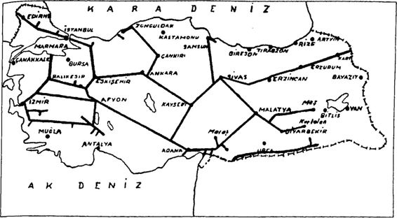
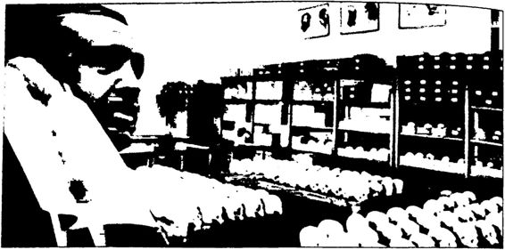
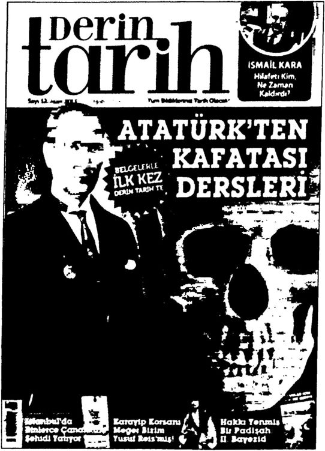
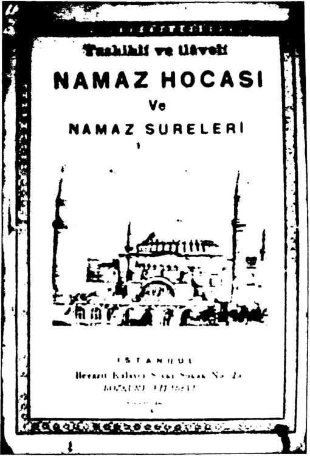
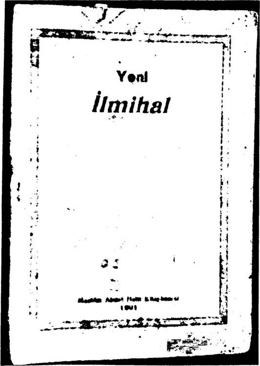
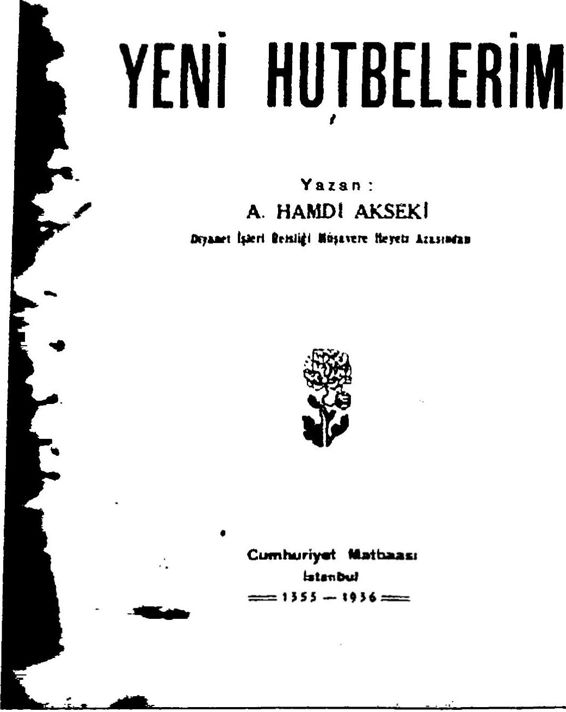
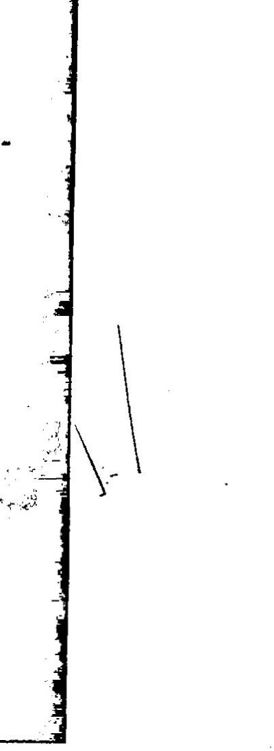
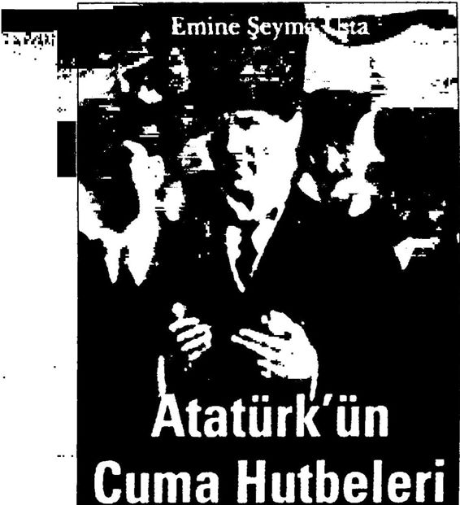
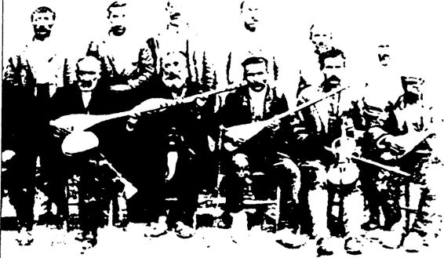

Alınanlara Verilen Bağdat Demiryolu İmtiyazı Abdülhamid, 1899’da Konya’dan Bağdat ve Basra’ya dek uza nacak hattın yapım imtiyazını çok yüksek bir kilometre garantisi ile Alman Deutsche Bank’a vermiştir. 1902’de kesin imtiyaz anlaşmasının imzalanmasından sonra “Anadolu Demiryolu Şirketi” 99 yıl süreyle Konya’dan başlayan ve Karaman, Ereğli, Adana, Hamidiye, Kilis Tel Habeş, Nusaybin, Musul, Tikrit, Saciye, Bağdat, Kerbela, Mecet, Zu bevr, Basra üzerinden İran Körfezi’ne uzanan ana ve yan hatların iş letme imtiyazlarıyla Diyarbakır, Harput, Maraş, Birecek ve Mardin’e uzanan diğer bazı yan hatların imtiyazını almıştır. Şirket, 16.500 frank kilometre garantisiyle işe başlamıştır. Ancak para yetmeyince iş yarım kalmıştır. Bunun üzerine 1903’te şirketle 1902 imtiyazına ek bir söz leşme imzalanmıştır. Buna göre şirket hattın geçtiği yerlerdeki taş ve kum ocaklarını kullanabilecek ve arazi kamulaştırması yapabilecektir. Ayrıcalığın diğer şartlarına göre 1889’daki gibişirket hattın iki ya nındaki 20’şer kilometrelik bir alan içindeki madenleri işletebilecek, ruhsat almadan arkeolojik kazı yapabilecek, devlet ormanlarından be dava yararlanabilecek, yurt içinden ve dışından getireceği demiryolu araçgereçleri, makine, lokomotif, vagon ve diğer malzemeler için ve kâr garantisi 15.000 franga çıkıncaya kadar, dışarıdan ithal edeceği kömür için, hiçbir gümrük ödemeyecektir. Ayrıca Osmanlı hükümeti, şirkete, işletmeye açılacak her kilometre için yılda 4500 frank kilo metre garanti etmiştir. Gelirler bu rakamı bulmadığı zaman ise, hü kümet aradaki açığı kapatmayı kabul etmiştir. Ayrıca hükümet, Basra Körfezi’ne kadar ekspres seferler yapabilmesi için, yapılacak yenileştir melere harcanmak üzere, şirkete otuz yıllık taksitlerle 350.000 frank ödemeyi kabul etmiştir. Bu paranın ödenmesi demiryolunun Halep’e ulaşmasından sonra başlayacaktı. Şirkete bu ayrıcalıkların yanı sıra, hat boyunca tuğla ocakları açabilmek, demiryolu ve yan kuruluşları için gerekli olan elektrik enerjisini sağlayabilmek için elektrik santral leri kurabilmek, “Avrupa ile Asya arasında direkt yataklı vagonları sefere koyabilmek için İstanbul ile Haydarpaşa arasında feribotlar ça lıştırabilmek”, Haydarpaşa ve Basra’da modern depolar yapabilmek gibi haklar tanınmıştır.
Bütün bunlara ek olarak ayrıcalık sahiplerine Bağdat, Basra ve Basra Körfezi terminalinde limanlar ve diğer tesisler kurma hakkı veril miştir. Şirket Dicle, Fırat nehirleri ile Şattülarab’da gemi işletmek hak kını da elde etmiştir. Anlaşmaya göre Konyaİran Körfezi hattında 200 kilometrelik ilk bölümü için 11.000 frank olan garanti 15.500 franga çıkarılmıştır. Osmanlı Devleti bu oldukça yüksek garantiye karşılık olarak Konya, Halep ve Urfa vilayetlerinin öşür gelirlerini göstermiştir.
Ayrıcalık Anlaşması’na göre daha sonra bir “Bağdat Demiryolu Şirketi Şahanei Osmaniyesi” kurulmasından söz ediliyorsa da, bu şir ketin yalnızca adında “Osmanlı” sıfatı olmasından başka, hiçbir “Os manlıcı” niteliği yoktur. II. Abdiilhamid, Alman demiryolu şirketine verdiği bu ayrıcalık ile Earle’nin ifadesiyle “İmparatorluğunu ipotek etmiştir”. Bu demiryolu imtiyazlarıyla Alman emperyalizminin sömür
gesi durumuna gelen Osmanlı’nın “şahaneliğinden” söz etmek ise tek kelimeyle trajikomik bir durumdur.
Rusya’nın Baskısı Nedeniyle Yapılamayan Demiryolları 19. ve 20. yüzyılda İngiltere, Fransa ve Almanya gibi Rusya’nın da Osmanlı Devleti’yle ilgili emperyalist planlan vardır. Demiryolunun nasıl bir silah olduğunu çok iyi bilen Rusya, demiryolunun Ankara’nın doğusuna geçmesinin ileride kendisine birçok bakımdan zarar verece ğini düşünerek buna karşı çıkmıştır.
1900’lerde Osmanlı Devleti ticaretinin yüzde 9’unu Rusya ile yapmaktadır. İstanbul, bu yıllarda Rusya’dan yılda 65.000 ton un almaktadır. Demiryolu Konya’ya vardığı anda Rusya bu ticarete son vermiştir. Rusya endişelenmekte haklıdır. Nitekim 1901’den itibaren Anadolu’dan, demiryolları ile getirilen buğday, İstanbul’daki tüketi min üçte ikisinden fazlasını karşılamıştır. Bu nedenle İstanbul, Rusya ve Bulgaristan’dan tahıl almamaya başlamıştır.
Rusya askeri bakımdan da Osmanlı Devleti’nin demiryolunu doğu bölgelerine kadar uzatmasına karşı çıkmıştır. Ruslar, doğu de miryollarının kendi tarihi emellerine darbe vurmasından korkmuşlar dır. Özellikle Bağdat hattının birinci plana göreDoğu Anadolu’ya çok yakın geçmesine bu nedenle karşı çıkmışlardır. Osmanlı’nın ulaşım olanaklarının yetersiz olması, askeri ve ticari bakımlardan Rusya’nın işine gelmektedir.
Emperyalizmin Rayı 1880’lerden itibaren önce İngiltere’nin ve Fransa’nın sonra ise Almanya’nın Osmanlı topraklarında inşa ettiği demiryolları borçlu ve ekonomik olarak çökmüş durumdaki Osmanlı Devleti’nin emperya listlerce daha fazla sömürülmesine yol açmıştır. Orhan Kurmuş, Em peryalizmin Türkiye'ye Girişi adlı kitabında İngiliz emperyalizminin; Murat Özyüksel ise, OsmanlıAlman İlişkilerinin Gelişim Sürecinde
Anadolu ve Bağdat Demiryolları adlı kitabında Alman emperyalizmi nin demiryollarıyla Osmanlı Devleti’ni nasıl sömürdüklerini bütün belge ve bilgileriyle gözler önüne sermişlerdir.
Özetlersek: 1880’lere kadar yavaş giden Osmanlı demiryolu çalış maları, Düyûnı Umûmiye İdaresi’nin kurulmasından sonra hızlanmış tır. Çünkü iflas eden Osmanlı’nın bütün yeraltı yerüstü zenginliklerine el koyan emperyalist Avrupa, bu zenginlikleri demiryollarıyla bir an önce ele geçirmek istemiştir. Düyûnı Umûmiye İdaresi demiryolu imti yazları için teminat gösterilen vergilere el koyarak, bu gelirleri imtiyaz sahibi yabancı şirketlere aktarmıştır. Osmanlı demiryollarının tamamı Hicaz demiryolu dışındayabancılarca inşa edilmiştir.
Osmanlı’da yabancı şirketler, 18901914 arasında en büyük ya tırımı demiryollarına yapmıştır. Çünkü en çok demiryolları kazandır mıştır.
Emperyalist Avrupa ülkeleri Osmanlı Devleti’nde demiryolu ya parak nüfuz bölgeleri oluşturmuştur. Osmanlı Devleti’nde inşa edilen ilk demiryolu hatları en verimli tarımsal sanayi ürünleri yetişen Ege, Mezopotamya, Büyük ve Küçük Menderes ile Çukurova’da yapılmış tır. Emperyalist ülkeler inşa ettikleri bu demiryolları ile bu bölgelerdeki hammaddeleri Avrupa sanayine hızlı ve yoğun bir şekilde aktarmak istemişlerdir.
Osmanlı Devleti “kilometre garantisi” denilen sistemle demiryolu yapan yabancı şirketlerin kârlarını garanti altına almıştır. Demiryolu şirketlerinin “garanti edilen” kârın altında kâr elde etmeleri halinde aradaki farkı Osmanlı ödemiştir. Osmanlı, doğacak farkı ödemek için bir veya birkaç vilayetin öşür gelirlerini karşılık göstermiştir. Bu gelirler, Düyûnı Umûmiye İdaresi’nin kontrolünde olmayan vergilerdir. Fakat yabancı şirketler Osmanlı Devleti’ne güvenmedikleri için garanti kap samındaki vergileri Düyûnı Umûmiye İdaresi’ne toplatıp işletmişlerdir. Demiryolu imtiyazlarına göre hattın geçeceği devlet arazisi, demiryolu yapacak şirkete bedelsiz devredilmiştir. Şirket hat boyundaki devlet or manlarını ve taş ocaklarını bedelsiz kullanabilmiştir. Yine şirket demir yolu yapımı, bakımı ve işletilmesi için gereken malzemeyi gümrüksüz olarak ithal edebilmiştir. Demiryolunun kenarlarındaki bazen 40, ba zen 45 kilometrelik şeritler içindeki petrol dahil bütün madenlerin iş letme hakkı demiryolu yapan şirkete verilmiştir. Ayrıca imtiyaz sahibi şirketler, demiryolunun yapımı sırasında ruhsat almaksızın eski eser ka zıları yapabilecek ve demiryolu boyunca telgraf hattı döşeyebilecektir. Osmanlı hükümeti, Avrupa şirketlerine izin veren her imtiyaz sözleş mesi ile uyruklarının bir bölümünü daha yabancıların etki alanına bı rakmıştır.
Osmanlı Devleti’nde yapılacak demiryollarının, demiryollarını yapan emperyalist ülkelerin çıkarlarına aykırı olmamasına dikkat edil miştir.
Demiryolunun merkezden, yani İstanbul’dan başlayarak Anado lu’yu boydan boya geçmesi, Osmanlı Devleti’ni güçlendireceğinden bundan kaçınılmış, devletin paylaşılmasını kolaylaştıracak biçimde de miryolları Akdeniz kıyılarından başlatılmıştır.
Osmanlı Devleti’nin demiryolları Müslüman Türklere değil, İngi lizlere, Fransızlara, Almanlara, Ruslara yaramıştır.
Emperyalist ülkelerin ve onların kapitalist şirketlerinin Osman lı Devleti’nde inşa edip işlettikleri demiryolları, ilk bakışta bir uygar lık faaliyeti gibi görünüyorsa da, demiryollarının inşaat ve işletilmesi için gerekli malzemenin Avrupa’dan hiçbir gümrük ödenmeden ithal edilmesi, demiryolunu yapacak şirkete kilometre garantisi verilmesi ve şirkete demiryolu hatlarının geçeceği yerlerdeki yeraltı ve yerüstü zen ginlik kaynaklarına sahip olma hakkı tanınması gibi ayrıcalıklarla Os manlı demiryolları Avrupalılar için çok kârlı bir yatırım aracı olmuş ve ülkenin sömürülmesine yol açmıştır. Öyle ki, demiryolu yatırımlarının bu denli kârlı ve sağlam güvencelere bağlanması, yabancı demiryo lu şirketlerinin kimi zaman daha fazla kâr sağlamak için hatları düz lük arazide bile dolambaçlı bir şekilde döşemelerine neden olmuştur. İflas eden, Düyûnı Umûmiye İdaresi ile bütün yeraltı ve yerüstü zen ginliklerinin gelirlerine “alacak” olarak el konulan Osmanlı Devleti, yaptırdığı demiryollarından kârdan çok zarar etmiştir. Demiryollarıyla Osmanlı’da tarımsal gelirlerin ve ticaretin arttığı doğrudur, ancak elde edilen gelirler hep yabancı ülkelere gitmiştir. Ayrıca emperyalist amaçlar la inşa edilen demiryolları birbirinden bağımsız hatlardan oluştuğu için Osmanlı Devleti’nin askeri ihtiyaçlarına da yanıt vermekten uzaktır."
Başbakan R. Tayyip Erdoğan’ın “Neyi ördün?” sorusunu biz de Osmanlı’ya soralım.
Osmanlı Devleti’nde 1800’lerden 1900’lere kadar 8343 kilometre demiryolu inşa edilmiştir. Bunun 356 kilometrelik ErzurumSarıka mış sınır hattı Ruslarca yapılmış, 6778 kilometresi İngiliz, Fransız ve Alman şirketlerce yapılmış, 1564 kilometrelik Hicaz hattı ise devlet tarafından yapılmıştır. 1918 yılında Türkiye’de Misakı Milli sınırları içinde toplam 4112 kilometre demiryolu vardır.
“Ancak dış baskılarla şekillenen ve bir ağaç görüntüsünde liman lardan iç bölgelere uzanan birbirinden kopuk bu demiryolları, ülke çıkarlarından ziyade, daha çok emperyalist devletlere hizmet etmiş olup, Osmanlı döneminde milli ve bağımsız bir demiryolu politikası izlememiştir.”
Aslında “Neyi ördün?” sorusunu önce Osmanlı padişahlarına sor mak gerekir. Ayrıca bu sorudan önce de “Kim ördü? Niye ördü? Nasıl ördü?” sorularını sormak gerekir!
Cumhuriyet’in Demiryolları: Milli Demir Ağ R. Tayyip Erdoğan, 17 Ağustos 2012’de Biliyorsunuz 10. Yıl MarşTnda geçer, demir ağlarla ördük falan, neyi ördün? Hiçbir şey örmüş falan değilsin. Ortada duranlar belliydi. Demir ağlarla şimdi Türkiye’yi biz örüyoruz,” demiştir.
Şimdi Erdoğan’ın “... Neyi ördün? Hiçbir şey örmüş falan değil sin. Ortada duranlar belliydi...” sözlerine yanıt verelim.
Erdoğan’a, Atatürk’ün genç Cumhuriyeti’nin “neyi ördüğünü” ve “ortada duranları” gösterelim!
İşte 19231950 yılları arasında (Atatürk ve İnönü döneminde) Türkiye’de örülen demir ağlar:
Neyin örüldüğü ortada sanırım!
 19231950 arasında Türkiye’nin demiryolları (Cumhuriyet’in demir ağları)
Ray Yarışı: Atatürk: 3186, Erdoğan 1085
1950 yılında Türkiye’de 3579 kilometresi yeni yapılan, 3840 ki lometresi yabancı şirketlerden alınan ve 256 kilometresi de Ruslardan kalan olmak üzere toplam 7675 kilometre demiryolu vardır."
Türkiye’de 19231950 arasında, yani Atatürk ve İnönü (Tek Parti) döneminde toplanı 3579 kilometre yeni demiryolu yapılmıştır. Bunun 3186 kilometresi 19231938 arasındaki Atatürk döneminde yapılmış tır. Bunun 393 kilometresi ise 19391950 arasındaki İnönü döneminde yapılmıştır. II. Dünya Savaşı’nın demiryolu yapımına ciddi bir dar be vurduğu görülmektedir. Ancak Atatürk döneminde yapılan 3186
kilometre demiryolunun yapımında “Başvekil” olarak İnönü’nün de doğrudan pay sahibi olduğu unutulmamalıdır.
19231950 yılları arasındaki Atatürk ve İnönü dönemlerinde top lam 3579 kilometre yeni demiryolu (demir ağ) yapılmıştır. Bu ne denle İnönü’nün sorumluluğunda yapılan toplam demiryolu uzunluğu aslında 3579 kilometredir.
Atatürk ve İnönü dönemlerinde örülenler bu kadardır.
Peki! Başbakan Erdoğan’ın çok sevdiği Menderes’in DP’si döne minde örülenler ne kadardır? Erdoğan’ın ağzıyla sorarsak, “Menderes ne örmüştür?''
19231938 arasındaki Atatürk döneminde toplam 3186 kilometre, 19391949 arasındaki İnönü döneminde 393 kilometre, 19231949 arasındaki Atatürk ve İnönü (Tek Parti) döneminde 3579 kilometre, 19501959 arasındaki Menderes döneminde 266 kilometre, 19602003 arasındaki hükümetler döneminde 679 kilometre de miryolu yapılmıştır.
TCDD’nin verilerine göre 2011 yılı itibariyle Türkiye’deki ana hat uzunluğu 8697 kilometredir. Türkiye’de Atatürk döneminde toplam 7675 kilometre demiryolu vardı zaten. 19231938 yılları ara sındaki 15 yıllık Atatürk döneminde 3186 kilometre demiryolu yapıl mışken, Atatürk’ten sonraki 73 yılda 2000 kilometre demiryolu bile yapılamamıştır. Yani Atatürk tek başına, yokluk ve yoksulluk içinde, üstelik neredeyse tamamı yerli sermaye ile, aralarında AKP’nin de bu lunduğu bütün Cumhuriyet hükümetlerinden daha fazla demiryolu yapmıştır. Hesap ortadadır!
TCDD’nin verilerine göre 20022012 arasındaki 10 yıllık AKP döneminde 1085 kilometre demiryolu inşa edilmiştir. Buna, yüksek hızlı tren yolu da dahildir. Bu nedenle birkaç yıl önce AKP’li Ulaş tırma Bakanı Binali Yıldırım, partisinin demiryolu politikasını anlatır ken şöyle demiştir: “... 19231946 arasında bir yılda yapılan demir yolu uzunluğu 128 kilometreydi. 19462003 yılları arasında bu oran, yılda 11 kilometreye düştü. 2003’ten sonra, şu anda yılbaşına düşen demiryolu yapımı 107 kilometreye ulaştı. Hâlâ Atatürk döneminin ra kamlarına ulaşamadık.”
AKP’li Ulaştırma Bakanı birkaç yıl önce, “Hâlâ Atatürk döne minin rakamlarına ulaşamadık,” diyerek özeleştiri yaparken, birkaç yıl sonra (17 Ağustos 2012’de) AKP’li Başbakan R. Tayyip Erdoğan, Atatürk’e, “Neyi ördün! Türkiye'yi demir ağlarla biz örüyoruz!” diye seslenmiştir.
Başbakan’ın dediği gibi “olanlar ortada!”
Atatürk döneminde 3186 kilometre, Erdoğan döneminde ise 1085 kilometre...
Erdoğan bütün imkânlarına karşın 10 yıllık iktidarında ancak Atatürk’ün üçte biri kadar demiryolu inşa etmiştir. Buna rağmen “(...) Biliyorsunuz 10. Yıl Marşı’nda geçer, demir ağlarla ördük falan, neyi ördün? Hiçbir şey örmüş falan değilsin. Ortada duranlar belliydi. De mir ağlarla şimdi Türkiye’yi biz örüyoruz, ” diyerek Atatürk dönemi demiryolu politikasını eleştirmiştir.
“El insaf!” diyorum...
Cumhuriyetin Demir Ağ Mucizesi Üstelik Atatürk, o 3186 kilometrelik demiryolunu, Osmanlı borç larını ödeyen, parasız, teknik olanaklardan yoksun bir Türkiye’de inşa etmiştir.
Atatürk, 1931 yılında “Demir Ağ Projesi”ni şöyle açıklamıştır: "... Türkiye Hükümetinin tespit ettiği projeler dahilinde kararlaştırılan za manlar içinde vatanın bütün bölgeleri çelik raylarla birbirine bağlanacak tır. Bütün vatan bir demir kitle haline gelecektir. Demiryolları memleketin tüfekten, toptan daha önemli bir güvenlik sistemi, bir silahıdır. Demir yollarını kullanacak olan Türk milleti, geçmişindeki ilk sanatkârlığının, demirciliğinin eserini tekrar göstermiş olmakla övünç duyacaktır. Demir yolları, Türk milletinin refah ve medeniyet yollarıdır.”
Gerçekten de çok değil 1015 senede “vatanın bütün bölgeleri çelik raylarla birbirine bağlanmış” ve bütün vatan bir “demir kitle” haline gelmiştir.
Bu çok büyük bir mucizedir. Şevket Süreyya Aydemir bu büyük başarıyı şöyle anlatmıştır: "... Asırlardan beri hatta kervan yollarının bile izlerinin silindiği Anadolu beyabanında bu iş ve inşa mücadelesi nin heyecanını, bugün belki iyice değerlendirmemiz mümkündür. Ama hiçbir dış yardım olmadan ve yapılabilen teknik mukaveleleri bile sık sık bozmak zorunda kalınarak hazin bir bütçe ile yürütülen bu işin ba şarı büyüklüğünü gelecek nesiller, 19301938 yılları arasının ölçülerini canlandırarak kavramaya çalışmalıdırlar ve düşünmelidirler ki, bu de miryollarının açıldığı ve aşırıldığı dağlarda, bellerde, vadilerde mesela Fırat Vadisi’nde, mesela Filyos Vadisi’nde, ondan önce hatta kağnıla rın bile geçebileceği yol izleri, işaretleri yoktu. Cumhuriyet hükümeti ise eski imtiyazlı şirketlerden, hatta çok yerde gişe biletçiliklerinin bile Türklere layık görülmeyerek azınlıkların çalıştırıldığı bir kadro, yahut kadrosuzluk teslim almıştı...”
Türkiye, özellikle 19331939 arasında “Türk bilgisi, Türk ser mayesi, Türk müteahhidi ve Türk işçisi” sloganıyla Türkiye’yi demir ağlarla örmüştür. Gerçekten de Türk mühendisleri ve Türk işçileri, ge çilmez denilen dağları delerek, aşılmaz denilen dereleri aşarak demir yolunu Anadolu’nun en doğusuna, Erzurum’a kadar götürmüşlerdir.
Örneğin SivasErzurum Hattı, ÇetinkayaMalatya birleşme hat tıyla birlikte Cumhuriyet tarihinde bir seferde döşenen en uzun hat ol muştur. Bu iki hattın toplam uzunluğu 690 kilometredir. Arazinin son derece sarp ve engebeli oluşu yüzünden inşaat büyük fedakârlılarla ger çekleştirilmiştir. Malzemeler, sarp yerlerde bazen katırlar üstünde, ba zen nehirler üzerine kurulan asma köprülerle taşınmıştır. ismet İnö nü, hattın inşaatı sırasında Türk mühendislerin başarısını, “Diyebilirim ki, şimendifer inşaatında Türk mühendisliği her meseleyi halletmeye salâhiyet imtihanını Erzurum hattında vermiştir,” sözleriyle dile ge tirmiştir. Hattın yapımı sırasında karşılaşılan zorluklara rağmen, günde ortalama 1500 metre demiryolu döşenmiştir ki, bu rakam Tür kiye’deki günlük demiryolu döşeme rekorudur. SivasErzurum hattında 138 tünel inşa edilmiştir. Bunların uzunluğu 22.242 metreye ulaşmıştır. ÇetinkayaMalatya birleşme hattı ile birlikte bu tünel sa yısı 153’ü bulmuş ve her iki hattaki tünellerin uzunluğu da toplamda 31.949 metreye çıkmıştır. Türkiye’de 1939’a kadar diğer tüm hat larda yapılan tünel sayısı 223 ve bunların uzunluğu da 45.151 metre dir. O dönemin koşullarında bu kadar tünel inşaatı gerçek anlamda bir rekordur. SivasErzurum ve ÇetinkayaMalatya hatlarındaki tünel lerin masrafı 16 milyon TL’yi bulmuştur. Her iki hatta toplam 33 demir köprü inşa edilerek, bu köprülerde de 7000 ton demir kullanıl mıştır. İşçiler olağanüstü bir fedakârlıkla demir ağları inşa etmiş lerdir. Örneğin, 500 kilo civarındaki bir ray ancak 10 işçi tarafından taşınabilmiş, raylar soğuk ve sıcaktan çok etkilendikleri için bu gibi havalarda adeta el ile tutulamayacak hale gelmiştir. Hattı planlanan sürede bitirebilmek için gerektiğinde geceleri de çalışılmıştır. Sadece demiryolu döşeme işinde 650.000 işçi çalışmıştır. Bu bilgilerden de görüleceği gibi SivasErzurum ve ÇetinkayaMalatya demiryolu hatları büyük fedakârlıklarla gerçekleştirilmiştir.
Cumhuriyetin demiryollarının en önemli özelliği “milli demir ağ lar” olmasıdır. Bilindiği gibi Osmanlı’nın demiryollarının en önemli özelliği “emperyalist demir ağaç” olmasıydı. Cumhuriyeti kuranlar, Osmanlı’nın yanılgılarını tekrarlamamaya büyük özen göstermişlerdir. Bu nedenle demiryolu politikalarının “milli” ve “işlevsel” olmasına gay ret etmişlerdir. Bu çerçevede öncelikle yabancıların elindeki demiryolu imtiyazlarını satın alarak mevcut demiryollarını millileştirmişler, sonra milli sermaye ile yeni demiryolları yapmışlardır. Yeni demiryollarını yaparken de “milli çıkarları” esas almışlardır. Osmanlı zamanında ya bancıların kendi çıkarları doğrultusunda hammadde kaynaklarına, ta rım alanlarına ve oradan birbirine bağlantısız biçimde limanlara giden “demir ağaç” biçimindeki demiryolları yerine, kuzeygüney ve doğubatı doğrultusunda bütün Misakı Milli sınırlarını birbirine bağlayan “demir ağlar” biçiminde demiryolları yapılmıştır. Genç Cumhuriyet, demiryolu yaparken “Demire ulaşmak”, “Kömüre ulaşmak”, “Bakıra ulaşmak” sloganlarıyla özellikle maden havzalarına ulaşmayı amaçlamıştır.
Demiryolu Politikasının Terk Edilişi Türkiye’de milli demiryolu poltikası 1950’de iktidara gelen Menderes’in DP’si döneminde terk edilmiş, karayolu poltikasına ağır lık verilmiştir.
Aslında “Demir Ağ Projesi”ne yönelik ilk emperyalist eleştiriler daha Atatürk’ün sağlığında başlamıştır. Örneğin 1930 yılında Mer kez Bankası’nın kuruluş çalışmaları sırasında hazırlanan çok sayıdaki rapordan biri olan “Müller Raporu”nda Dr. Kari Müller, anayurdun demir ağlarla örülmesine kendince ciddi eleştiriler getirmiştir. Alman Müller raporunda, demiryolu inşaatlarının çok pahalıya mal olduğunu belirtmiştir. Ancak “Müller Raporu”ndaki görüşler hükümet tarafın dan dikkate alınmamıştır.
1946’dan itibaren Amerikan emperyalizminin kontrolüne giren Türkiye, 1947 yılında ulaşım politikasını değiştirmiştir. ABD’nin 1947 yılında Türkiye’ye yapacağı askeri ve ekonomik yardım programında “yol” konusu da yer almıştır. Bu çerçevede ABD FEDERAL KARAYO LU TEŞKİLATI (Federal Bureau of Public Roads) Genel Müdür Yar dımcısı H. G. Hilts başkanlığında bir uzman grubu Türkiye’ye gelerek yaptıkları incelemeler sonunda “Hilts Raporu” adıyla bir rapor hazır layarak Bayındırlık Bakanlığı’na sunmuşlardır. Hilts Raporu’nda, Atatürk’ün “Demir Ağ Projesi” eleştirilerek karayolunun çok daha iyi bir ulaştırma yöntemi olduğu iddia edilmiştir. Raporda ayrıca demir yolunun doğu illerine ulaştırılması dışında önemli bir ihtiyaç olmadığı belirtilmiştir. Bir zamanlar Rusya, kendi çıkarları açısından Osmanlı Devleti’nin doğu bölgelerine demiryolu yapmasını istemezken, şimdi ABD yine kendi çıkarları açısından Türkiye Cumhuriyeti’nin sadece doğuya demiryolu yapmasını istemektedir. Çünkü ABD, Rusya ile muhtemel bir savaşta Türkiye’nin Rusya’ya yakın doğu bölgelerine gi den demiryollarına ihtiyaç duyacaktır.
1948’den itibaren Türkiye’de “Hilts Raporu” doğrultusunda Atatürk’ün “Demir Ağ Projesi” rafa kaldırılarak, “Karayolu Projesi” hayata geçirilmiştir.
1856’dan başlayarak Osmanlı’yı çökerten “imtiyaz demiryolculu ğu”, 1947’den sonra o imtiyazı da Türkiye’ye çok görüp “Demiryolu yapmak sizin neyinize ” demiştir. Bu sözler, 1947’de Türkiye’ye gelip, yurdu baştan başa dolaşıp incelemelerde bulunan ünlü Amerikan Pet rol tekeli Standart Oil Company’nin Mühendisler Kurulu Başkanı ve ABD Dışişleri Bakanlığı Petrol Müşaviri Thornburg’a aittir.
Aradan yıllar geçmiş, Türkiye demiryollarını unutup karayolları na ağırlık vermiştir, ama emperyalizm işi sıkı tutmaya kararlıdır. “Ne olur ne olmaz! Türkiye yeniden demiryollarına önem verir!" endişe siyle olsa gerek, 1995 yılında Türkiye’ye bir Amerikan ziyareti daha gerçekleşmiştir. CIA’ye hizmet ve yatırım desteği veren Amerikan kuruluşu Booz Ailen Hamilton, ülkemizde yaptığı incelemelerin so nuçlarını Hamilton Raporu” adıyla Devlet Demiryolları yönetimine sunmuştur. “İyilik önerileri” demeti görüntüsüne büründürülmüş bu yeni “ ihtarname ”de bize aslında, “Demiryollarını ortadan kaldırın!” denilmiştir.
Genç Cumhuriyet, demiryolu yapımı kadar, demiryolu işletmesine de büyük önem vermiştir. Yapılan çalışmalar sonunda 1934’te trenler le 8.510.458 yolcu taşınırken bu sayı 1939’da 25.636.009’a çıkmıştır. Aynı dönemde 2.807.596 ton taşman yük de 6.151.886 tona çıkmıştır. Demiryolunun Erzurum’a ulaşmasıyla hayvan taşımacılığında da cid di bir artış görülmüştür. 1934’te trenlerle 64.000 hayvan taşınırken, 1939’da bu sayı yüzde 812’Iik olağanüstü bir artışla 519.932’ye çık mıştır.
19231938 arasında demiryolu işletme araçlarında da büyük artış görülmüştür. Buna göre 1923’te 118 olan lokomotif sayısı 1939’da 632’ye; 1923’te 203 olan vagon sayısı 1939’da 810’a; 1923’te 1983 olan yük vagonu sayısı da 9883’e yükselmiştir.
DP döneminde demiryolu politikasının tamamen terk edilmesine paralel zaman içinde Türkiye’de demiryolu taşımacılığı çok gerilemiş tir. Örneğin 1955’te Türkiye’de demiryollarının yolcu taşıma payı yüz de 24’lerde, yük taşıma payı ise yüzde 53’lerdeyken, 1970’te yolcu ta şıma payı yüzde 8’e, yük taşıma payı ise yüzde 22’ye düşmüştür. 1972 yılında yurtiçi yolcu taşımacılığında, karayolu taşımacılığının payı yüz de 90.6, banliyöler hariç demiryolu taşımacılığının payı yüzde 7.2’dir. 1983’te bu paylar karayollarında yüzde 95.3’e yükselirken, demiryol ları önce yüzde 3.8’e, sonra 1993’te, yüzde 3.2’ye kadar gerilemiştir. 2001 yılı verilerine göre Türkiye’de karayollarına yüzde 52.8 pay ayrı lırken, demiryollarına ayrılan pay yüzde 4’lerde kalmıştır. 1950’de yolcu taşıma payı yüzde 42.2’den 2011’de yüzde 1.6 seviyesine, yük taşıma payı da yüzde 68.2’den yüzde 4.1 seviyesine düşmüştür.
Nuri Demirağ, Ali Çetinkaya ve İsmet İnönü Başbakan R. Tayyip Erdoğan, 18 Mayıs 2011’de şöyle demiştir: "... Nuri Demirağ Türkiye'ye çok büyük hizmetleri olmuş, büyük ya tırımlar yapmış ve ilk Türk uçağını icat edendir, yapandır. 1930’lu yıllarda Türkiye’de uçak sanayinin kurulması için çaba harcamış bir zattır. Şu anda bizim İstanbul Milletvekilimiz bu dönem Sivas Millet vekili adayımız Nursuna Memecan hanımefendinin dedesi bu zat. Nuri Demirağ, ki biz Sivas Havalimanı’nın adını Nuri Demirağ Havalima nı koyduk, çünkü kendisi Divriği’dendir. 1931 yılında İstanbul’a bir köprü yapılması için hazırlık yapıyor ve ayrıntılı şekilde projeyi hazır lıyor. Yıl 1931. Atatürk çok heyecanlanıyor. Projeden dolayı kutluyor. Nuri Demirağ’ın derhal Ankara’ya gitmesini ve projeye başlanmasını istiyor. O sırada Bayındırlık Bakanı Cellat Ali. Ali Çetinkaya, İsmet İnönü ile birlikte bu projeye hayır diyorlar. Hatta Nuri Demirağ, ‘Va siyetimdir bu köprüden İnönü ve Çetinkaya geçemez,’ diyor.”
"... Bunların genlerinde bozmak, engellemek var. CHP 1970’ler de değil, daha 1930’larda köprüye karşı çıkan bir partiydi. Birinci, İkinciye karşı çıktılar, şimdi 3. köprüye de karşı çıkıyorlar, ama biz onu da yapacağız. İstanbul Boğazından tüp geçide de raylı sisteme de karşı çıktılar. Bitiriyoruz, 2 yıl kaldı. Hangi yüzle buralardan arabala rınızla geçiyorsunuz... ”
Erdoğan bu sözleriyle Nuri Demirağ’a sahip çıkarken Ali Çetinka ya ve İsmet İnönü’ye cephe almıştır.
Erdoğan’ın İsmet İnönü karşıtlığı malum! Daha önceki bölümde Erdoğan’ın, Ali Çetinkaya’ya neden “düşman” olduğunu da anlatma ya çalışmıştım! Bu düşmanlıkta, başka nedenlerle birlikte, özellikle Ali Çetinkaya’nın, Ankara İstiklal Mahkemesi’nde İskilipli Atıf Hoca’ya verdiği idam kararının etkili olduğunu belirtmiştim.
Ancak Nuri Demirağ ile Ali Çetinkaya, her ikisi de Atatürk Cumhuriyeti’nin kalkınması için elinden geleni yapan iki Cumhu riyet neferidir. Her ikisi de Atatürk’ün ulusal kalkınma projesinde çok önemli görevler üstlenip bu görevleri başarıyla yerine getirmiştir. Atatürk’ün “milli sanayi” ve “milli demiryolu” politikalarının en önde gelen iki ismi Nuri Demirağ ile Ali Çetinkaya’dır. Üstelik bu ikili en büyük işlere İsmet İnönü’nün başbakanlığı döneminde imza atmıştır. Yani Nuri Demirağ, Ali Çetinkaya ve İsmet İnönü, hepsi birden elbirli ği içinde Atatürk’ün Çağdaş Cumhuriyet Projesi doğrultusunda gecele rini gündüzlerine katarak çalışmış üç kişidir. 1015 yıllık mesailerinde, yaptıkları işlerde, farklı karakterlerinin de etkisiyle, zaman zaman ters düşmüş olmaları, görüş ayrılıkları, kırgınlıklar yaşamış olmaları, on ların Cumhuriyetimiz için yapmış oldukları büyük işlere gölge düşür mez, düşürmemelidir.
Fakat Başbakan Erdoğan, Nuri Demirağ’a sahip çıkıp Ali Çetin kaya ile İsmet İnönü’yü elinin tersiyle bir kenara itmiştir. Erdoğan, Ali Çetinkaya ile İsmet İnönü’nün, Nuri Demirağ’ın “Boğaz Köprü sü Projesi”ne karşı çıktıklarını belirtip, "... Bunların genlerinde boz mak, engellemek var...” diyerek CHP’nin geçmişte de “yatırımlara” karşı olduğunu iddia etmiştir. Ancak İnönü’nün, Ali Çetinkaya’nm ve CHP’nin genlerinde “bozmak, engellemek” yoktur. Tam tersine on lar, yokluk ve yoksulluk içinde, savaş yorgunu bir imparatorluk enka zından çağdaş bir Türkiye yaratmıştır. Dolayısıyla onların genlerinde “bozmak, engellemek” değil, “yapmak, yaratmak” vardır.
Atatürk’ün “Milli Demiryolu Projesi”ni Nuri Demirağ, Ali Çe tinkaya ve İsmet İnönü hayata geçirmiştir. Nuri Demirağ müteşebbis, Ali Çetinkaya bayındırlık bakanı, İsmet İnönü de başbakan olarak Türkiye’yi sarıp sarmalayan demir ağları elbirliğiyle yapmıştır. Cum huriyetin demiryolu başarısının ardında, S. Sırrı Bey, Behiç Bey (Er kin), Hilmi Bey, Nuri (Demirağ), Recep (Peker), Ali (Çetinkaya) ve İsmet (İnönü) vardır.
Türkiye’de 19231939 arasındaki milli demiryollarının çoğunu Nuri Demirağ yapmıştır. Bu yüzden Atatürk kendisine “Demirağ” so yadını vermiştir.
Başbakan Erdoğan, 18 Mayıs 2011’deki konuşmasında, “... Nuri Demirağ Türkiye’ye çok büyük hizmetleri olmuş, büyük yatırımlar yapmış ve ilk Türk uçağını icat edendir, yapandır. 1930’lu yıllarda Türkiye’de uçak sanayinin kurulması için çaba harcamış bir zattır,” diyerek Nuri Demirağ’ın gerçekten büyük başarılarından söz etmiş, ancak nedense onun en büyük başarılarından biri olan “demiryolların dan” hiç söz etmemiştir. Erdoğan; 17 Ağustos 2012’de yaptığı başka bir konuşmada, 10. Yıl Marşı’ndaki “Demir ağlarla ördük Anayurdu dört baştan” ifadesine gönderme yapıp Neyi ördün? Hiçbir şey örmüş falan değilsin. Ortada duranlar belliydi...” diyerek erken Cum huriyet dönemini eleştirmek istemiştir. Ancak Atatürk’ü, İnönü’yü, CHP’yi, yani Cumhuriyet’i eleştirmek isterken, bir buçuk yıl önce öve öve bitiremediği Nuri Demirağ’ı da eleştirmiştir farkında olma dan! Çünkü Atatürk ve İnönü döneminde Türkiye’yi milli demir ağ larla ören kişi Nuri Demirağ’dır. Bu bakımdan aslında “Neyi ördün?” sorusunun sahadaki muhatabı da doğrudan Nuri Demirağ’dır. “Neyi ördün} sorusuna Nuri Demirağ’ın cevabı, “Soyadıma bak anlarsın!” olurdu her halde!
Bu başarıda İsmet İnönü’nün yeri bir başkadır. Öyle ki, Atatürk döneminde orta dereceli okullarda ders kitabı olarak okutulan Tarih /V’te “Demiryolu Siyaseti ve İsmet Paşa” adlı özel bir başlık açılmış ve burada İsmet İnönü’den “Demiryolu ve İsmet Paşa birbirini hatırlatan eşanlamlı timsaller haline gelmiştir,” diye söz edilmiştir. Kitaptaki şu tanım da dikkat çekicidir: “ Yeni Türkiye demiryolları, Gazi, İsmet Paşa ve Cumhuriyetin ilk ve zahmetli yıllarını yaşayan nesil tarafın dan ekonomik bağımsızlık andını pekiştirmek için memleket bağrına atılmış çelik imzadır.”
Gelelim Ali Çetinkaya’ya...
Ali Çetinkaya, 19341939 yılları arasında bayındırlık bakanlığı yapmıştır. Devlet demiryolları ve limanların gelişmesinde ve yabancı şirketlerin millileştirilmesinde çok başarılı olmuştur. 19391940 yılları arasında da ulaştırma bakanlığı yapmıştır.
22 Nisan 1924’te TBMM’de kabul edilen bir kanunla demiryol larının hem satın alma hem inşa çalışmaları başlamıştır. 1927’ye ka dar yavaş giden demiryolu inşaat çalışmaları 1927’den sonra hızlan mıştır. Atatürk, 1929 yılında 450 kilometre demiryolu yapıldığını belirtmiştir. 1929 dünya ekonomik krizinin etkisiyle 19311932’de yavaşlayan inşaat çalışmaları 1933 yılında hızlanmıştır. Özellikle Ali Çetinkaya’nın bayındırlık bakanlığına getirildiği 1934’ten itibaren de miryolu yapımında ve millileştirmede büyük bir başarı elde edilmiştir.
Ali Çetinkaya bayındırlık bakanı olduktan bir yıl sonra, 1935’te AnkaraSivas, SivasSamsun, KütahyaBalıkesir, FilyosEreğli, Fevzi paşaDiyarbakır, UlukışlaKayseri gibi önemli hatların inşası bitmiş, AfvonKarakuyu ve SivasErzurum gibi hatların inşası ise devam et mektedir. Bayındırlık Bakanı Ali Çetinkaya, bu durumu şöyle değer lendirmiştir: “Memleket müdafaası bakımından İstiklal Savaşı’nda karşılaştığımız güçlüklere bir daha maruz kalmayacağız... Bugün va tan müdafaasına bir işaretle hemen ülkemizin her köşesinden derhal koşmak ve yetişmek imkânları tesis edilmiştir ve edilmektedir.”Kurtuluş Savaşı kahramanı Ali Çetinkaya, demiryolsuzluğun o zor sa vaş yıllarında nelere mal olduğunu unutamamıştır belli ki!
1935’te Atatürk’ün, “Büyüme ve gelişme vasıtası olan demiryol larının yapılmasına devam edeceğiz,” diyerek verdiği işaretle çok sayıda hattın yapımı tamamlanmıştır. Atatürk, Demir Ağ Projesi’nin başarıya ulaşmasından duyduğu gurur ve mutluluğu, 9 Mayıs 1935’te, “Akdeniz’i Karadeniz’e demirle bağladık,” diyerek dile getirmiştir. Atatürk, demiryolunun Diyarbakır’a ulaşması dolayısıyla 24 Kasım 1935’te Bayındırlık Bakanı Ali Çetinkaya’ya çektiği telgrafta ülkenin demir ağlarla örülmesini “milli güven” ve “milli benlik” olarak ifade etmiştir.
Cumhuriyet’in demiryolu politikası dönemsel olarak iki aşamalı dır. 19231932 arasında “Bir karış fazla şimendifer” parolasıyla “ka nunlarımıza ve milli ilkelerimize” uyan yabancı sermayeye de demir yolu yaptırmak amaçlanırken, 19341939 arasında, Ali Çetinkaya’nm bayındırlık bakanlığı döneminde, “Türk bilgisi, Türk sermayesi, Türk müteahhidi ve Türk işçisi” parolasıyla yerli sermayeye demiryolu yap tırılmıştır. 1933’te ErganiDiyarbakır hattı, 1934’te SivasErzurum hattı için hazine tahvilleri çıkarılarak iç borçlanmaya gidilmiştir. Böy lece yabancı şirketlerin demiryolu ihalelerindeki üstünlüğüne son ver miştir. Nitekim, yaklaşık 690 kilometrelik SivasErzurum ve Malatya Çetinkaya hatlarının ihalesini ilk defa bir Türk şirketi kazanmıştır.
Osmanlı’dan kalan yabancıların elindeki demiryollarının milli leştirilmesine de Ali Çetinkaya’nın bayındırlık bakanlığı döneminde, 19341937 yılları arasında ağırlık verilmiştir. Yabancı şirketlerin elindeki demiryollarının tek tek millileştirilmesi üzerine Atatürk bu başarıyı, “Anadolu’daki özel şirketlerin elindeki bütün demiryollarını satın aldık,” diyerek ifade etmiştir.
Bu başarının başmimarı kuşkusuz Bayındırlık Bakanı Ali Çetin kaya’dır. Çetinkaya, yabancı şirketlerle yaptığı zorlu pazarlıklar so nunda, bazen şirketleri açıkça tehdit ederek, yabancıların elindeki demiryollarını satın almayı başarmıştır. Örneğin 19 Ekim 1936’da Şark Demiryollarını satın alma görüşmelerinde Bayındırlık Bakanı Ali Çetinkaya, “Trakya’nın siyasi ve askeri önemini siz de görüyorsunuz, burası bizim için hayat meselesidir. Burada sizin yarım yamalak araç gereçle çalışmanıza zamanın tahammülü yoktur!” diyerek yabancı şir keti, hattı uygun bir fiyatla Türkiye’ye satmak zorunda bırakmıştır.
1934’ten itibaren hızlanan devletleştirmeler sonucunda 1950’ye kadar yabancı şirketlere ait 3840 kilometrelik demiryolunun tamamı milleştirilmiştir. Ali Çetinkaya’nın Bayındırlık Bakanlığı’na gelme sinden bir yıl önce, 1933 yılında 1664 kilometre demiryolu millileşti rilmişken, Ali Çetinkaya, bayındırlık bakanı olduğu 1934 yılında bu uzunluğu 2367 kilometreye çıkarmıştır. Çetinkaya’nın bayındırlık ba kanlığının son yılında, 1939’da ise toplamda 3406 kilometre demiryo lu millileştirmiştir. 19401950 arasındaki 10 yılda ise 434 kilometre demiryolu millileştirilmiştir.
Yani 19231933 arasındaki 10 yılda 1664 kilometre, 19401950 arasındaki 10 yılda ise 434 kilometre olmak üzere, 20 yılda toplam 2098 kilometre millileştirme yapılırken, Ali Çetinkaya 19341939 ara sındaki 5 yılda toplam 1742 kilometre millileştirme yapmayı başarmış tır (2098+1742=3840 kilometre). Yani Çetinkaya, toplamda 20 yılda yapılanı neredeyse 5 yılda yapmıştır.
İşte Ali Çetinkaya’nın bu demiryolu başarılarından dolayı Sivas Erzurum Demiryolu’nun Malatya’ya ayrılan noktasında “Çetinkaya İstasyonu” vardır ve Afyonkarahisar tren garına da “Ali Çetinkaya Tren Garı” adı verilmiştir.
Nuri Demirağ, İsmet İnönü İlişkisi Uçak Sanayi Tartışması Başbakan Erdoğan'ın da dediği gibi: "... Nuri Demirağ Türkiye’ye çok büyük hizmetleri olmuş, büyük yatırımlar yapmış ve ilk Türk uça ğım icat edendir, yapandır. 1930'lu yıllarda Türkiye’de uçak sanayinin kurulması için çaba harcamış bir zattır... ” Ayrıca 193l’de İstanbul’a bir Boğaz Köprüsü Projesi geliştirdiği de doğrudur. Dahası ilk Türk paraşütünü yapan, Türk uçuş okullarım açan, KöyKent Projeleri ge liştiren, maden ve petrol işleme planları hazırlayan, maden ve sanayi kentleri planı yapan, Keban Barajı ve yerli çimento fabrikası projeleri geliştiren ve milli demiryollarımızın yapımında büyük katkıları olan Cıımhuriyet’in en büyük müteşebbislerinden biridir.
Onun hayalini kurduğu projeler arasında dev bütçeli bir Yeşil köy Gök Lisesi kurmak, havacılığın her alanında öğretim verecek Sivas Divriği Gök Üniversitesi’ni kurmak ve yüzlerce yerli uçaktan oluşan dev bir hava filosu yaratmak da vardır.
Birincisi; Nuri Demirağ, ilk yerli yolcu uçağı gibi, gök okulu, uçuş okulu gibi büyük projelerini İsmet İnönü’nün başbakan ve cumhur başkanı olduğu 1930’Iu, 1940’lı yıllarda hayata geçirmiştir. Örneğin Beşiktaş Nuri Demirağ Uçak Fabrikası’nı 1936’da kurmuş, Sivas Div riği Gök Okulu’nun temelini 1936’da atmış, Yeşilköy Gök Okulu’nu 1940’ta kurmuştur. Hatta İnönü’nün oğulları Erdal ve Ömer İnönü de Yeşilköy Gök Okulu’nda uçuş eğitimi almıştır.
Nuri Demirağ’ın uçak fabrikası işini Genelkurmay Başkanı Fevzi Çakmak ile Hava Müsteşarı Zeki Doğan bizzat desteklemiştir. O sıra da başbakan İnönü’dür.
Türk Hava Kurumu, Demirağ Uçak Fabrikası’nın kuruluşu sıra sında 10 adet uçak ve 65 adet planör siparişi vermiştir. O sırada baş bakan yine İnönü’dür.
Milli Savunma Bakanlığı da 16 Haziran 1942 tarihinde yazdığı bir yazıyla Hava Kuvvetlerine ait tayyare, motor ve kara nakil vasıta larının tamir ve bazı yedek parçalarının Demirağ’a ait tesislerde yapıl masını Bakanlar Kurulu’na tavsiye etmiştir. 1 Aralık 1942 tarihinde Bakanlar Kurulu bu tavsiyeyi kabul etmiştir. O sırada cumhurbaşkanı İnönü’dür.
Nuri Demirağ, 1941 yılında Beşiktaş’taki uçak fabrikasında “Nu.D38” kodlu 6 kişilik ilk yolcu uçağını yapmıştır. Nuri Demirağ Eylül 1941’de 12 uçaklık bir filoyu Bursa, Kütahya, Eskişehir, Ankara, Konya, Adana, Elazığ ve Malatya arasında uçurmuştur. “Nu.D38” kodlu uçak 26 Mayıs 1944’te İstanbulAnkara seferine başlamıştır.O sırada cumhurbaşkanı yine İnönü’dür.
Görüldüğü gibi İsmet İnönü hem başbakanken hem de cum hurbaşkanıyken Nuri Demirağ’ın Türkiye’nin yararına olan büyük projelerini engelleyen bir tavır sergilememiş, tam tersine Türk Hava Kurumu’nun ve Milli Savunma Bakanlığı’nm Nuri Demirağ’ın uçakla rını satın almasına yardımcı olmuştur.
Ancak Nuri Demirağ’ın işleri zamanla kötü gitmeye başlamıştır. Örneğin Nuri Demirağ’ın Beşiktaş’taki fabrikasında ürettiği “ND36” kodlu uçağı Eskişehir’de yapılacak olan tanıtımda iniş sırasında pistin girişindeki su tahliye çukuruna girerek kaza yapmış, olayda ilk Türk uçak mühendislerinden Selahattin Alan şehit olmuştur. Türk Hava Kurumu bu talihsiz olayı Nuri Demirağ’ın uçaklarının yetersizliğine yormuştur. Bu olaydan sonra Nuri Demirağ uçaklarım test eden heyet, belki de bu olayın etkisinde kalarak Nuri Demirağ uçaklarını reddet miştir.
Bunun üzerine Nuri Demirağ hukuk mücadelesine başlamıştır. Türk Hava Kurumu ile Nuri Demirağ mahkemelik olmuş, iki bilirkişi Demirağ’ın lehine, Ankara Ticaret Mahkemesi ise Demirağ’ın aleyhine bir karar vermiştir. Bu arada Yeşilköy’deki Demirağ tesisleri de hava alanı yapılmak üzere kamulaştırılmıştır.
Bu talihsiz gelişmeler üzerine Nuri Demirağ 29 Kasım 1939’da ve 26 Ağustos 1940’ta iki defa dönemin Cumhurbaşkanı İsmet İnönü’ye mektup yazarak yardım istemiştir. İnönü maalesef Nuri Demirağ’a yardım etmemiştir. Dahası uçakların yetersizliği gerekçesiyle hükümet Demirağ’ın uçaklarını satın almadığı gibi başka ülkelere satmasına da izin vermemiştir.
“Aklı Kemal”in 4. cildinde de belirttiğim gibi “Hükümetin ve Türk Hava Kuvvetlerinin Demirağ’ın uçak fabrikasına ve uçaklarına önem vermemesinde 1940’larda Ankara’da bir uçak fabrikası, bir uçak motoru fabrikası ve bir de rüzgâr tüneli inşa etmiş olması etkilidir. Devletçi politikalar çerçevesinde kendi uçağını kendi yapmaya baş layan devlet, maalesef özel teşebbüsün yaptığı ve yapacağı uçaklarla ilgilenmemiştir.”
Uçak Fabrikalarının Kapatılışı İnönü karşıtları her seferinde İnönü’yü, Nuri Demirağ Uçak Fabrikası'nı kapatmakla, bu nedenle Türk hava sanayine büyük darbe vurmakla suçlarlar!
Ancak bu çevreler, Atatürk’ün cumhurbaşkanlığı, İnönü’nün baş bakanlığı döneminde 1928’de açılan Kayseri Uçak Fabrikasından, Es kişehir Uçak Tamir Fabrikasından, yine İnönü’nün cumhurbaşkanlığı döneminde 1940’larda açılan Ankara Uçak Fabrikasından ve Ankara Motor Fabrikası ile Ankara Rüzgâr Tüneli’nden hiç söz etmezler.
Niye mi söz etmezler? Çünkü bütün bu fabrikalar İnönü döne minde açılmış, ama Menderes döneminden itibaren 19501970 ara sında ABD istekleriyle kapatılmış; traktör, tava, tencere fabrikalarına dönüştürülmüştür:
Kayseri TOMTAŞ Uçak Fabrikası, 1950’den itibaren Bakım ve Onarım Merkezi’ne dönüştürülmüştür. 1950’de artık orası uçak fabri kası değil “Hava İkmal Merkezi”dir.
Ankara Etimesgut’taki “THK Uçak Fabrikası” 1952’de MKE’ye devredilmiş, 1956’da uçak üretimine son vermiştir.
Ankara Atatürk Orman Çiftliğindeki “Uçak Motoru Fabrikası” da 1968’de başka amaçla kullanılmaya başlanmıştır.
Ankara Rüzgâr Tüneli de 1950’lerde kapatılmıştır.
Türk havacılık sanayinin belini kıran 1947’den itibaren Türkiye’ye sızmaya başlayan, 1950’den itibaren de Türkiye’yi kontrol eden ABD em peryalizmidir. Türkiye’nin demiryollarından, trenlerinden rahatsız olan ABD, Türkiye’nin uçaklarından, uçak fabrikalarından da rahatsız olmuş tur. 19501960 arasındaki DP döneminde Türkiye, demiryolu yapmaktan vazgeçtiği gibi uçak yapmaktan da vazgeçmiştir, vazgeçirdmiştir.
Hayali Bayındırlık Bakanı Yeniden Başbakan Erdoğan’ın açıklamalarını hatırlayalım:
"... Nuri Demirağ, (...) 1931 yılında İstanbul’a bir köprü yapıl ması için hazırlık yapıyor ve ayrıntılı şekilde projeyi hazırlıyor. Yıl 1931. Atatürk çok heyecanlanıyor. Projeden dolayı kutluyor. Nuri Demirağ’ın derhal Ankara’ya gitmesini ve projeye başlanmasını isti yor. O sırada Bayındırlık Bakanı Cellat Ali. Ali Çetinkaya, İsmet İnö nü ile birlikte bu projeye hayır diyorlar. Hatta Nuri Demirağ, ‘Vasiye timdir bu köprüden İnönü ve Çetinkaya geçemez,’ diyor.”
"... Bunların genlerinde bozmak, engellemek var. CHP 1970’ler de değil, daha 1930’larda köprüye karşı çıkan bir partiydi...”
Yani Başbakan Erdoğan’a göre Nuri Demirağ’la İsmet İnönü’nün arası 1931’de “Boğaz Köprüsü Projesi” yüzünden açılmıştır! Ancak biraz önce verdiğim bilgilerden de anlaşıldığı gibi bu doğru değildir. Nitekim İnönü 1930’larda başbakanlığı döneminde Demirağ’ın uçak fabrikası kurmasına, uçuş okulları açmasına karşı çıkmamıştır. Daha sı, İnönü oğullarını Nuri Demirağ uçuş okullarına göndermiştir. Onla rın arası 1940’larda açılmıştır.
Çok daha önemlisi Başbakan Erdoğan, Nuri Demirağ’ın Boğaz Köprüsü Projesi’ni 1931 yılında Bayındırlık Bakanı Ali Çetinkaya’ya sunduğunu söylüyor. Ancak Ali Çetinkaya, 1931’de değil, 1934’te ba yındırlık bakanlığına getirilmiştir. Çetinkaya, 16 Şubat 1934 ile 3 Ni san 1939 tarihleri arasında bayındırlık bakanlığı yapmıştır.
Yani Başbakan Erdoğan’ın, “Y// 1931 (...) O sırada Bayındırlık Bakanı Cellat Ali. Ali Çetinkaya, İsmet İnönü ile birlikte bu projeye hayır diyorlar, ” şeklindeki açıklaması hatalıdır, eksiktir, yanlıştır.
Başbakan Erdoğan’ın Nuri Demirağ Sevgisi’nin Nedenleri Nuri Demirağ, uçak fabrikası işinde işleri kötü gitmeye başla yınca İnönü’nün kendisine yardım etmemesine kırılmıştır. Daha çok bu nedenle İnönü’ye ve CHP’ye muhalefete başlamıştır. Demirağ, 18 Temmuz 1945’te Türkiye’nin ilk muhalefet partisi olan Milli Kalkın ma Partisi’ni kurmuştur. Parti, tutucu ve liberal görüşlerin karışımın dan (AKP gibi) oluşmuştu. Bir süre sonra kurulacak olan DP’den hiçbir farkı yoktu. Nuri Demirağ partisinin görüşlerini açıklamak için halkı Üsküdar etrafındaki korulukta kuzu çevirmeye çağırdığından partisinin adı “kuzu partisine” çıkmıştı. Bu partinin ikinci adamı durumundaki C. Rıfat Atilhan aşırı görüşleriyle tanınan biriydi. Çok geçmeden Nuri Demirağ’la arası açılmıştı. İşin garip yanı Demirağ, kurduğu partiden 1953 yılında ihraç edilmişti. Ancak Nuri Demi rağ, İnönü’ye ve CHP’ye olan muhalefetini südürmüştür. 1954 seçim lerinde DP listesinden Sivas milletvekili seçilip 1957’de şeker hastalı ğından ölünceye kadar DP’de siyaset yapmıştır.
Nuri Demirağ, 1950’lerde İnönü’yü çok ağır sözlerle eleştirmiş tir. Örneğin 1952’de: “İnönü’yü memleketin bir bucağına tıkıp zaman zaman oradan çıkararak idaresi devrinde duran ümran ve terakkiyatı kendisine göstererek yine mevkiine iade etmelidemiştir.
Nuri Demirağ, 1951 yılında da İsmet İnönü’nün Stalin’e güvene rek Atatürk’e kafa tuttuğunu iddia etmiştir. Bu konuda eleştirilmesi üzerine basına şu açıklamayı yapmıştır: “İnönü hakkında, ‘Stalin’e güvenerek Atatürk’e kafa tuttuğu’ tarzında yazdığım satırlar maalesef doğrudur. Bunu her zaman ispat edebilirim... ”
Başbakan Erdoğan’ın Nuri Demirağ sevgisinin temelinde Demirağ’ın “İnönü karşıtlığı” ve DP’de Menderes’le birlikte siyaset yapması yatmaktadır.
Cumhuriyet’in en büyük müteşebbislerinden Nuri Demirağ son derece muhafazakâr biridir. Öyle ki, 1952 yılında basına yansıyan haberlere göre “Ahlak ve Teknik Üniversitesi” kurmak istemiş ve bu üniversiteye “içki içmeyen” gençlerin kabul edileceğini belirtmiştir.
Zaman ilerledikçe Nuri Demirağ’ın muhafazakârlığı “bağnazlı ğa” doğru evrilmiştir. Örneğin 1953’te İstanbul’da bir “İslam Kongre si” düzenlemeyi planlayan ancak hükümetten izin alamayan Demirağ, “Erkeklerin birden fazla kadınla evlenmesinde bir sakınca görmediği ni,” açıklamıştır.
Nuri Demirağ’ın bu ve buna benzer “İslamcı” görüşlerinin de Baş bakan Erdoğan’ı etkilediği düşünülebilir.
Nuri Demirağ’ın bir diğer özelliği de Cumhuriyet’in ilk büyük zenginlerinden biri olmasıdır. Nitekim Demirağ öldükten sonra oğulla rı arasında miras kavgası başlamıştır. 12 Haziran 1988 tarihli Milliyet gazetesinde Aydın Özdalga “Boğazda Asrın Satışı” başlıklı yazısında Nuri Demirağ’ın kardeş kavgasına yol açan servetinin başına gelenler den şöyle söz etmiştir:
“Cumhuriyet’in ilk milyonerlerinden Nuri Demirağ’ın vârislerine ait 20 milyar değerindeki ‘Sultantepe Korusu” mahkeme kararı ile sa tılıyor. 7 hisseli arazinin vârisleri arasında anlaşmazlık çıkınca mahke me Kuzguncuk sırtlarında Boğaz manzaralı 45.000 metrekare arazinin izalei şuyu yoluyla satılmasına karar verdi. (...)
Nuri Demirağ, 1957 yılında öldüğünde 8 çocuğuna büyük bir mi ras bıraktı. Bu miras sonunda kardeşler arasında bugün de süren kır gınlıklara yol açan miras kavgası başladı. 8 kardeş büyük tartışmalar sonunda mirası paylaştılar. Kardeşlerden biri daha fazla miras alınca Kuzguncuk’taki 110 dönümlük Sultantepe Korusu 7 kardeş arasında hisseli olarak paylaşıldı...”
Cumhuriyet’in büyük ve başarılı müteşebbisi Nuri Demirağ’ın maddi bakımdan çok da mağdur olmadığı ortadadır!
Başbakan Erdoğan, Nuri Demirağ’ın zenginliğinden de etkilenmiş olabilir mi acaba?
Kanımca Başbakan Erdoğan, Nuri Demirağ’ın Cumhuriyet’in ilk uçak fabrikalarından birini kurup ilk yerli uçakları üretmesinden, Bo ğaz Köprüsü Projesi geliştirmesinden çok açıkça söylememesine kar şınonun İnönü karşıtlığından, CHP’ye karşı ilk muhalefet partisini kurmuş olmasından ve DP saflarında siyaset yapmasından etkilenmiş tir. Bir de tabii, Demirağ’ın “İslam Kongresi” düzenlemek istemesi, iç kiye karşı olması gibi muhafazakâr görüşleri de Başbakan Erdoğan’ın hoşuna gitmiş olabilir!
Nuri Demirağ’ın torunu Nursuna Memecan, 2011 yılı itibariyle AKP İstanbul milletvekilidir.
* * * Ali Çerinkaya bir kahramandır. Bu nedenle Ali Çetinkaya adı Türkiye'de birçok yere verilmiştir. Ancak Başbakan Erdoğan’ın Ali Çetinkaya'ya çok ağır sözlerle yüklenmesinden sonra Ali Çetinkaya adı silinmekle karşı karşıya kalmıştır.
İşgalci Yunan ordularına Ayvalık’ta direnmesinin, Türkiye’yi de mir ağlarla örmesinin ne kıymeti var hain İskilipli Atıf’ı astırmasının vanında!
TEZ: 6
ATATÜRK’ÜN ANTROPOLOJİ ÇALIŞMALARI IRKÇIDIR!
“Tarihten bir vesika göstereceğim. Türk Antropoloji Enstitüsü Tarihçesi. Baskı tarihi 1940, baskı yeri Maarif Matbaası İstanbul. Ki tabın 5. sayfasında bir resim var. Enstitünün bir laboratuvarının res mi. Raflarda yüzlerce kafatası var. İncelenmiş, incelenmeyi bekliyor.s ayfada başka bir odanın resmi var. Aynı şekilde raflarda yüzlerce kafatası var. 22 ve 23. sayfalarda, bu kafataşlarını da öyle enteresan almışlar ki, çok ilginç. Trakya mıntıkasından şu kadar... Çanakkale, Balıkesir, Manisa, Muş yani 10 ayrı bölgeden bu kafataslarını topla mışlar. İşin enteresan olan boyutu, kadın ve erkekler üzerinde ölçümler yapılıyor. ‘Olur mu öyle şey ya?’ demeyin, işte vesika. İfade şu, ‘Türk kafalarının zaviye kıymetleri üzerine tetkikler\ Bizim millet tarihimiz bu olabilir mi? Bununla ilgili daha ilginç bir şey var. Bunu da açıkça söylemek durumundayım. Türk Antropoloji Enstitüsü’niin tarihinde iki kıymetli vesika diye geçer, burada Türkiye Cumhuriyeti riyaseti olarak başkitabe diye geçiyor, gerek Reisi Cum hur olarak o zaman Mustafa Kemal, İsmet Paşa’nın da o zaman altın da başbakan olarak imzası var. İstanbul Darülfünunu işin organizatö rü olarak, Doktor Nurettin Ali Beyefendiye tebrik yazıları yazılmış.
Bu kitapçık da Şevket Aziz Kansu’nun Türk Antropoloji Enstitüsü Tarihçesidir. Bu insani midir? Bu vicdani midir? Bunun bizim dini mizde, inanç dünyamızda yeri olabilir mi? Şeytan, kendisinin ateşten, insanın ise topraktan yapıldığım söylemiş, kibirlenmiştir. Kendi so yunun diğerlerinden üstün olduğunu iddia eden hiç şüphesiz şeytanın izindedir.”
R. Tayyip Erdoğan, 26 Şubat 2013
CEVAP: 6
Batı Merkezci Anlayışa Başkaldıran Adam: Atatürk Atatürk'ün Türk Antropoloji çalışmalarını anlamak için her şey den önce Türk Devrimi'ni iyi anlamak gerekir. Türk Devrimi’nin baş mimarı Atatürk’ün Batı’nm yöntemiyle Batı’ya başkaldırdığını bilmek gerekir.
Atatürk Batı'yı “emperyalist” ve “uygar” diye ikiye ayırmıştır. O bütün ömrü boyunca emperyalist Batı’ya karşı savaşmış, uygar Batı'dan ise yararlanmıştır.
Atatürk, Kurtuluş Savaşı’nda emperyalizm karşısında kazandığı askeri zaferi, Lozan Antlaşmasında masa başında kazandığı siyasi za ferle taçlandırmıştır. O bu iki büyük zaferi ekonomik ve kültürel iki zaferle tamamlamak istemiştir.
Atatürk'ün 1930’lardaki tarih, dil ve antropoloji çalışmala rı, Batımın kültür emperyalizmine karşı açılmış büyük bir savaştır. Atatürk, Türk Tarih Tezi’yle Batı merkezli tarihe, Türk Dil Tezi’yle HintAvrupalılık Kuramı’na, Türk Antropoloji Tezi’yle ise ırkçı Nazi Antropolojisine başkaldırmıştım 19. yüzyılda biyolojinin “Evrim Kuramı”, dilbilimin “Hint Avrupalılık Kuramı” ve Antropolojinin “Ari Irk Kuramı” sacayağı şeklinde birbirini tamamlamıştır. Batı’da farklı disiplinlerce gelişti rilmiş bu üç farklı kuram “Batı Merkezci Anlayışlı oluşturmuştur. Batinın Doğu karşısındaki biyolojik, dilsel, tarihsel, ırksal ve kültü rel her türlü üstünlüğünü savunan bu emperyalist projeye 20. yüzyılın ortalarına doğru bir Türk; Kurtuluş Savaşı’yla emperyalizmi Anadolu yaylasına gömen Atatürk başkaldırmıştım Mazlum ülke Türkiye, I. Dünya Savaşı sonrasındaki emperyalist işgalle haritadan silinmek, “sarı ırktan” diye aşağılanan Türk ulusu Sevr Antlaşması ile Anadolu’dan sökülüp atılmak istenmiş ama Türk insanı buna izin vermemiştir. Lozan Antlaşmasinda Türkiye ulusala rarası alanda siyasi rüştünü ispatlamışsa da Türkler Avrupa’da hâlâ birçok kesimce “barbar”, “geri”, “ikinci sınıf” ve “sarı ırktan” görül meye devam etmiştir. Atatürk’ün Kurtuluş Savaşı’nı kazanması Batı’da >uzyıllar içinde oluşmuş Türklere yönelik kalıplaşmış önyargıları sö küp atmaya yetmemiştir. Bu nedenle Tek Parti döneminde Batı’daki bu “Barbar Türk” imgesinin silinmesi için çok çaba harcanmıştır. Her türlü yayın organıyla Batı’ya Türklerin “uygar” bir ulus oldukları an latılmaya çalışılmıştır. Örneğin Nutuk İngilizce, Fransızca ve Alman caya çevrilmiş, Türk Devrimi 1935’te Fransızca olarak L’Histoire De La Republique Turque, Almanca olarak Geschichte Der Tiirkischen Repııblik adıyla kuşe kâğıda basılarak Batı ülkelerine dağıtılmıştır. İn gilizce, Fransızca, Almanca makaleler için La Turquie Kemaliste adıy la Avrupa’ya yönelik düzenli bir süreli yayın yapılmıştır. Atatürk’ün bazı söylev ve demeçleri Fransızca ve İngilizce olarak yayımlanmıştır. Birçok Atatürk devrimi küçük kitapçıklar şeklinde yabancı dillerde basılıp dağıtılmıştır. Atatürk, 1936 yılında İngilizce, Fransızca, Al manca “Fotoğraflarla Türkiye” adlı büyük boy, kuşe kâğıda bir Tür kiye albümü hazırlatarak bu ülkelere dağıttırmıştır. Çok daha önemlisi Tarih ve Dil Kurultaylarında ileri sürülen tezler dünyaca ünlü yabancı biliminsanlarının katkılarıyla ve onların gözleri önünde incelenmiştir.
Atatürk, Avrupa’nın Türklere yönelik “ikinci sınıf”, “sarı ırk”, “uygarlık yoksunu”, “barbar” şeklindeki iddialarına Batı’nın tarih, dil, arkeoloji ve özellikle de antropoloji bilimleriyle karşılık vermiştir. Başka bir ifadeyle Batı’ya Batı’nm “bilim” silahıyla karşılık vermiştir.
Batı, Türklerin tarihi yok!” diyordu. Atatürk, Türk Tarih Kurumu’nu kurdurdu. Türk tarihini anlatan kitaplar yazdırdı. Yerli ve yabancı biliminsanlarının katıldığı Tarih Kurultayları düzenletti. Sonuçta “Biz de çok köklü bir tarihe sahibiz. Uygarlığın gelişiminde bizim de en az sizin kadar katkımız var” dedi.
Batı, “Türklerin dili yok\” diyordu. Atatürk, Türk Dil Kurumu’nu kurdurdu. Derleme ve tarama çalışmaları yaptırdı. Türk dilini en güzel şekilde ifade edecek harfleri kabul etti. Türkçe sözcükler türetti. Yerli ve yabancı biliminsanlarının katıldığı Dil Kurultayları düzenletti. So nuçta, “ Bizim dilimiz Türkçe çok zengin ve köklü bir dildir! Dünyada ki en eski dillerden biridir, kök dildir,” dedi.
Batı, “Tiirkler evrimini tamamlamış geri bir ırktır. Tiirkler ikinci sınıf sarı ırktandır!” diyordu. Atatürk, Türk Antropoloji Kıırumu’nu kurdurdu. Türk Antropoloji Mecmuası'm çıkarttırdı. Türk antropo loglar yetiştirdi. Antropometri, antropoloji anketleri yaptırdı. Tarih ve Dil Kurultaylarında yerli ve yabancı biliminsanlarına Türklerin antro polojik özellikleri hakkında tezler hazırlattı. Sonuçta, “Biz ırk olarak evrimini tamamlamamış, geri kalmış, ikinci sınıf sarı değiliz. Biz de en az sizin kadar gelişmiş bir ırkız. Biz de ırk olarak sizinle eşitiz, ” dedi.
Atatürk, tarih, dil ve antropoloji çalışmalarını başlatmadan önce kendisi bu konularda yüzlerce kitap okumuş, yerli ve yabancı bilimin sanlarıyla görüş alışverişinde bulunmuştur. Atatürk’ün, tarih, dil ve antropoloji bilgilerinin kaynaklarını daha önce yazdığım Atatürk ve Tiirklerin Saklı Tarihi ve Aklı Kemal, C 4 adlı kitaplarında bütün boyutlarıyla anlattığım için burada tekrarlamayacağım.
Türk Antropoloji Enstitüsü Başbakan Erdoğan, 26 Şubat 2013 tarihli konuşmasında ilk Türk antropoloğu Şevket Aziz Kansu’nun Türk Antropoloji Enstitüsü Ta rihçesi adlı kitabı üzerinden Türk antropoloji tarihini ve Atatürk dö neminde yapılan antropoloji çalışmalarını “kafatasçılık”, “ırkçılık” olarak değerlendirip alabildiğince eleştirmiştir. Bu “ırkçılık” konusuna cevap vermeden önce Türk antropoloji tarihinde çok özel bir yeri olan “Türk Antropoloji Enstitüsü”nden söz edelim kısaca.
Avrupa’da 19. yüzyıldan itibaren bölümlere ayrılıp kurumsallaş maya başlayan antropoloji bilimi Türkiye’de Atatürk’ün bilinçli ve yönlendirici çabalarıyla ancak 1930’larda gelişip kurumsallaşmıştır. Türkiye’de antropoloji bilimi, Atatürk’ün himayesinde dünyaca ünlü antropolog Eugene Pittard’ın gözetimi ve bilimsel kuramları eşliğinde Şevket Aziz Kansu ve Afet İnan gibi birkaç biliminsanının olağanüstü çabalarıyla çok kısa bir sürede hem uluslararası bir kongreye katılıp kendi tezlerini sunacak hem de ulusalararası bir kongre düzenleyecek kadar gelişip, dünyanın dikkatini çekmiştir.
19. yüzyılda Gobineau’nun Irkların Eşitsizliği kitabını yayımla masından sonra Mustafa Celalettin ve Ali Suavi gibi bazı Osmanlı ay dınları Türklerin de “ileri bir ırk” olduğunu yazmaya başlamıştır.Osmanlı’da Baha Tevfik ve Abdullah Cevdet gibi pozitivistmateryalist düşünceye sahip aydınlar antropolojiyle ilgilenmiştir. Abdullah Cev det, Türklerin ilerlemesi için, “Türk ırkını Batılı ıraklarla melezleştire rek ıslah etmek gerektiğini,” yazmıştır.
Bizzat Atatürk’ün talimatı üzerine 1925 yılında İstanbul Da rülfünunu Tıp Fakültesi bünyesinde “Türkiye Antropoloji Tetkikat Merkezi” kurulmuştur. Başkanlığına da Şevket Aziz Kansu getiril miştir. Merkez, tıp fakültesi hekimlerinden Nurettin Ali Berkol, Ne şet Ömer İrdelp, Süreyya Ali, Köprülüzade Fuat, Amie Mouchet ve İsmail Hakkı’nın öncülüğünde kurulmuştur. Georges Papillaut (Paris), Eugene Pittard (Cenevre) ve Leon McAuliffe (Paris) gibi Latin antro polojisinin önde gelen isimleri de “Türkiye Antropoloji Merkezi”nin fahri müdürleridir.
Merkez, Haydarpaşa’da bulunan Tıp Fakültesi binasının bir oda sında açılmıştır. İlk dört yıl başta Karacaahmet olmak üzere İstanbul’un Müslüman mezarlıklarından toplanmış kafataslarını ölçmüş ve Türk ırkına ilişkin ilk antropolojik verileri çıkarmıştır. Bütün bu ilk ant ropolojik veriler, 1925 yılından itibaren çıkarılmaya başlanan Türk Antropoloji Mecmuası’nm ilk 7 sayısında Türkçe ve Fransızca olarak yayımlanmıştır.
Prof. Zafer Toprak, Danvinden Dersim’e Cumhuriyet ve Ant ropoloji adlı kitabında “Türkiye Antropoloji Tetkikat Merkezi”nin amaçları hakkında şu bilgileri vermiştir:
“Önce bu bilimin (antropolojinin) içeriği enikonu incelenecek, ardından bilfiil araştırmalara geçilerek Türkiye’de bir enstitü çatısı al tında ‘fiziyolojiyi antropoloji’, yani fizik antropolojinin temelleri atıla caktı. Antropolojinin diğer boyutları Edebiyat, Hukuk ve Ten fakül telerindeki meslektaşlara bırakılacaktı. Ancak son kertede antropoloji alanında Darülfünun bünyesinde oluşan birikim bir senteze tabi tutu lacaktı. Enstitü çatısı altında yetiştirilecek olan öğrenciler. Enstitü 'niin uzmanları olarak Anadolu’nun dört bir yanına dağılacak, yerinde ince lemelere girişeceklerdi. Anadolu’ya giden sivil ve asker doktorlar daha enstitünün kuruluş aşamasında bu görevi üstlenmiş, topladıkları bul guları enstitüye göndermeye başlamışlardı. Yavaş yavaş Anadolu’dan bir bilim ağı oluşturulacak, araştırmalar çoğalacak ve Türk antropolo jisi gündeme gelecekti. ”
Fver! "Türkiye Antropoloji Tetkikat Merkezi” ırk incelemeleri yapmak için kurulmuştu. Ancak “ırk sözcüğü o günlerde bugünkün den farklı bir anlamda kullanılıyordu. ‘Irk’ ve ‘millet’ sözcükleri nere deyse eşanlamlıydı. ”'~* 19301931 öğretim yılında İstanbul Darülfünunu’nda teorik ve uy gulamalı antropoloji kursu açılmıştır. 1933 Üniversite Reformu ile İs tanbul Üniversitesi Tıp Fakültesi bünyesinde antropoloji konferansları verilmeye başlanmıştır. Bu konferans derslerine antropolojinin tarifi, sı nıflandırması ve tarihi ile başlanmış, fizik antropoloji ile devam edilmiş tir. Öğrencilere zoolojik antropoloji bilgisi verilmiş, primatlar, dimağ, iskelet, beşer ve antropoitlerin iskelet yapısı anlatılmıştır. Bu derslerde işlenen konulardan bazıları şunlardır: Kronoloji, bugünkü primatlar ve fosil maymunlar, pitekantrop, sinantrop, üçüncü zaman adamı soru nu, alt pleistosen adamlar, neandertal adamı, rengeyiği çağı adamları, Avrupa’dan başka kıtalarda keşfedilen fosil adamlar... Ayrıca tarihönce si dönemler, bakır, tunç ve demir çağları öğretilmiştir. Ayrıca ırk sorunu tartıştırılmış, Batı’daki ırk sınıflandırmaları anlatılmış, insan yapısının oluşumu öğretilmiş ve son olarak da genel Türk tarihinin antropolojik ve ırki esasları incelenmiştir. Bütün bu “teorik” anlatımlar dışında bir de laboratuvarda “pratik” yapılmıştır. “Serbest Antropoloji Sertifikası” ve “Zooloji Sertifikası” almak için pratik yapmak zorunludur. Bütün bu çalışmalar için de kafatası ve iskelet koleksiyonlarına ihtiyaç vardır.
“Türkiye Antropoloji Tetkikat Merkezi”nin kurulup çalışmalara başlaması, 19311932 öğretim yılından itibaren önce İstanbul Darül fünunu, sonra İstanbul Üniversitesi bünyesinde antropoloji konferans larının verilmesi Türkiye’de antropolojiye ilgiyi arttırmıştır. Nitekim 1932’de Ankara’da düzenlenen Birinci Türk Tarih Kongresi’nde üze rinde en çok konuşulan konular arasında antropoloji ilk sıralarda yer almıştır. Bu nedenle kongre sonunda antropoloji merkezli bir tarih tezi geliştirilmiştir. Kongreden hemen sonra Atatürk, İstanbul Üniversitesi tarih bölümü öğrencilerinin de antropoloji konferanslarından yarar lanmalarını istemiştir. Bunun üzerine Dr. Şevket Aziz Kansu, 1932 yaz döneminde Edebiyat Fakültesi tarih bölümü öğrencilerine bir dizi ant ropoloji konferansı vermiştir.
“İstanbul Darülfünunu Tıp Fakültesi” bünyesindeki “Türkiye Antropoloji Tetkikat Merkezi” 1933 Üniversite Reformu’yla “İstan bul Üniversitesi Fen Fakültesine taşınarak “Antropoloji Enstitüsü” adını almıştır.
Antropoloji Enstitüsü, 1935 yılında açılan “Ankara Dil ve Tarih Coğrafya Fakültesi” bünyesine alınmıştır. Enstitü daha sonra “Türk Antropoloji ve Etnoloji Enstitüsü” adını almıştır.
1962 yılında Türk Antropoloji Enstitüsü yerine, Antropoloji Bi limleri Araştırma Enstitüsü kurulmuştur. 1964 yılından itibaren, Türk Antropoloji Mecmuasının devamı niteliğindeki Antropoloji Dergisi çıkarılmaya başlanmıştır. Dergi, 19641998 yılları arasında 13 sayı yayımlanmıştır.
Türkiye’de 1930’larda antropoloji ve arkeoloji uyum içinde çalı şarak dosta düşmana parmak ısırtacak türden başarılar elde etmiştir. 1930’lardan itibaren Türkiye’de yapılan kazılarda Türk antropoloji uzmanları bulunmaya başlamıştır. Dr. Şevket Aziz Kansu bu uzman lardan biridir.
“Türk Antropoloji ve Etnoloji Enstitüsü”nde yeni Neolitik ve bakır çağından Selçuklu ve Osmanlı dönemlerine kadar değişik tarihi devirlere ait zengin bir kafatası ve kemik koleksiyonu oluşturulmuştur.
1939 yılına gelindiğinde “Dil ve Tarih Coğrafya Fakültesi Antro poloji Enstitüsü”ndeki “Anadolu Kemik Koleksiyonu”nda 372 ve “İs tanbul Kemik Koleksiyonu”nda 1040 kafatası bulunmaktadır. Kalko litik ve bakır çağı döneminden Selçuklu dönemlerine ait 118 kafatası vardır. Ayrıca değişik dönemlere ait 614 üst taraf uzun kemikleri, 682 adet de alt taraf uzun kemikleri bulunmaktadır.^ Prof. Metin Özbek, “ Cumhuriyetle Başlayan Antropoloji” başlık lı makalesinde bu kafatası ve iskelet koleksiyonu hakkında şunları yaz mıştır: “Bugiin biyolojik antropoloji alanında dünya ölçüsünde saygın bir yere ve Hacettepe ile Ankara üniversitelerinde Anadolu eski insan toplamlarına ilişkin zengin bir iskelet koleksiyonuna sahip bulunuyor sak, ulaştığımız bu düzeyi Cumhuriyetimizin kuruluşuyla başlayan bi limdeki seferberlik anlayışına borçluyuz. ”
 Ankara Dil ve TarihCoğrafya Fakültesi Antropoloji Enstitüsü Laboratuvarı Başbakan R. Tayyip Erdoğan ise bu kafatası koleksiyonu hakkın da şunları söylemiştir:
‘‘‘‘Tarihten bir vesika göstereceğim. Türk Antropoloji Enstitüsü Tarihçesi. Baskı tarihi 1940, baskı yeri Maarif Matbaası İstanbul. Ki tabın S. sayfasında bir resim var. Enstitünün bir laboratuvarının res mi. Raflarda yüzlerce kafatası var. İncelenmiş, incelenmeyi bekliyor. 10. sayfada başka bir odanın resmi var. Aynı şekilde raflarda yüzlerce kafatası var. 22 ve 23. sayfalarda, bu kafataslarını da öyle enteresan almışlar ki, çok ilginç. Trakya mıntıkasından şu kadar... Çanakkale Balıkesir, Manisa, Muş yani 10 ayrı bölgeden bu kafataslarını topla mışlar. İşin enteresan olan boyutu, kadın ve erkekler üzerinde ölçümler yapılıyor. ‘Olur mu öyle şey ya?’ demeyin, işte vesika. İfade şu, ‘Türk kafalarının zaviye kıymetleri üzerine tetkikler (...)”
“(...) Bu insani midir? Bu vicdani midir? Bunun bizim dinimizde, inanç dünyamızda yeri olabilir mi? Şeytan, kendisinin ateşten insanın ise topraktan yapıldığını söylemiş, kibirlenmiştir. Kendi soyunun diğerle rinden üstün olduğunu iddia eden hiç şüphesiz şeytanın izindedir. ”
Bir biliminsam olan Prof. Metin Özbek’e göre “Bugün Hacette pe ve Ankara üniversitelerinde Anadolu eski insan toplumlarına ait zengin bir iskelet/kafatası koleksiyonuna ve biyolojik antropoloji alanında dünya ölçeğinde saygın bir yere sahip bulunuyorsak, bunu Cumhuriyet’in bilimsel seferberliğine borçluyuz. ”
Bir siyasetçi olan Başbakan R. Tayyip Erdoğan’a göre ise Türk Antropoloji Enstitüsü’nün raflarında “incelenmeyi bekleyen yüzlerce kafatasının ” bulunması, Türkiye’nin farklı bölgelerinden bu kafatasla rının toplanması ve bunlar üzerinde “ölçümler” yapılması, “Olur mu öyle şey ya?” dedirtecek bir durumdur. Erdoğan’a göre bu “insani” ve “vicdani” değildir! Bunun “dinimizde”, “inanç dünyamızda” yeri yok tur! Erdoğan, Cumhuriyet’in bu kafataslarıyla, “Türklerin soyunun diğerlerinden üstün olduğunu iddia ettiğini” sanmaktadır! Ve bunu yapanları, “şeytanın izinde olmakla” suçlamaktadır! Ama, ileride an latacağım gibi, çok ama çok yanılmaktadır.
Prof. Metin Özbek’in haklı olarakdünya ölçeğinde büyük bir bilimsel çalışma olarak adlandırıp, takdir ettiği Türk Antropoloji Enstitüsü’nün kafatası koleksiyonu, Başbakan R. Tayyip Erdoğan’a göre “şeytanın izinde olanların” ırkçı ve din dışı bir faaliyetidir!
Başbakan Erdoğan’ın bu sözlerini dinleyenler eğer “antropoloji” diye bir bilimden habersizse antropolojiyle ilgilenmenin, bir antropo loji enstitüsü kurmanın, bu kurumun laboratuvarında kafatasları ve iskelet koleksiyonu oluşturmanın ve laboratuvarda kafatası ölçmenin bir “insanlık suçu”, “ırkçılık” ve “utanılacak bir durum” olduğunu sanabilir!
Ancak bilindiği gibi antropoloji bir bilimdir. Üstelik fizik antro poloji kafataslarıyla, iskeletlerle ilgilenen, ölçümler, karşılaştırmalar yapan bir bilimdir. Bu bilim dalında araştırma, inceleme yapmak için her şeyden önce kafataslarına ihtiyaç vardır!
Prof. Celal Şengör fiziki antropolojinin öneminden ve Başbakan Erdoğan’ın bu konudaki bilgi düzeyinden şöyle söz etmiştir: “Sayın Başbakan’ın beğenemediği fiziksel antropoloji bilimi, omurgalı pale ontolojisi ile tıp bilimleri arasında bir köprü oluşturan bir bilim dalıdır ve insan evriminin en kıymetli verilerini bulmuş ve bulmaya da devam etmekte olan çalışmaları içerir. (Sayın Başbakan Paris’e bir gittiğinde Doğa Tarihi Müzesi’ne ve İnsan Miizesi’ne bir uğrayiversin). Başba kan diyor ki: ‘Bunun bizim ruh dünyamızda, inanç dünyamızda yeri olabilir m'ı*' Bu sorunun cevabı Sayın Başbakana ilgilendirir demek geliyor insanın içinden, ama kendisi ‘bu’ ile kastettiği fiziksel antropo loji biliminin ne olduğundan o kadar habersiz ki, bunu bir başbakan söyleyince insan dehşete düşüyor.”
1890Tıbbiye: Fotoğrafta görüldüğü gibi daha Osmanlı döneminde askeri tıp öğrencileri, iskeletler ve kafataşları üzerinde çalışmaya başlamıştır.
Türk Antropologları Şevket Aziz Kansu: Şevket Aziz Kansu ilk Türk antropoloğudur. İstanbul Darülfünunu Tıp Fakültesi İkinci Dahiliye Seririyatı asista nıyken fizik antropoloji alanında öğrenim görmek üzere 1927 yı lında burslu olarak Paris Antropoloji Okulu’na gönderilmiştir. Dr. Şevket Aziz Kansu, Paris Yüksek Etütler Okulu Broca Antropoloji Laboratuvarı’nda “Yeni Kalkedonyalılarla Afrika Zencilerinin Kafa Morfolojileri” konulu tezini 4 Mart 1929’da jüri önünde başarıyla sa vunup bu okuldan “Diplome des Sciences Anthropologique” belgesiy le mezun olmuştur.
Dr. Şevket Aziz Kansu, 1929 yılında İstanbul Darülfünunu Tıp Fakültesi bünyesindeki antropoloji merkezi müdür yardımcılığına ata narak 1933 Üniversite Reformu’na kadar bu görevde kalmıştır. Bu sı rada Tıp Fakültesi’nden Fen Fakültesi’ne aktarılan antropoloji merke zinde antropoloji profesörü olmuştur. Üniversitede antropoloji ve etnoloji dersleri veren Prof. Kansu, ders notlarını daha sonra “Antro poloji Dersleri 1Beşer Paleontolojisi ve Prehistorya Malumatı” adıyla yayımlamıştır. Ulusal ve uluslararası çok sayıda dergide antropoloji konulu yazılar yazan Kansu, ayrıca Türk Antropoloji Enstitüsü Ta rihçesi adlı bir kitap yazmıştır. Prof. Şevket Aziz Kansu, yazıları uluslararası bilim çevrelerinde ilgiyle okunan dünyaca ünlü bir Türk antropologudur.
Afet İnan: Atatürk’ün manevi kızı Afet İnan, tarih, sosyoloji ve antropoloji öğrenimi görmüştür. Tarihçi olarak tanınmasına karşın sosyoloji ve antropoloji konusunda da uzmandır.
Afet İnan, 1936 yılında İsviçre’de Cenevre Üniversitesi’ne dün yaca ünlü antropolog Eugene Pittard’ın yanına gönderilmiş, orada “Türk Irkının Vatanı Anadolu” adlı teziyle “sosyoloji doktoru” un vanını almıştır. Afet İnan, önsözünü Eugene Pittard’ın yazdığı bu te zini İsviçre’nin en saygın üniversitelerinden Cenevre Üniversitesi’nde çok saygın antropologlardan oluşan bir jüri karşısında savunarak bi limsel yeterliliğini kabul ettirmiştir. Afet İnan, Atatürk’ün isteğiyle Türkiye’de dünyanın en büyük antropometri anketini yapmıştır.
Seniha Tunakan: Antropoloji öğrenimi için Avrupa’ya gönderi lenlerden biri de odur. 1934 yılında Almanya Berlin Üniversitesi ve Kaiser Wilhelm Antropoloji Enstitüsü’ne Prof. Eugen Fischer’in yanma gönderilmiştir.
Muzaffer Süleyman Şenyürek: 1935’te ABD Harvard Üniversi tesi’ne Prof. Hutton’un yanına gönderilmiştir.
Türk antropologları yetiştirilirken “dengeli” bir yaklaşımla dün yadaki bütün önemli ekollerde uzmanlaşmaları amaçlanmıştır. Örne ğin Şevket Aziz Kansu Latin antropolojisi konusunda uzmanlaşırken, Seniha Tunakan Nazi antropoloji konusunda uzmanlaşmıştır. Böylece Tiirkleri sözde bilimsel gerekçelerle aşağılayan Batı’nın antropoloji silahı bütün yönleriyle tanınarak ona göre araştırmalar, incelemeler yapılmış, karşıt tezler ileri sürülmüştür.
Antropoloji Yayınları Antropoloji Enstitüsü 1925’ten itibaren Türkçe ve Fransızca ola rak Türk Antropoloji Mecmuası'nı çıkarmıştır. Türk Antropoloji Mec muası, 19251939 arasında 22 sayı yayımlanmıştır. Bu mecmuanın son sayısı Türkiye’nin Atatürk döneminde antropolojide ne kadar ilerledi ğini göstermesi bakımından çok önemlidir. Çünkü, 1937’de Bükreş’te toplanan ve Türkiye’nin de katıldığı “17. Uluslararası Antropoloji ve Tarihöncesi Arkeoloji Kongresi”nde bir sonraki kongrenin Türkiye’de yapılmasına karar verilmiştir. 1825 Eylül 1939 tarihleri arasında İstanbul’da yapılması planlanan kongrenin hazırlık çalışmalarını Prof. Şevket Aziz Kansu yürütmüştür. Yerli katılımcılarca kongreye sunula cak bildirilerin bir kısmı Türk Antropoloji Mecmuası'nın 1922 Eylül 1939 tarihli 348 sayfalık son sayısında yayımlanmıştır. Yabancı katılımcılarla kongreye sunulacak bildiriler ise “18. Beynelmilel Ant ropoloji ve Prehistorik Arkeoloji Kongresi” yayını olarak 1939’da ki tap haline getirilmiştir. Şevket Aziz Kansu da bu kongre için Türk Antropoloji Enstitüsü’nün tarihçesini hazırlamıştır. Bütün hazırlıkları yapılan kongre, II. Dünya Savaşı’nın başlamasıyla yapılamamıştır.
Görüldüğü gibi Prof. Şevket Aziz Kansu, uluslararası bir antropo loji kongresine ev sahipliği yapacak kadar antropoloji alanında ilerle yen Türkiye’nin ilk antropoloğu olarak büyük bir gururla Türk Antro poloji Enstitüsü Tarihçesi'ni yazmıştır. Dünyaca ünlü antropologlara Türk Antropoloji Enstitüsü’nün çok kısa sürede elde ettiği büyük başa rının öyküsünü anlatmak istemiştir. Ancak gelin görün ki, Şevket Aziz Kansu’nun Türk antropolojisinin çok kısa sürede elde ettiği başarının haklı gururuyla yazdığı Türk Antropoloji Enstitüsü Tarihçesi adlı ki tabı, 74 yıl sonra Türkiye Cumhuriyeti Başbakanı R. Tayyip Erdoğan tarafından çok haksız eleştirilere maruz kalmıştır.
Cumhuriyet’in antropoloji yayınları arasında Birinci ve İkinci Türk Tarih Kongrelerine sunulan bildirilerin de özel bir yeri vardır. Bu kongrelerde üzerinde en çok durulan konulardan biri antropolojidir. Her iki tarih kongresinin başlıklarında tarih sözcüğü de olsa son ker
tede ilki antropoloji, İkincisi ise antropoloji ve arkeoloji kongresiydi. Tebliğlerin dökümü bunu gösteriyordu,”
TDK’nın Türk Dili Belleten dergisi çokça antropolojik analizlere yer vermiştir. Aynı şekilde TTK’nın Belleteni uzun yıllar antropoloji, arkeoloji ve tarih üçgeninde yayın yapmıştır.
Dil ve TarihCoğrafya Dergisi ile Halkevlerinin Ülkü dergisi de antropolojiye fazlaca yer vermiştir.
Ayrıca Türk Tarihinin Ana Hatlarında ve liseler için hazırlanan dört ciltlik Tarih serisinde de antropolojiden çokça söz edilmiştir.
Antropoloji bilimi Atatürk döneminde çok kısa bir sürede ulusal ve uluslararası ölçekte Türkiye’de en fazla gelişen bilim dallarından biri ol muştur. Ancak Atatürk’ün ölümünden sonra, özellikle 1950’den sonraki Karşı Devrim sürecinde antropoloji unutulmaya terk edilmiştir.
İki Kıymetli Vesika Başbakan R. Tayyip Erdoğan, 26 Şubat 2013 tarihli konuşmasında, “(...) Bununla ilgili daha ilginç bir şey var. Bunu da açıkça söylemek durumundayım. Türk Antropoloji Enstitüsünün tarihinde iki kıymetli vesika diye geçer, burada Türkiye Cumhuriyeti riyaseti olarak ‘başkita be’ diye geçiyor, gerek Reisi Cumhur olarak o zaman Mustafa Kemal, îsmet Paşa’nın da o zaman altında başbakan olarak imzası var. İstanbul Darülfünunu işin organizatörü olarak, Doktor Nurettin Ali Beyefendice tebrik yazıları yazılmış,” diyerek Atatürk ile İnönü’yü “Türk Antropolo ji Enstitüsü”nün çalışmalarını destekledikleri için eleştirmiştir. Erdoğan daha sonra da şöyle devam etmiştir: “(...) Bu insani midir? Bu vicdani midir? Bunun bizim dinimizde, inanç dünyamızda yeri olabilir mi? Şey tan, kendisinin ateşten insanın ise topraktan yapıldığını söylemiş, kibir lenmiştir. Kendi soyunun diğerlerinden üstün olduğunu iddia eden hiç şüphesiz şeytanın izindedir.” Yani Erdoğan, Atatürk ve İnönü’yü “in sani” ve “vicdani” davranmamakla, kendi soylarının üstünlüğünü iddia etmekle, "şeytanın izinde olmakla” suçlamıştır.
Peki, ama Başbakan Erdoğan’ın, “Türk Antropoloji Enstitüsü niin tarihinde iki kıymetli vesika,” deyip eleştirdiği o vesikalarda ne vardır?
Söz konusu iki “kıymetli vesika”, Cumhurbaşkanı Atatürk ile Başbakan İnönü’nün “İstanbul Darülfünun Emini Dr. Nurettin Ali Beyefendi'ye” Darülfünun bünyesinde kurdukları Türk Antropoloji Enstitüsü’nün ilk yayını için gönderdikleri tebrik telgraflarıdır.
Atatürk’ün tebrik telgrafı şöyledir:
“İstanbul Darülfünun Emini Dr. Nurettin Ali Beyefendi’ye. 14 Teşrinisani 341 tarihli mektubunuzla irsal buyrulan Antropoloji mü essesesinin ilk eserini memnuniyetle aldım. Türkü ve Türk heyeti içti ma iyesin i tetkik gayesini istihdaf eden müesseseye kıymetli mesaisinde muvaffakiyet temenni ederim. Reisicumhur Gazi Mustafa Kemal. ”
İsmet İnönü’nün telgrafı ise şöyledir:
“Azizim Nurettin Efendi’ye. Muhterem müderrislerimizin him metleriyle teşekkül eden Türk Antropoloji Müessesesi’nin neşrine muvaffak olduğu eseri memnuniyetle aldım. Darülfünunumuzun bu sahadaki mesaisiyle dahi pek kıymettar bir hizmet ifa edeceğinden iimitvarım. Temennii muvaffakiyet ederim efendim. 19 Teşrinisani 341, İsmet”
Bu iki vesikadan dolayı Atatürk’ü ve İnönü’yü çok ağır sözlerle eleştiren Başbakan Erdoğan’a Prof. Celal Şengör şöyle seslenmiştir:
“Şimdi Sayın Başbakan tüm halkımıza bir açıklama borçlu dur: Burada vicdana, insanlığa sığmayan ne vardır? Kendisi, millet na sılsa bilmez, kontrol etmez inancıyla hiç sıkılmadan Atatürk ve İsmet İnönü’nün bilimsel çalışmaları desteklemelerine saldırarak kendilerini milletin gözünde küçük düşürmeye mi çalışmaktadır?”
Başbakan Erdoğan, tam 74 yıl önce, Darülfünun bünyesindeki Antropoloji Merkezi’nin çıkardığı ilk bilimsel yayından dolayı yetki lileri tebrik eden Atatürk’ü ve İnönü’yü tam 74 yıl sonra çok ağır bi çimde eleştirmiştir. Bu da demektir ki, 74 yıl önce bu ülkenin cumhur başkanı ve başbakanı antropolojinin nasıl önemli bir bilim olduğunun farkındayken, maalesef 74 yıl sonra aynı ülkenin başbakanı, antropo lojinin bir bilim olduğunun bile farkında değildir!
74 yılda geldiğimiz nokta bu!
Atatürk’ün Antropoloji Çalışmaları Bilimseldir Başbakan Erdoğan, 26 Şubat 2013 tarihli konuşmasında erken Cumhuriyet dönemindeki Türk antropoloji çalışmalarını eleştirirken, antropolojiden bir bilim dalı gibi değil de bir “insanlık suçu” gibi söz etmiştir.
Ancak antropoloji bir bilim dalıdır ve Türkiye’de bu bilim dalı Cumhuriyet’in ilk yıllarında kurumsallaşmıştır. 1930’larda Türki ye’deki antropoloji çalışmaları daha çok fiziki antropolojiye dayanan çalışmalardır. Bu çalışmalarda Almanya merkezli ırkçı Nazi antropo lojisi değil de Fransa merkezli Latin antropolojisi esas alınmıştır.
“20. yüzyılda Germen antropolojisi Ari ırk saflığına yönelip uy gulama alanları ararken, Latin antropolojisi sosyoloji ve diğer sosyal bilimlerle dirsek temasını yitirmeyecek ve bilimsel özerkliğini koruya caktı. Bu arada kendisini uygarlıktan dışlanmış gören Latin antropolo jisi Ari ırk kuramını sorgulayacak, fizik antropoloji alanında, antrepo sosyolojinin ve Ari söylemin yücelttiği dolikosefal tezlere karşı brakise fal tezle karşı duracaktı. Ari duruş dolikosefallerden oluşan kuzey ırk ların saflığını korumaktan yanaydı. Oysa Latin duruş, dışarıdan gelen ve zamanla dolikosefallerle karışan brakisefallere uygarlığı taşıtacaktı. En önemli dayanağı da arkeolojik bulgulardı. İşte Türkiye’de 1925’ten itibaren geliştirilecek olan antropoloji bu ikinci yolu izleyecek ve bra kisefal tezler üzene kurulacaktı.”
Türklerin “brakisefal” olduklarını 1930’larda Atatürk durup du rurken uydurmuş değildi. Bu iddia 1900 yılında Deniker tarafından dile getirilmişti. Atatürk, 1930’larda Türk Tarih Kongrelerinde yerli ve yabancı antropologlara bu “Brakisefal Türkler” tezini tanıştırmıştı.
Genç Cumhuriyet fiziki antropolojiden yararlanmıştır. Çünkü Türklere yönelik ikinci sınıf, sarı ırk iddialarına ancak fiziki antropolo ji bulgularıyla cevap verilebilirdi. 1930’lardaki Türk antropolojisi, Ba tı’daki Ari tezlere uzak bir şekilde Avrasya merkezli kavrayıcı bir ırk/ millet anlayışı benimseyerek, binlerce yıl önceye uzanan Orta Asya’dan göç söylemi üzerinde durmuştur. Bu “Brakisefal Türkler” tezi, Tarih Kongrelerinde, bilimsel yayınlarda o kadar büyük bir başarıyla işlen miştir ki, Türk antropolojisi kısa sürede uluslararası antropoloji çev relerinin dikkatini çekmiş, bu nedenle 1939 yılındaki 18. Uluslararası Antropoloji ve Tarihöncesi Arkeoloji Kongresi’nin Türkiye’de düzen lenmesine karar verilmiştir.
1930’larda Türkiye’deki antropoloji çalışmalarının bilimsel nite liğinin en açık kanıtı, Türk antropoloji tezini yerli ve yabancı dünyaca ünlü biliminsanlarının savunmuş olmasıdır. Örneğin bunlardan biri dünyaca ünlü fizik antropoloğu H. V. Vallois’dır. Vallois, Paris’te Ins titut de paleontologie humaine’in Paris Beşeri Paleontoloji Enstitüsü Müdürlüğü yapmış bir biliminsanıdır.
Bu çalışmalara katılan, hatta bu çalışmaları yönlendiren en önemli isim ise aynı zamanda Atatürk’ün kişisel dostu olan dünyaca ünlü ant ropolog Eugene Pittard’dır. İsviçre Cenevre Üniversitesi’nin Antropo loji ve Etnoloji Kürsüsü profesörlerinden Pittard, 1924’te yayımlanan Irklar ve Tarih adlı kitabıyla adından çok söz ettirmiş, 1911 yılından beri Türkiye’de antropolojik incelemelerde bulunmuş, 1925’ten itiba ren yayımlanmaya başlanan Türk Antropoloji Mecmuasının yazar lığını yapmış, Türk Tarih Kongreleri’nde “Brakisefal Türkler” tezini savunmuş dünyaca ünlü bir biliminsanıdır.
Türk antropoloji çalışmalarının bilimselliğini anlamak için her şeyden önce E. Pittard’ın 1937’deki İkinci Türk Tarih Kongresi’ne sunduğu “Neolitik Devirde Küçük Asya île Avrupa Arasında Antro polojik Münasebetler” adlı bildirisini incelemek gerekir. E. Pittard, bu bildirisinde özetle Anadolu’nun dip kültürünün Neolitik devirlerde Asya’dan Anadolu’ya gelen brakisefallerce yaratıldığını belirterek Pro toHitit adını verdiği bu insanların, 1930’larda Anadolu’da yaşayan insanların uzak ataları olduğunu ileri sürmüştür.
Prof. Eugene Pittard dışında “Brakisefal Türkler” tezini en iyi şe kilde savunan biliminsanı Prof. Şevket Aziz Kansu’dur.
Paris Yüksek Etütler Okulu Broca Enstitüsü’nde antropoloji eğiti mi gören Prof. Kansu, Tarih Kongrelerindeki bildirilerinde, Türk Ant ropoloji Mecmuası'ndaki makalelerinde “Proto Türk Anadolu halkın dan” söz etmiştir. Anadolu’da tarihöncesi çağlarda brakikafa halkının dolikokafa halkına karıştığını ancak zamanla brakikafa yapısının ön plana çıktığını ileri sürmüştür.
Türk antropoloji tezinin en iyi savunucularından Prof. Şevket Aziz Kansu, kısa sürede Avrupa çapında bir antropolog olmuştur. Pa ris Yüksek Etütler Okulu Broca Enstitüsü’ne verdiği tezi, ünlü antro polog Pierre Paul Broca’nın kafatası açı hesaplarından yola çıkmıştır. Kansu’nun, dolikosefalliğin ilkel insanlara özgü olduğu görüşünü pe kiştirmeye yönelik “Neo Kaledonyalılar ve Afrikalı Zenciler Üzerine Morfolojik Çalışma” başlıklı tezi, saygın antropoloji dergisi Revııe Anthropologique'in 1929 yılı NisanHaziran sayısında yayımlanmış tır. Bu makale kısa sürede antropoloji literatürüne girmiştir. Yayım lanmasından 60 yıl sonra bile antropoloji bültenlerinde yerini koruması Kansu’nun tezinin bilimsel etkisini göstermesi bakımından dikkat çe kicidir. Tezinin yayımlanmasından bir yıl sonra yine Paris’te yayım lanan L'Anthropologie adlı dergi, Şevket Aziz Kansu’nun Anadolu’da bir höyükte bulunan kafataslarının morfolojisi üzerine Türk Antropo loji Mecmuasındaki bir makalesini tanıtmıştır. Aynı dergi bu sefer de Kansu’nun Alişar’da bulunan 17 Hitit (Eti) kafatasıyla ilgili Türk Antropoloji Mecmuası'ndaki bir makalesini okurlarına duyurmuş tur. Aynı dergi yine 1935’te Kansu’nun “Anadolu Kronolojisi” adlı bir makalesine daha yer vermiştir.
Kansu, uluslararası dergilerde yayımlanan bu makalelerinde hem “Brakisefal Türkler” tezini, hem de Anadolu’nun dip kültürünün Hat tilerin, Hititlerin “Proto Türkler” olduğu tezini savunmuştur. Ayrıca Türk Antropoloji Enstitüsü’niin antropolojik malzeme bakımından çok geniş bir koleksiyona sahip olduğunu belirterek Alacahöyük’te elde edilen Hitit ve Proto Hitit dönemlerine ait iskeletlerin Anadolu ırkı üzerinde kesin sonuçlara varılmasını sağladığını belirtmiştir.
"Şevket Aziz Kansu'mm uluslararası dergilerdeki yazıları sayesinde Türklerin ağırlıklı olarak brakisefal kafa yapısına sahip *ileri’ bir ırka mensup oldukları kanısı en azından antropoloji dünyasında yer etti. ”Türk Antropoloji Tezi, E. Pittard’ın öncülüğünde dünyaca ünlü yerli ve yabancı antropologlarca Tarih Kongrelerinde arkeolojik bul gulara, antropolojik analizlere dayanarak savunulmuştur. Bu bildiri lerde de yine dünyaca ünlü antropologların görüşlerine atıf yapılmıştır. Örneğin, Birinci Türk Tarih Kongresi’ndeki bildirilerde Deniker, Qu atrefages de Breau, Topinard ve Villenoisy gibi dünyaca ünlü antropo logların görüşleri kaynak olarak kullanılmıştır.
Erken Cumhuriyet döneminde tarih, dil, antropoloji ve arkeolo ji alanındaki çalışmalar birbirini destekleyen şekilde yürütülmüştür. Türkiye’de, 1930’lardaki antropoloji çalışmalarının başarısının ardın da, aynı dönemdeki arkeoloji çalışmalarının başarısı vardır. Nitekim Türk Antropoloji Tezi, 1930’larda Anadolu’da yapılan 25 arkeolojik kazıdan elde edilen sonuçlara dayalı olarak geliştirilmiştir.
19251935 arasında üzerinde çalışılan “Brakisefal Türkler” tezi Türk Antropoloji Enstitüsü’nde, Türk Antropoloji Mecmuası’nda, İkinci Türk Tarih Kongresi’nde Prof. Eugene Pittard, Prof. Şevket Aziz Kansu ve Afet İnan’ın bilimsel antropoloji çalışmalarıyla enine boyuna değerlendirilerek Bükreş’te toplanan 17. Uluslararası Antropoloji ve Tarihöncesi Kongresi’nde savunulmuştur.
Dünyanın En Büyük Antropoloji Anketi “Olur mu Öyle Şey Ya?”
Başbakan Erdoğan, “(...) Bu kafataslarını da öyle enteresan al mışlar ki, çok ilginç. Trakya mıntıkasından şu kadar... Çanakkale, Balıkesir, Manisa, Muş yani 10 ayrı bölgeden bu kafataslarını topla ttuşlar. İşin enteresan olan boyutu, kadın ve erkekler üzerinde ölçümler yapılıyor. ‘Olur mu öyle şey ya?’ demeyin, işte vesika. İfade şu, ‘Türk kafalaranın zaviye kıymetleri üzerine tetkikler’. Bizim millet tarihimiz bu olabilir mi? (...)” diyerek antropoloji çalışmaları için Anadolu’dan kafatası toplanmasını, kadın ve erkek üzerinde ölçümler yapılmasını “0/wr mu öyle şey yal” diye korkunç bir hayretle karşılayacağımızı düşünüyor. Aslında haklı! Evet genç Cumhuriyet’in antropoloji bilimi konusundaki bu değerli, önemli çalışmaları gerçekten de insana, “ Olur mu öyle şey ya?” dedirtecek türden çalışmalardır. Öyle ki Erdoğan’ın, Şevket Aziz Kansu’nun kitabından aktardığı Türkiye’nin 10 ayrı bölge sinden kafatası toplanması ve bu kafataslarının ölçülmesi sadece Türk antropoloji tarihi açısından değil dünya antropoloji tarihi açısından da çok önemlidir. Çünkü, 1937 yılında yapılan o çalışma, dünyada o zamana kadar yapılmış en büyük antropoloji anketi çalışmasıdır.
Evet! Atatürk’ün isteğiyle 1937 yılında o güne kadar yapılmış dün yanın en büyük antropoloji anket çalışması Türkiye’de başlatılmıştır.
Anadolu’da 64.000 kadın ve erkek üzerinde uygulanan bu anket 1937 TemmuzEkim ayları arasında yapılmıştır. Anket için ülke 10 bölgeye ayrılmış, her bölgede ortalama 60007000 kişi ankete dahil edilmiştir. Bu iş için 10 ekip oluşturulmuştur. Anket için askeri ve sivil doktorlar, sıhhiye memurları ile kısmen de beden terbiyesi öğretmen leri görevlendirilmiştir. Bu anketin bilimsel olmadığını iddia edenlerin sıkça dile getirdikleri gibi anket ölçümlerini yapan bu insanlar bilgisiz değildir. Çünkü, Ankara Dil ve TarihCoğrafya Fakültesi Antropoloji Profesörü Şevket Aziz Kansu, 1119 Haziran tarihleri arasında aynı fakültenin Antropoloji Enstitüsü’nde teorik ve pratik kurslar düzenle miştir. Ayrıca kursa devam eden görevliler öğrendikleri kuramsal bilgi leri tecrübe etmek için 18 Haziran 1937’de Ankara’nın bazı köylerinde Prof. Kansu’nun başkanlığında anket için ön çalışma yapmıştır. Dahası ankette görev alacaklara Kansu’nun hazırladığı, Sağlık Bakanlığı’nm bastırdığı Antropometri Tetkikleri İçin Rehber adlı kitapçık dağıtıl mıştır. Ankette kullanılacak aletler de İsviçre’den sipariş edilmiştir. Anketin istatistiksel dökümünü ise İstatistik Umum Müdürlüğü üste lenmiştir.
Atatürk'ün isteğiyle gerçekleştirilen dünyanın bu en büyük antro poloji/antropometri anketinde elde edilen sonuçlan Afet İnan, Cenevre Üniversitesi’ne verdiği tezde değerlendirerek sosyoloji doktoru olmuş tur.
Türk Antropoloji Tezi’nin bilimselliğinin en önemli kanıtla rından biri de Atatürk’ün manevi kızı Afet İnan’ın İsviçre Cenevre Üniversitesi’nde Prof. Eugene Pittard’ın danışmanlığında hazırladığı ve Cenevre’de aynı üniversitede uluslararası bir jüri karşısında başarıy la savunduğu “Türk Irkının Vatanı Anadolu” adlı tezdir. Söz konusu tez, bilimsel içeriğiyle ve adıyla emperyalist Batı’ya tam bir meydan okumadır. Çünkü bilindiği gibi emperyalist Batı sözde bilimsel gerek çelerle Anadolu’nun Türklerin değil kendi atalarının veya Yunanlıların anayurdu olduğunu iler sürmüştü. İşte şimdi bir Atatürk kızı, üstelik Avrupa’nın göbeğinde Cenevre’de Anadolu’nun “Türk ırkının vatanı” olduğunu haykırmış ve bu haykırışıyla sosyoloji doktoru olmayı ba şarmıştır.
Afet İnan’ın tezi kitap halinde iki kez Fransızca, bir kez Türk çe olarak basılmıştır. Tezin Fransızca adı “Türk Irkının Yurdu Anadolu”dur. Türk Tarih Kurumu, Cenevre’de Fransızca yayımlanan bu tezi, 1941 ’de Türkiye’de Türkçe yayımlamak istemiş ancak II. Dün ya Savaşı nedeniyle yayımianamayan tez ancak 1947’de kitap olarak yayımlanabilmiştir. Türkçe baskının adı “Türkiye Halkının Antropo lojik Karakterleri ve Türkiye Tarihedir. Kitabın ait başlığı ise, “Türk Irkının Vatanı Anadolu (64.000 Kişi Üzerinde Anket)”dir.
Afet İnan’ın tezi, Anadolu’nun morfolojik özellikleri hakkındaki bilgi eksikliğini gidermiştir. Türk Tarih Kurumu’nun anket öncesinde Anadolu’da ve Trakya’da yaptırdığı kazılar, Anadolu’nun tarihöncesi arkeolojisinin ortaya çıkmasını ve tarihöncesine ait antropolojik veri lerin elde edilmesini sağlamıştır. Afet İnan’ın tezi bu verileri başarıyla değerlendirmiştir.
Afet İnan tezinin sonunda Türk ırkının sarı ırkla hiçbir ilgisinin olmadığını, beyaz ırkın Alipin koluna mensup olduğunu belirtmiştir. Afet İnan, ırkların sınıflaması yapılırken Türk ırkının özelliklerinin ye
terince incelenmemesi gerçeğini dikkate alarak Türk antropolojisiyle ilgili eksikleri tamamlamak, yanlışları düzeltmek amacıyla bu kitabı yazdığını belirtmiştir.
Dönemin önde gelen dilcilerinden Agop Martayan (Dilaçar), Afet İnan’ın söz konusu tezi/kitabı konusunda şu değerlendirmeyi yapmıştır:
“Dr. Afet, kültür sahasında birinci derecede önemli olan bir yurt hizmeti görmüş bulunuyor. Türkiye Türklerinin antropolojik vasıfla rım hiçbir itiraz götürmeyecek kadar ince ve bilimsel bir şekilde tespit etmekle, hem bize vasıflarımızı bildirmiş hem de birtakım yabancı bil ginlerin eksik inceleme neticesi olarak tanıtmak istedikleri Türk antro polojik çizgilerini temelinden düzeltmiş oluyor... ”
Dünyada o tarihe kadar yapılmış en büyük antropometri anketine dayanması dışında Afet İnan’ın tezini/kitabım önemli kılan bir başka neden de dünyaca ünlü antropolog Eugene Pittard’ın bu teze bir önsöz yazmış olmasıdır.
Prof. Zafer Toprak’ın şu değerlendirmesi önemlidir: “Afet Hanım’ın 64.000 kişi üzerinde yaptığı ‘En Büyük Antropolojik Tetki ki (Türklerin brakisefal kafa yapısına sahip oldukları) konusunda her türlü tereddüdü giderecek nitelikte bir çalışma olacaktı. Bundan böyle Türklere atfedilen ‘sarı ırk’ ve ‘mongloid’ söylemi Batı literatüründen silindi. Antropolojik veriler ışığında en azından fizyolojik açıdan Ana dolu insanı da Avrupahlar gibi ‘ileri’ ırklara mensuptu.
1930’larda Türkiye’de Atatürk’ün himayesinde, Prof. Eugene Pittard’ın önderliğinde Prof. Şevket Aziz Kansu ve Dr. Afet İnan’ın öncülüğünde antropoloji çalışmaları yapılması, Türk Antropoloji Tezi’nin 1937’deki İkinci Türk Tarih Kurultayı’nda yerli ve yabancı biliminsanlarınca çok başarılı ve bilimsel bir şekilde savunulması, ulus lararası antropolji dünyasının da ilgisini çekmiştir. Bir anlamda onlar da Başbakan Erdoğan’ın ifadesiyle “Olur mu öyle şey ya/” demişler dir! Sonuçta Türkiye 1937’de Bükreş’te düzenlenen “17. Uluslararası Antropoloji ve Tarihöncesi Arkeoloji Kongresi”ne Türk Tarih Kuru mu Başkanı Afet İnan başkanlığında üç kişilik bir heyetle katılmıştır. Prof. Yusuf Ziya Özer, Prof. Haşan Reşit Tankut ve Dr. Afet İnan'ın bu kongredeki başarılı sunumları sonunda 1939’da yapılması planla nan bir sonraki “18. Uluslararası Antropoloji ve Tarihöncesi Arkeoloji Kongresi"n\n Türkiye’de yapılmasına karar verilmiştir. Türkiye kong re için gereken tüm hazırlıkları yapmış, ancak II. Dünya Savaşı’nın haşlaması nedeniyle kongre yapılamamıştır.
Atatürk’ün antropoloji çalışmaları, 1930’ların Türkiyesi’ne “ırk çılıktan” ve “dincilikten” uzak, son derece bilimsel bir iklim kazandır mıştır. Dönemin kitaplarında Evrim Teorisi başta olmak üzere bütün bilimsel teoriler anlatılmış, Türkleri aşağılayan teorilere karşı ise yeni bilimsel teoriler ileri sürülerek Türk düşmanı emperyalist Batı’yla yine Batı’nın “bilim silahıyla” karşılık verilmiş ve de oldukça başarılı olun muştur.
Başbakan Erdoğan’ın “Olur mu öyle şey ya?” sorusuna, Elcevap: Olur!
Atatürk’ün Antropoloji Çalışmaları Irkçılığa Karşıdır Başbakan Erdoğan, 26 Şubat 2013 tarihli konuşmasında Türk Antropoloji Enstitüsü laboratuvarındaki kafataslarının fotoğrafını göstermiş, bu kafataslarının ölçüldüğünü belirtmiş ve erken Cumhu riyet döneminde yapılan bu tür çalışmaların “ırkçılık” olduğunu ima ederek, “... Kendi soyunun diğerlerinden üstün olduğunu iddia eden hiç şüphesiz şeytanın izindedir... ” demiştir.
Görülen o ki. Başbakan Erdoğan da takipçileri gibi Atatürk’ün 1930’lardaki antropoloji çalışmalarının “ırkçılık” olduğu yanılgısına düşmüştür, düşürülmüştür!
Oysaki, Atatürk’ün tarih ve dil çalışmaları gibi antropoloji çalış maları da ırkçılığa karşıdır. Her şeyden önce Atatürk, Türk Antropo loji Tezi ile emperyalist Batı’nın Türkleri aşağılamak için kullandığı “Ari ırk” kuramına, “Brakisefal Türkler” kuramıyla başkaldırmıştım Bir anlamda Atatürk A. Gobineau’nun Irkların Eşitsizliği kitabından ilham alan ırkçı Nazi antropolojisine, E. Pittard’ın Irklar ve Tarih adlı kitabından ilham alan Latin antropolojisi ile meydan okumuştur.
Örneğin Türk Tarih Tezi’nin ana kaynağı durumundaki Türk Ta rihinin Ana Hatları adlı kitaptaki antropolojik analizler hiç de ırkçı bir bakışla kaleme alınmamıştır. Bu kitapta “ Toplumlar arasındaki ırk farkının çok önemli olmadığı” belirtilerek Batı’nın Ari ırk kuramına “Brakisefal Türkler” kuramıyla şöyle cevap verilmiştir:
"... Şunu söylemeliyiz ki, ırklar arasında bugün görülen farkların tarih açısından önemi pek azdır. Gerçekten kafataslarının şekli, ırkların sınıflandırılması için esaslı bir ayraç olduğu halde, sosyal hiçbir anlamı yoktur. Bunun sebebi şudur: ‘Kafatası değişmiyor, yahut güç ve geç de ğişebiliyor, fakat onun içindeki en asil organ beyin değişiyor...
Bu ifadeler, aynı dönemde hazırlanan 4 ciltlik Tarih serisinin 1. cildinde de aynen yer almıştır.
Yine Türk Tarihinin Ana Hatları’mn 2. bölümünde yer alan şu cümleler, Türk Tarih Tezi’nin başka ırkları aşağılamak gibi “ırkçı” bir amaç taşımadığını göstermektedir:
“İnsaflı, haktanır ve bitaraf (tarafsız) Avrupalı âlimlerin fikirle rinden ve delillerinden de istifade edilerek müdafaa olunan tezimizde hiçbir ırk ve millet için aşağılama ve küçük görme kastı yoktur. Kendi milletini sevdiği kadar, başka şahsiyet ve varlıklara hürmet Türklüğün şiarlarındandır. ”
Aynı şekilde Tarih Kongrelerindeki bildirilerde de Türk antropo loji çalışmalarının, Avrupa’daki “ırkçı görüşlere karşı” olduğu belirtil miştir. Örneğin Birinci Türk Tarih Kongresi’nde Dr. Reşit Galip Bey, Avrupa tarih yazımında Türklere yönelik ırkçı yaklaşımlardan örnek ler vermiş ve konuşmasının sonunda “ırkçılığı” şöyle reddetmiştir: "(...) Her şeyden evvel şunu ilan edelim ki, biz insanlığın deri veya saç rengine göre parlayıp karardığına, ruhların iskelet boyundaki santimetre yekiin ile yükselip alçaldığına inanan ve âlemi inandırmak isteyenlere istihfaf ve istihkarla bakarız ve onları insanlık mefhumunu anlamakta çok ve hâlâ gecikmiş olmakla hakiki ruhlarını temsil eden ihracat gümrüğü vinçlerinin ve manifatura balyalarının üstünde hâlâ kurunuvıısta (ortaçağ) taassubu taşımakla itham ederiz (alkışlar).”Bu ırkçılık karşıtı görüşlerinde Dr. Reşit Galip yalnız değildir. Birinci Türk Tarih Kongresi’nde Türk Tarih Kurumu Başkanı Yusuf Akçura da ırk sorununun emperyalist devletlerin icadı olduğunu belir terek “ırkçılığı” şöyle reddetmiştir:
“(...) Muhterem meslektaşlarımdan birisinin de işaret ettiği veçhi le (gibi) ırk nazariyelerini (teorilerini) müstemlekeci (sömürgeci) mil letler, emperyalist devletler icat ettiler. Arya (Ari) ırkının diğer ırklara tevafukunu (üstünlüğünü) en çok propaganda eden zat, Comte de Go bineau Asya'da çok dolaşmış bir diplomattı. Bu nazariyenin (teorinin) taraftarları Arya ırkından başka ırkların aşağı, pes olduklarını ve Allah tarafından Aryalılara mahkûm ve hizmetçi olmak üzere halk edilmiş (yaratılmış) bulunduklarını neşir ve telkin ediyorlardı. Aryacıların na zarında (gözünde) Aryalı, Ari olmayan kavimler adeta at ve eşek gibi Arilerin hayat ve saadetinde terakki (ilerleme) ve tekamülünde (deği şiminde) onlara alet ve vasıtadan ibaretti. Aryalılık haricinde bırak tıklarına insanlık haklarını tanımıyorlardı. Zira onlar insanla hayvan arasında bir mahluk addolunuyorlardı. Bu böyle olunca bu ‘yarım’ insanların, Aryalılar, Ariler yani ‘hakiki’ insanlar tarafından istihdam ve istismar olunmaları pek tabii, adeta fıtrat icabı görünecekti. Natif, endijen, tuzemits diye istihkâr ettikleri bu insanları hüküm ve idareleri altına almakta hakları vardı...
Biz, hakka ve hakikate mugayir (aykırı) olan bu noktai nazarı (bakışı) asla kabul etmiyoruz. Bir haftadan beri huzurunuzda söz söy leyen arkadaşlarımız ispat ettiler ki, Avrupalıların tahakküm (baskı)g ayesini (amacını) istifdab ederek (güderek) ortaya tıkları ırk nazariye sinin ilmi bir kıymeti yoktur.
Biz, Avrupa müstemlekeleri (sömürgeleri) haline getirilen mem leketlerin ahalisine müstemlekeci (sömürgeci) milletler nazarından (gözünden) bakacak değiliz; biz bütün dünyada yaşayan insanları, Avrupalılar gibi, onlar derecesinde hukuku haiz adam evlatları te lakki ediyoruz (alkışlar). Avrupalıları doyurtmak ve semirtmek için halk olunmuş (yaratılmış) bir nevi hayvan sürüleri gibi değil (şiddetli alkışlar).”
Akçura, ırk kuramlarının emperyalist Batı’nın icadı olduğunu, emperyalist Batı’nın Ari ırktan olanlara diğer ırkların hizmet etmesini istediğini, Ari ırktan olmayanlara hayvan mumalesi yaptığını, Arile rin Ari olmayanları sömürme haklarının olduğunu iddia ettiğini belir terek kendilerinin gerçekdışı bu görüşleri kabul etmediklerini, Tarih Kongresi’nin Batı’nm ırk kuramının bilimsel bir değeri olmadığını ka nıtladığını ifade etmiştir. Akçura’nın, “Biz bütün dünyada yaşayan in sanları, Avrupalılar gibi, onlar derecesinde hukuku haiz adam evlatları telakki ediyoruz,” cümlesi, Türk Antropoloji çalışmalarım “ırkçılık” olarak gören Başbakan Erdoğan’a verilmiş en güzel cevap olsa gerekir!
Türk Antropoloji Tezi, “üstün ırk” değil “eşit ırk” iddiasındadır. Bu gerçeği, hem Tarih Kongrelerindeki antropoloji konulu bildirilerde hem de Türk Antropoloji Mecmuası'ndaki makalelerde görmek müm kündür.
Birinci Türk Tarih Kongresi’nde uygulamalı fizik antropoloji ile Türk ırkının brakisefalliğini kanıtlamaya çalışan Prof. Şevket Aziz Kansu, elindeki kurukafalar eşliğinde, “Tiirklerin Antropolojisi” adlı bildirisini sunarken bir yerde şöyle demiştir:
“(...) Yasatın (normalin) üstünde bir boy, brakisefal kafa, ince uzun bir burun, kulaklar vasati dediğimiz ebatta bulunuyor. Mongol yüzü yok. Bu tip Avrupai denilen Alp adamı tipinin aynıdır. Hiç fark yoktur...”
“Türkler ikinci sınıf sarı ırktandır! Mongoldur! Evrimini tamam lamamış yarı insandır!” diyen “ırkçı” Avrupa’ya ilk Türk antropologu Prof. Kansu, “Biz de sizden aşağı, geri, ilkel değiliz. Biz de sizin gibiyiz. Sizinle eşitiz. Hiç farkımız yoktur,” demek istemiştir.
Şevket Aziz Kansu aynı bildirisinde Yeni Kaledonyalı, Afrika zen cisi, neolitik adam ile Fransız ve Türk kafaları üzerindeki incelemeleri ni Özetlemiş, karine değerlerinde Fransızlarla Türklerin kafa karineleri nin “çok yakın'’, hatta kimi ölçümlerde “aynı” olduğunu belirtmiştir. Üstelik bunlar sadece kendi bulguları değil, aynı zamanda Fransa’da yanında çalıştığı hocası Profesör Papillault’un incelemelerine dayanan sonuçlardır. Kansu’nun yaptığı antropolojik ölçümler, Türk insanının ırki gelişmişlik açısından Fransız insanından “farklı olmadığını” ka nıtlamıştır.
Görüldüğü gibi, Prof. Şevket Aziz Kansu, “Türk tipi ile Alp adamı tipi aynıdır. Hiç fark yoktur”, “Türklerle Fransızların kafa ölçüleri çok yakın hatta aynıdır”, “Türk insanı ırki gelişmişlik açısından Fransız insanından farklı değildir,” demiştir. Yani Prof. Kansu ısrarla, “Biz sizden aşağı değiliz, sizinle aynıyız!” vurgusu yapmıştır. Burada “üstün ırk” değil “eşit ırk” iddiası vardır...
Çok daha önemlisi Türk Antropoloji Tezi’nin dünyaca ünlü sa vunucusu, Atatürk’ün yakın dostu Prof. Eugene Pittard, Batı’nm ırkçı antropoloji tezlerine karşı çok güçlü bir tez geliştirerek Almanya mer kezli Ari ırk kuramını sorgulamış ve ırkların saflığının değil karışımı nın uygarlığı yükselttiğini iddia etmiştir.
Pittard, Tarih Kurultaylarında sunduğu bildirilerde Anadolu hal kının tamamını, hiçbir ayrım yapmadan “Türkler” adı altında “braki sefal ırk” olarak adlandırmıştır:
“Eugene Pittard’ın ırk kavramı ‘etnik değil ‘antropolojik’ bir içeriğe sahipti. Anadolu’da yaşayan tüm insanlar Kürt olsun. Er meni olsun, Rum olsunaynı ırkın mensuplarıydı. Bu insanlar farklı din ve dile mensup olabilirlerdi. Ama ırkları aynıydı. Göçler sonucu Anadolu’ya yerleşmişlerdi. Ortak vasıfları brakisefal olmalarıydı. Ttp kı 1924’te oluşturulan anayasal vatandaşlık anlayışı gibi Eugene Pit tard bunların hepsine Türk diyordu. Atatürk öncülüğünde Türk Tarih Tezi, hiç olmazsa kuramsal düzeyde bu varsayımı pedagojik amaçla kesin bir yargıya dönüştürmüştü."
Atatürk’ün ulus/millet tanımı da etnik değil antropolojiktir. Bu nedenle, 1930’daki Vatandaş İçin Medeni Bilgiler kitabında Türk milletini, “Türkiye Cumhuriyeti’ni kuran Türkiye halkına Türk milleti denir,” diye tanımlamıştır. Bu tanım aslında daha önce 1924 Anayasasının 88. maddesinde, “Türkiye ahalisine din ve ırk farkı ol maksızın vatandaşlık itibariyle (bağlı olanlara) Türk ıtlak olur,” şek linde ifade edilmiştir.
Atatürk’ün isteğiyle 1937’de Türkiye’de 64.000 kadın ve erkek üzerinde yapılan dünyanın o zamana kadar ki en büyük antropolo ji anketinde de “ırkçı olmayan” bir yaklaşım sergilenmiştir. Örneğin antropolojik ölçümlerde Türk, Kürt, Rum, Ermeni kafatasları ayrı ayrı ölçülmüş ve bu ölçümler sonunda bütün bu halkların “brakisefal” ol dukları belirtilmiştir. Yani etnik değil antropolojik bir değerlendirme yapılmış, bu değerlendirme sonunda bu brakisefal “Türkiye halkına” Türk milleti” olarak sahip çıkılmıştır. Ayrıca yine antropolojik ölçüm ler 10 bölgeye ayrılan Türkiye’nin her tarafında yapılmıştır. Örneğin Kürtlerin veya Ermenilerin yaşadıkları bölgeleri veya bu etnik unsurları anket kapsamı dışında bırakma gibi bir durum söz konusu değildir. Bu anket sonuçlarım değerlendirip bir tez/kitap yazan Afet İnan, Türki ye’deki “Brakisefal Türkler”in “Ari ırklar” diye adlandırılan Avrupalı halklardan çok da farklı ölçülere sahip olmadıklarım belirterek yine, “Biz sizden aşağı, geri, ilkel değil, sizinle aynıyız,” demek istemiştir.
Afet İnan, bu anketin sonuçlarına dayalı olarak yazdığı kitabının sonunda, yapılan işin bilimsel yöntemlerle Türk halkının antropoloji âlemindeki yerini tespit etmek olduğunu şöyle ifade etmiştir:
"... Bu kitabımı burada bitirirken birkaç esaslı noktayı belirtmek isterim: Bugün umumi tarihler yazılırken ırk meselesini ilmi bakımdan tahlil etmek ve kavimleri ona göre sıralamak âdet olmuştur. İşte bu anket ve tahlillerle bugün Türkiye’de oturmakta olan halkın maddi de lillere dayanarak ilmi metotlarla antropoloji âleminde yeri tespit edil miştir. Bu suretle de milletlerarası antropometri listelerinde Tiirklerin hakiki yeri tayin olmuştur...”
Afet İnan’ın kitabında Türkleri “Türkiye’de oturan halk” diye ta nımlaması, bütün bu antropoloji ölçümlerinin ırkçılıkla hiçbir ilgisinin olmadığını gösteren bir satır arası kanıttır.
Atatürk’ün tarih, dil ve antropoloji çalışmalarına katılanlar, Atatürk’ün isteğiyle yaptıkları işin ırkçılıkla hiçbir ilgisi olmadığını, hatta emperyalist Batı’nın ırkçı teorilerine karşı mücadele ettiklerini birçok kere dile getirmişlerdir. Bu kişiler, Atatürk’ün de ırkçılığa karşı olduğunu belirtmişlerdir.
Afet İnan'ı dinleyelim:
“O (Atatürk) ırkçılığı asla benimsemedi. Üstün ırk görüşünü tel kin etmekten Atatürk daima çekinmiştir. Türk milletinin ırki nitelik lerini bugünkü bilimsel yöntemlerle saptanmasını isterken sadece ger çek durumun ortaya çıkmasını istemiştir. Yoksa kendi zamanlarındaki politika akımlarında güdülmüş olan ‘ırkçılık’ düşüncesi bizde asla yer almamıştır. O her millete ciddi değer vermiş ve onları saygıya layık görmüştür .
Şimdi de Agop Dilaçar’a kulak verelim:
“Atatürk’ün tarih anlayışı şovenist, ırkçı bir tarih anlayışı değildir. O, Batıkların Tiirklere karşı söyledikleri ‘barbarlık tabiri yakıştırma sını şiddetle reddeder. Türklerin medeniyetler kurmuş büyük bir ulus olduğunu kanıtlar. Türk Tarih Tezi budur. Bir ırkın öbür ırktan üstün olduğu iddiasında değildir. Ulusal kimliğe sahip olma, başka uluslar dan kendini küçük görmeme ve kendini bulma anlayışıdır. Diğer bir deyimle Türk milletinin aşağı olmadığını, tarih boyunca medeniyetler kurmuş bir ulus olduğunu ortaya koyan bir tarih anlayışıdır. ”
Atatürk’ün hayatı iyi incelendiğinde, söylediği sözler hatırlandı ğında onun ırkçılığa karşı, dünya barışından yana biri olduğu kolayca anlaşılacaktır.
Örneğin bir keresinde nasıl bir milliyetçi olduğunu şöyle ifade et miştir: Biz öyle ulusçularız ki, bizimle işbirliği yapan bütün uluslara saygı duyarız. (...) Bizim ulusçuluğumuz bencilce ve mağrurca bir ulus çuluk değildir. ”
Bir keresinde de dünya milletleri arasında mutlaka “barış” olması gerektiğinden şöyle söz etmiştir: “Dünya uluslarının mutluluğuna ça lışmak başka bir yoldan kendi huzur ve mutluluğunu sağlamaya çalış mak demektir. Dünyada ve dünya ulusları arasında barış, açıklık ve iyi geçim olmazsa, bir ulus kendi kendisi için ne yaparsa yapsın huzurdan yoksundur. (...) En uzakta sandığımız bir olayın bize bir gün çarpma yacağını bilemeyiz. ”
Onun “Zorunlu olmadıkça savaş bir cinayettir” ve “ Yurtta barış dünyada barış” sözleri de herkesçe bilinmektedir. Savaşı cinayet olarak gören, barışı ilke edinen Atatürk’ün kendi ırkını yüceltip diğer ırkları aşağılaması gibi bir durum söz konusu olabilir mi Allah aşkına?
Atatürk’ü, onun tarih, dil ve antropoloji çalışmalarını gerçekten derinlemesine inceleyen herkes onun ırkçılığı reddettiğini, hatta tarih, dil ve antropoloji çalışmalarıyla da ırkçılığa başkaldırdığını çok kolay bir şekilde görebilecektir.
Atatürk’ü ve çalışmalarını derinlemesine inceleyip kitap yazmış iki biliminsanının bu konudaki düşüncelerine göz atalım.
Önce, Prof. Zafer Toprak’ın Danuin’den Dersim’e Cumhuriyet ve Antropoloji adlı kitabından okuyalım:
“Tek Parti döneminde ırk sorunu hiç olmazsa bilim dünyasında etnik temele dayanmıyordu. İnsanlar Türk, Kürt, Laz, Çerkez gibi et nik ayrıma uğramıyor; brakisefal mezosefal ve dolikosefal türü fiziki tasnif görüyorlardı. Brakisefal bir Kürt ya da Laz, dolkosefal bir Tiirke oranla daha ‘mütekâmil’ idi. Ancak biyoloji kitaplarında bu tür tas nif gündeme gelmişse de tarih kitaplarında ırk konusunda yine de bir uyarıda bulunmak gereği duyulmuştu. (...) Kafatası ölçümleri ırkları ayırmak için güçlü bir etmen olmasına karşın, toplumsal bağlamda bir değer ifade etmiyordu. Bu tür bir tasnif ırkların üstünlük ya da ge riliğini göstermiyordu. Son kertede Erken Cumhuriyetin ırk sorunu ‘defansif’ti. İçe değil dışa dönüktü. Batı’daki önyargılara, kalıtımsal mitlere karşı direnişi simgeliyordu. Tiirkler de Avrupalılar gibi ‘uygar bir irk’tan geliyordu.”
Sonra da Fay Kirby’ın Türkiye’de Köy Enstitüleri adlı kitabından okuyalım:
“Türk Tarih Tezi’nin antropoloji ve ırk ile ilgilenmiş olması, Türkiye’de ve dışarıda Kemalizm 'in ırkçı olduğu savına yol açmıştır. Bunun yanlışlığına en güçlü kanıtı ırkçı Turancıların Kemalizm 'in ta rih tezinin en büyük düşmanı olmalarıdır. Atatürkçü tarih tezinin ırk görüşü, Türklerin yalnız kültür ve uygarlık bakımından değil, ırk bakı mından da tarihin belli başlı uygarlıklarını yaratan kavimlerin dışında ya da gerisinde bulunmayıp, içinde ve başında olduklarını gösterme yönündedir. Avrupalı birçok tarihçi ve yazarlar, hatta Müslüman bir çok yazarlar geçmişte olduğu gibi bugün bile Türkü uygarlık yıkıcı, Orta Asya’dan kopup gelmiş uygar olmayan göçebeler olarak göste rirler. Atatürk’ün desteklediği, güçlü sezgilerini ve görüşlerini kattığı turih tezi, yine Atatürk'ün kurduğu Türk Tarih Kurumu’nun bilimsel değerdeki araştırmaları, yayınları, kazıları Milli Eğitim Bakanlığı'nm desteklediği klasik ve hümanist eğitim hep bu Türk karşıtı görüşü, hiç değilse Tiirklerin kafasından söküp atmak, Türkün hem antik çağlar dan önce, hem o çağlarda, hem de çağdaş BatTda ortaya çıkmış uy garlıklara yabancı olmak şöyle dursun, bu uygarlıklarda önemli roller oynadığını göstermek amacını güdüyordu. Gerçekte Kemalist tarih fel sefesi, bugünkü Türk ulusunun temeli olarak ırk ve din kavramlarını yadsır...
 Başbakan Erdoğan’ın tarih tezlerinin savunuculuğunu yapan Mustafa Armağan’ın “Derin Tarih” dergisi Mart 2013 tarihli 12. sayısında Atatürk’ün antropoloji çalışmalarının “ırkçılık ” olduğunu iddia etmiştir.
Antropoloji, kökleri 19. yüzyılın başlarına kadar uzanan önemli bilim dallarından biridir. Üstelik, Batı’nın Doğu’yu daha iyi sömürmek için özellikle yararlandığı bilim dallarından biridir.
Emperyalist Batı, uzun yıllar boyunca kendisinin “ileri Ari ırka” sömürmek istediği Doğu’nun ise “geri sarı ırka” mensup olduğunu id dia ederek sömürü düzenine “bilimsel meşruiyet” kazandırmaya çalış mıştır. Bunu yaparken antropolojik verilerden, kafatası koleksiyonla rından, ölçümlerden, kan grubu tahlillerinden yararlanmıştır. Bütün bu antropolojik analizler sonunda BATI, TÜRKLERİN EVRİMİNİ TAMAMLAMAMIŞ, İLKEL, BARBAR, İKİNCİ SINIF, SARI IRKA MENSUP OLDUĞUNU iddia ederek Darwin’in “Doğal Seçilim” doktrininin “Güçlü olan yaşar, zayıf olan ölür” anlayışını “İleri Ari ırka mensup olan yaşar, geri sarı ırka mensup olan ölür,” şeklinde top lumsal hayata uygulayıp Türkieri katletmenin “bilimsel bir gereklilik” olduğunu ileri sürmüştür. Bu görüşü, L. George gibi azılı Türk düş manları İngiliz parlamentosunda bile dile getirmekten çekinmemiştir.
Bütün bunların farkında olan Atatürk, 1930’lu yıllardaki antro poloji çalışmalarıyla Batı’nın “bilimsel yalanlarına”, Batı’nın antropo loji silahıyla başkaldırmıştım Batı’nın “Ari ırk” kuramına, Nazi antro polojisine yine Batı’da gelişmeye başlayan “Brakisefal ırk” kuramıyla, Latin antropolojisiyle meydan okumuştur. Bunun için Türk Antropo loji Enstitüsü’nii kurmuş, yurtdışına antropoloji öğrencisi göndermiş. Antropoloji Mecmuasını çıkartmış. Antropoloji Enstitüsü’nün incele meleri için çok geniş bir kafatası koleksiyonuna sahip olmasını sağla mış, burada yapılacak antropolojik ölçümlerin sonuçlarının bilimsel dergilerde, bilimsel kurultaylarda, Batı’nın Türkieri aşağılayan ırkçı tezlerinin karşısına çıkarılmasını istemiştir. Atatürk’ün, ırkçı Batı’ya karşı bu büyük bilimsel başkaldırısı bizim Başbakan Erdoğan’ın far kında olmadığı kadar büyük ses getirmiştir. Türk antropoloji çalışma ları dünyanın ilgisini çekmiştir. Dahası bu çalışmalar sonunda Avru pa’daki ve dünyadaki o “Barbar, ikinci sınıf, sarı ırk, Mongol Türk!” önyargısı kısmen yıkılmıştır. 1923’te kurulan genç Cumhuriyet, çok değil kuruluşundan iki yıl sonra 1925’te başladığı antropoloji çalış malarında o kadar büyük bir başarıya imza atmıştır ki, 1937 yılına gelindiğinde dünyanın en saygın antropoloji kongrelerinden birinin ev sahipliği Türkiye’ye verilmiştir.
Atatürk’ün Antropoloji çalışmalarının en önemli temsilcisi olan dünyaca ünlü, İsviçreli antropolog Eugene Pittard, Atatürk'ün ölü miinden sonra Atatürk’le ilgili anılarını 24 Kasım 1938 tarihinde Jour nal de Geneve'de yayımlamıştır. Burada Atatürk’ten büyük bir övgüyle söz eden Pittard, birkaç ay sonra 1939 yılında bu sefer de o günlerin en saygın antropoloji dergilerinden Revue Anthropologique’de Atatürk üzerine uzunca bir makale yayımlamıştır. Fransızca olarak yayımladığı makaleye “Antropolojiyi ve Tarihöncesini Canlandıran Devlet Adamı: Kemal Atatürk" başlığını vermiştir. Makalesinde Atatürk’ün bilime verdiği değerden söz eden Pittard, özellikle şu üç konuda Atatürk’ü tanıtmanın doğru olacağını belirtmiştir. Bunlar, Atatürk’ün a) Antro polojik dilbilim bağlamında giriştiği Dil Devrimi; b) Irk sorununa olan ilgisi ve bu bağlamda Türk ulusunun tarihinin en derinliklere kadar uzanan köklerine yönelişi; c) Anadolu’nun geçmişiyle ilgili araştırma lara, bu toprakların tarihöncesinden günümüze kadar uzanan sürecine olan tutkusudur.
Yeniden Başbakan Erdoğan’ın açıklamalarına dönersek, Erdoğan Türk antropoloji çalışmalarını yaptıran Atatürk ve İnönü’yü kastede rek, “... Bu insani midir? Bu vicdani midir? Bunun bizim dinimizde, inanç dünyamızda yeri olabilir mi?” diye seslenmiştir. Yeri gelmişken hemen cevap verelim! Evet, Sayın Erdoğan! Bu insanidir. Bu vicdani dir. Bunun bizim dinimizde de yeri vardır. Çünkü Türk antropoloji çalışmaları, Türkleri “yarı insan” olarak gören ırkçı Batı’ya Türklerin de “tam insan” olduğunu, yine onların yöntemiyle, antropoloji bili miyle en mükemmel şekilde anlatmıştır. İnsani ve vicdani olmayan, dine aykırı olan, Türkleri “yarı insan” görmektir. Türk antropoloji çalışmaları Türklerin de başka ırklarla “eşit” olduğunu kanıtlamayı amaçlamıştır. Bu çalışmaları yaptıran Atatürk ve İnönü, emperyalist ve ırkçı Batı’ya insanlık ve vicdan dersi vermiştir.
Başbakan Erdoğan, Türk antropoloji çalışmalarım yaptıran Atatürk’ü ve İnönü’yü, “Kendi soyunun diğerlerinden üstün olduğunu iddia eden hiç şüphesiz şeytanın izindedir, ” diyerek çok ağır biçimde eleştirmiştir. Ancak Atatürk ve İnönü yaptırdıkları antropoloji çalış malarıyla kendi soylarının “üstün” olduğunu değil, “eşit” olduğunu iddia etmiştir. Kendi soyunun üstün olduğunu iddia eden başkasıdır, emperyalist Batı’dır.
Kendi soyunun üstün olduğunu iddia eden aslında Başbakan Erdoğan’ın bizzat kendisidir. Erdoğan, 16 Ağustos 2010’daki konuş masında, “... Ben buradan muhaliflere sesleniyorum; önemli olan boy değil, önemli olan soy, soy...” demiştir.
Bir Röportajın Düşündürdükleri Radikal gazetesinde 9 Nisan 2012 tarihinde Prof. Zafer Toprak’la yapılmış Ezgi Başaran imzalı bir röportaj yayımlandı. Ezgi Başaran, Prof. Zafer Toprak’la Prof. Toprak’ın yeni çıkan kitabı Darwin’den Dersim’e Cumhuriyet ve Antropolojiyi konuşuyor. Konuşuyor, ama ne konuşuyor? Evlere şenlik bir konuşa!
Ezgi Başaran çalıştığı Radikal gazetesinin çizgisine uygun ola rakProf. Toprak’a kendince Atatürk ve Cumhuriyet karşıtlığıyla yontulmuş tuzak sorular soruyor. Ancak Prof. Toprak bu tuzaklara düşmüyor, ta ki röportajın sonuna kadar. Ezgi Başaran, Prof. Toprak’ı tuzağa düşürmek için bin dereden su getiriyor. Sorularında Atatürk’ün “otoriter” olduğunu, “toplum mühendisliği” yaptığını, “kafatası ölç tüğünü” belirterek Prof. Toprak’a bir şekilde Atatürk’ü “kötületmek” istiyor!
Ezgi Başaran belli ki Atatürk’ün antropoloji çalışmalarının “ırkçı lık” olduğu ve bu ırkçılık doğrultusunda Dersim’de Kürtlerin katledil diği yalanını Prof. Zafer Toprak’ın ağzından duymak istiyor!
Gelin şimdi söz konusu röportajın bazı bölümlerine göz atalım: Soru: “(Atatürk’ün) yeni insan olgusu yaratırken antropolojiye bu denli ilgisinin sebebi ne?”
Cevap: “Türkiye Milli Miicadele’yi kazanıyor ama Batinın gö zünde hâlâ ikinci sınıf toplum. Batı ders kitaplarında Anadolu insanı sarı ırka mensup, Mongoloid olarak tarif ediliyor. Yani Batinın dışla dığı bir insan tipi. Atatürk’ün antropolojiyi gündeme getirmesindeki birinci sebep, Batiya, ‘Biz de sizler gibiyiz,’ diyebilmek.”
Soru: “Ve bunun için insanların kafataslarını ölçen fizik antropo lojiye yöneliyor değil mi?”
Cevap: “Bakın, Atatürk’ün ilgilendiği ve Türk tarih ve dil tezini tetikleyen fizik antropoloji aslında Nazi antropolojisine alternatiftir.
Antropolojiye göre insan tipolojisinde iki tiir kafa şekli var: Dolikose fal re brakisefal. İddia şu: Avrupa'da uygarlığı temsil eden Ari ırktır re Ari ırk dolikosefal kafa yapılarından oluşur. Nazi antropolojisi bu doğrultuda gelişiyor. Fakat Fransa ve İsviçre’de buna ırkların saflığın dan değil, birbirine karışmış olmasından söz eden bir alternatif teori oluşturuluyor. Avrupa'ya neolitik evreyi getirenler Orta Asya’dan göç eden brakisefaller. Ve bunlar dolikosefallerle karışıyor. Anadolu in sanı da Batı literatüründe brakisefal olarak tarif ediliyor. Atatürk de bu tezi geliştirip Türk Tarih Tezi’ne dönüştürüyor. Anadolu’dan geçip Avrupa’ya giden brakisefaller Türktü diyor. Bunu diyebilmek için de derin antropoloji araştırmaları yapılıyor Anadolu’da Soru: “Devlet kuran bir insanın bu kadar kafataslanyla uğraşması tedirgin edici değil mi?”
Cevap: “O günlerde kafatası fizik antropolojinin temel girdisi... Bugün üniversitelerdeki biyolojik antropolojinin ilk evresini kafatası oluşturuyor. Amerika dahil birçok ülkede kafatası ölçüyorlar. Atatürk kafatasıyla değil bilimle uğraşıyor... ”
Cevap: “Hâlâ bilim adına bu tür ölçümler yapılıyor. Fizik antro poloji budur zaten. O dönemde bu tür ölçümler de son derece yaygın. Ve Afet İnanın yaptığı antropoloji anketi bilimsel manada çok övgü alıyor Avrupa’dan. Zaten o yüzden de 18. Uluslararası Antropoloji ve Tarihöncesi Arkeoloji Kongresi’nin Türkiye’de yapılmasına karar veriliyor. Türkiye bu sayede saygın bir yer ediniyor. ”
Soru: “Bu antropolojik tezlerin Kürtler için anlamı nedir?”
Cevap: “Aslında o dönemdeki antropoloji tezlerinde etnisite yok. Türk de Ermeni de Kürt de brakisefal olarak anılıyor. Hatta birtakım Kürt entelektüelleri de, ‘Biz de brakisefaliz, aynı soydanız, ’ diyor. 0 dönemde Kürt sorunsalı etnik değil, antropolojik bir sorunsal. Yani dışlayıcı değil, kuşatıcı. Herkes ortak paydada birleşiyor. ”
Soru: “İyi ama problem ayrı bir halkı kafatasına bakarak Türk şemsiyesi altına koymakla başlamıyor mu?”
Cevap: “Elbette orada bir mühendislik var. Çünkü bir de milli yetçilikler çatışması yaşanıyor. Bir tarafta Atatürk var, diğer tarafta Kürt milliyetçisi Baytar Nuri. Bu asimetrik bir güç savaşı. Atatürk ve kadrosu bir devlet geleneğinden geliyor, Kürt hareketi ise daha proto nasyonalist, yani önmilliyetçi bir aşamada. Yazılı kültür son derece 6HH sınırlı. Ayrıca Cumhuriyet’in ilk yıllarında Kürt kimliği reddedilmi yor. Kitapta bunun somut örnekleri var. Devletin yayınlarında Kürt aşiretlerine yer veriliyor. Ne zaman ki Şeyh Said çıkıyor, Kürt kelimesi tedavülden kalkıyor, ‘dağ Türkleri’geliyor.”
Soru: “Atatürk'ün Kürt sorunu yok muydu yani}”
Cevap: “Dersim ve çevresine OsmanlIdan itibaren 100 yıldır hâkim olunamıyordu. Ve rejim II. Dünya Savaşı öncesi yöreyi en tegre etmekten yanaydı. Dersim Harekâtı’nın arkasında bu vardı. Anadolu’da yaşayanların her biri farklı coğrafyalardan göç etmişti. Cumhuriyet’in misyonu bu farklı unsurları bir potada eritmekti.” Görüldüğü gibi Radikal yazarı Ezgi Başaran, Prof. Zafer Toprak’a, Atatürk’e “ırkçı” ve “Kürt düşmanı” dedirtmek için bayağı bir ter dökmüş! Ancak bunu başaramayacağını anlayınca bu sefer de o bi lindik numaraya başvurup en azından Atatürk’e “dinsiz” dedirtmeyi denemiş ve başarmış!
Ezgi Başaran, “Atatürk’ün Kürt sorunu yok muydu yani}” soru suna, “Yoktu,” cevabını aldıktan sonra “Ama din sorunu vardı...” diyerek damardan giriyor konuya! Zafer Toprak, “Evet, Atatürk'ün Kürt sorunu değil ama din sorunu vardı. Dine epey mesafeli durduğu nu söyleyebilirim...” cevabını verince rahatlıyor Başaran! Röportajına da “Atatürk’ün Kürt Sorunu Yoktu Ama Din Sorunu Vardı” başlığını atıyor tahmin edeceğiniz gibi!
İşte Atatürk ve Cumhuriyet karşıtlığıyla erken Cumhuriyet döne mini çarpıtmak için her yolu denemek böyle bir şey!
TEZ: 7
İSMET İNÖNÜ DİNSEL İÇERİKLİ KİTAPLARI YASAKLATTI!
Başbakan R. Tayyip Erdoğan, “Bunlar Elifba’yı yasaklayan zih niyet, ” diyerek elindeki arşiv belgelerini göstererek, “Arapça levhalar yasaklanmış. Elifba yasaklanmış İnönü döneminde (...)” demiştir.
“İsmet İnönü imzalı Bakanlar Kurulu kararında, hiçbir neden gösterilmeksizin İstanbul Maarif Kütüphanesi’nin yayını olan Tam Mevlidi Şerif ile Burdurlu Abidin Kara Arslan’a ait İzmir Kültür Basımevi’nde yayımlanan, 54 Farzlı Biiyiik ve Tam Namaz Hocası, 25 Kasım 1944 tarihinde yasaklanıyor. ‘1881 sayılı Matbuat Kanunu’nun 2657 sayılı kanunla değiştirilen 51. maddesine göre, İcra Vekilleri Heyeti’nce 25/11/1944 tarihinde kabul olunmuştur’ ifadesinin yer al dığı belgede İsmet İnönü’nün yanı sıra 14 imza bulunuyor. ”
R. Tayyip Erdoğan’ın iddialarından aktaran Bugün, 3 Şubat 2012
CEVAP: 7
Erdoğan Haklı: İnönü O Kitapları Yasaklatmıştı 2012 yılının başlarında Başbakan R. Tayyip Erdoğan, İnönü’nün 25 Kasım 1944 tarihinde Tam Mevlidi Şerif ve 54 Farzlı Büyük ve Tam Namaz Hocası’ adlı kitapları yasaklattığını iddia etmiştir.
Evet! Aslında iddia doğru! Nitekim Başbakan Erdoğan’ın bu iddi asından birkaç gün sonra bu yasakların belgesi de basında yayımlan nııştır. Belgeye göre gerçekten de 25 Kasım 1944 tarihinde söz konusu kitapların İnönü’nün imzasıyla yasaklandığı görülmektedir.
Eee, bu durumda Başbakan Erdoğan’ın söz konusu belgeyi sal landırıp, “İnönü, Mevlidi Şerifi ve 54 Farzlı Büyük ve Tam Namaz Hocasi'tıı yasaklamış! İşte belgesi!” demesinde de bir sakınca yok tabii!
Ancak asıl sorun işte tam da burada başlıyor! Çünkü Başbakan Erdoğan, İnönü’nün bu kitapları yasakladığını belirtmekle kalmamış, bu kitapların yasaklanmasını “İnönü’nün din karşıtlığına” yormuş tur. Öyle ya, yasaklanan kitaplardan biri Mevlidi Şerif diğeri Namaz Hocası'dır. Üstelik de 54 Farzlı Büyük Namaz Hocası!... Sadece bu bilgilere bakıldığında, bu kitapları yasaklayan İnönü’ye “din karşıtı” demek pekâlâ mümkündür!
Ancak hiçbir şey göründüğü gibi değildir!
Namaza ve Mevlide Hakaret Eden Kitaplar Daha önce “İnönü’nün Kur’an Kültürü” başlığı altında anlattığım gibi, İnönü gösterişten uzak gerçek bir dindardır. Evinde Kur’an ve mevlit okunan, namaz kılman, hatta kendisi de namaz kılan İnönü’nün Mevlidi Şerif ve Namaz Hocası'm yasaklamasının arkasında başka bir neden olması gerekir.
Nitekim biraz araştırınca o “başka bir neden”e ulaşılmıştır.
CHP Parti Meclisi Üyesi, İstanbul Milletvekili, Emekli Müftü İh san Özkes, 6 Nisan 2012 tarihinde TBMM’de yaptığı basın açıkla masında, “Sayın Başbakan, 1944 tarihinde iki kitabın rahmetli İsmet İnönü tarafından yasaklandığını açıklayarak veryansın etmişti. İnce lendiğinde görülecektir ki iki kitap da İslam ile bağdaşmayan ve dini bir kitaba yakışmayan bilgiler içermektedir,” diyerek İnönü’nün ya sakladığı kitaplarla ilgili o “başka nedeni” açıklamıştır:
18. sayfada; “Kunut duaları” yanlış ve eksik olarak verilmiştir.
52. sayfada; ‘İmansız gitmenin sebepleri” olarak şunlar sıralan mıştır: “Üstadının sözünü tutmamak, “Bir adamı tecrübe etmeden iyi demek”,“Erkeğin ipekli elbise giymesi ve bıyıklarını kesmesi”, “Elbi senin yenlerini ve eteğini uzun yapmak. ”
“Sarımsaklı yemeği Çinli hiç sevmezdi.
Fakat ev sahibini de hiç kırmak istemezdi.” (sayfa 93)
“Bu iş Mustafa'ya doğrusu oldu merak, Acaba otuz lira neden eksik bu tabak?” (sayfa 99)
“Ali baba, bunu da beğenmedi: Al götür.
Karpuz dedikleri şey olmalı kütür kütür.” (sayfa 103)
“Biraz dünyayı dolaş, gönlün gözün açılsın, Üzüntüler dağılsın, kederlerin saçılsın. ”
“Dünyayı dolaşırken, birçok şeyler görürsün.
Yaşamak nasıl olur, bunu anlar bilirsin.” (sayfa 105)
Bu bilgilerden sonra İhsan Özkes Başbakan Erdoğan’a, “Şimdi so ruyorum; rahmetli İnönü bıyıksızları imansız sayan bu kitabı yasakla yarak, bıyıksız AKP’lilerin imanını kurtarmamış mı?” diye seslenmiştir.
CHP Genel Başkanı Kemal Kılıçdaroğlu da 11 Nisan 2012 tarihli grup konuşmasında, Başbakan Erdoğan’ın, “İnönü, ‘Mevlidi Şerif ile ‘Namaz Hocası’ kitaplarını yasakladı!” iddialarına belgeli cevap ver miştir.
Kılıçdaroğlu, 17 Nisan 2012 tarihli konuşmasında bu konuya şöyle değinmiştir:
"... ‘İsmet İnönü, din kitaplarını yasaklıyor,’ dedi ya, o din kitapla rın ne menem olduğunu, tahrifat yapıldığını anlatmıştım. ‘Erkekler bıyı ğını keserse, öbür dünyaya imansız gidilir,’ denen kitaplar. İsmet İnönü, inançlı, hurafelere izin vermeyen bir insan. Namaz Hocası kitabında tahrifat yapılmış. 'Bu kitapların doğru olduğuna inanıyorsa Başbakan, Diyanet İşleri Başkanlığına göndersin, bakalım basacak mı?’ dedim. Şu ana kadar tık yok. Bu kitapları savunuyorsan derhal DİB’e gönder.”İnönü’nün torunu CHP Milletvekili Gülsün Bilgehan, Başbakan Erdoğan’ın, “İnönü zamanında toplatıldığını” ifade ettiği 54 Farzlı Bü yük ve Tam Namaz Hocası adlı kitabın yanlış bilgiler içermesi nede niyle toplatıldığını söylemiştir. Bilgehan, 6 Nisan 2012’de TBMM’de düzenlediği basın toplantısında “Bu yasaklamayı çok yadırgadığını ve içine dert olduğunu” ifade ederek şunları söylemiştir:
“Çocukluğum namaz kılınan bir evde, iyi bir Müslüman olan anneannem Mevhibe İnönü ile gittiğim mevlitlerde geçti. Bakanlar Kurulu’mm gerekçeli kararını araştırdım ancak gerekçe ortadan yok olmuştu. Yasaklanmış kitapları bulduk. Kitapları aralarında eski Di yanet İşleri Başkanı’nın da olduğu din uzmanlarına incelettirdim. Evet, kitaplar toplatılmıştı, çünkü kitaplarda, aslı ile uygun olmayan, İsla miyete aykırı, Müslümanlık karşıtı bölümler eklenmişti. Yanlış bilgiler içeren kitaplar toplatılarak doğruları basılıp halkın hizmetine sunul muştu. Hayatta olmayan, kendilerini savunamayacak insanları hak sızca suçlamak bir başbakana yakışır mı? İftira atmak Müslümanlıkta günah, siyasette ayıp değil mi?”
İşleri Başkanlığı’na gönderin. Arzu ediyorsan sana da göndereyim oku. Eğer, ‘Burada yazılanlar doğrudur,’ diyorsan bu kitabı yayımla, yaytmlayabilirsen. Bu bir hurafe kitabı. Ayrıca, 1920 ile 1955 yılları arasında 70 farklı yazarın namaz hocası kitabı Türkiye’de yayımlanıyor. İkinci kitabı Süleyman Dede diye birisi yazmış. Bunu da yasaklatmış İnönü. Süleyman Çelebi’nin mevlidini bili riz. Belli dönemlerde her aile okutur. Bu yasaklanan kitap, o kitap değil. Bunda, ‘Sarımsaklı yemeği Çinli hiç sevmezdi fakat ev sahibini de hiç kırmak istemez di’, ‘Bu iş Mustafa’ya doğrusu oldu merak, acaba 30 lira neden eksik bu tabak’ gibi ifadeler bulunuyor. Bir Mevlidi Şerif’in bu kadar ucuzlatılmasına senin gönlün razı oluyor mu Sayın Başbakan? İnönü’nün gönlü razı olmamış, ‘Yazık, günahtır. İnsanların dini duygularım sömürmeyin,’ demiş. İnönü, Kur’an ayet lerinde tahrifat yapan kitabı toplatmış. Bir hurafenin önüne geçmek istemiş” Kılıçdaroğlu, “Sen, İsmet İnönü’nün tırnağı olamazsın demiştim, sen İnönü’nün, tırnağı uzadığı için kesip attığı o tırnak bile olamazsın," diye konuştu. (“Cumhu riyet Tarihinde Böyle Rezalet Görülmedi", www.cnnturk.com. 11 Nisan 2012.)
1309 “hatih hethetti, Erdoğan Soydu", Vatan, 17 Nisan 2012.
1 310 “Kitap Yanlış Bilgi İçeriyordu”, Cumhuriyet, 7 Nisan 2012.
Kılıçdaroğlu’nun, “Bu bir hurafe kitabı,” dediği BurdurJu Abidin Karaaslan’ın 54 Farzlı Büyük ve Tam Namaz HocasıTürkçe Namaz Sureleri adlı kitabı gerçekten de hurafelerle, din dışı saçmalıklarla dolu bir kitap...
Örneğin kitapta, “Yoksulluk Sebepleri” başlığı altında şunlar sıralanmıştır:"ışığı üfleyerek söndürmek”, “don ve şalvarı ayaktayken giymek”, "yoksul adamdan ekmek satın almak”, “âlimlerin önüne geçip yürümek”, “ayakta çiş etmek”, “eşik üstüne oturmak”, “yüzü nü eteği ile silmek”, “elini çamurla yıkamak”, “soğan ve sarımsağın kabuğunu yakmak ”, “ağaç çöpü ile diş karıştırmak ”, “aç iken soğan yemek”, “evde örümcek ağı bırakmak.”
CHP İstanbul Milletvekili İhsan Özkes, bir soru önergesiyle Diyanet’in söz konusu kitaplar hakkındaki görüşlerini sormuştur. Diyanet’ten gelen cevapta 54 Farzlı Büyük ve Tam Namaz Hocası Türkçe Namaz Sureleri adlı kitabın toplattırılmasına ilişkin kararın alınmasından önce, 17 Ekim 1944 tarihinde Diyanet İşleri Başkanlığı tarafından alınan bir kararda, söz konusu kitabın 52 ile 56. sayfalar arasında “tashih ve ıslah edilmesi” gerekli görülen bazı yanlış bilgile rin bulunduğunun tespit edildiği belirtilmiştir. Cevapta, Tam Mevlidi Şerif adlı kitaba ilişkin de 30 Nisan 1945 tarihinde “Kitabın yayımının mahzurlu olduğu kanaatine” varıldığına ilişkin karar bulunduğu be lirtilmiştir.
Görüldüğü gibi İnönü’nün yasakladığı 54 Farzlı Büyük ve Tam Namaz Hocası adlı kitap gerçek namaza, Tam Mevlidi Şer//adlı kitap ise gerçek mevlide hakaretlerle dolu iki kitaptır. Bu nedenle İslam dini ne saygının ve inanç özgürlüğünün bir gereği olarak da yasaklanmıştır.
İnönü’nün, 54 Farzlı Büyük ve Tam Namaz Hocası ve Tam Mevlidi Şerif adlı bu kitapları yasaklaması İslam’a olan düşmanlığının değil, tam tersine “İslam’a olan saygısının” bir göstergesidir.
Nitekim İnönü döneminde, 24 Mart 1944 tarihinde alınan bir ka rarla yetkili makamlardan “Bazı dini ve ilmihal kitaplarında İslam’la alakası olmayan yanlış bilgiler yer aldığından halkın bu hususta aydın latılması” istenmiştir.
Görüldüğü gibi İnönü’nün bazı din kitaplarını yasaklamasının nede ni bu kitaplarda İslam’la alakası olmayan yanlış bilgilerin yer almasıdır.
Peki ama, bu kitapları yasakladığı için İnönü’yü “din karşıtı” ol makla suçlayan Başbakan Erdoğan, bu kitapların içeriğinden haber dar mıdır? Yoksa danışmanlarının kendisine verdiği bilgileri hiç in celemedenkamuoyuyla mı paylaşmıştır! Eğer Erdoğan bu kitapların içeriğinden haberdar olup da bu kitapları yasaklayan İnönü’yü “din karşıtlığıyla” suçladıysa, İnönü’ye çok büyük bir haksızlık etmiştir. Bu durumda kamuoyunu bilerek yanlış bilgilendirmiştir. Yok! Eğer Er doğan bu kitapların içeriğinden habersiz bir şekilde danışmanlarının kendisine gösterdiği belge ve bilgileri kamuoyuyla paylaştıysa bilme yerek de olsayine kamuoyunu yanlış yönlendirmiştir. Her ne şekilde olursa olsun Erdoğan’ın hem İnönü’den hem de kamuoyundan özür dilemesi gerekir.
İnönü döneminde benzer şekilde İslam’a, İslam’ın ruhuna uygun olmayan hurafelerle dolu başka kitaplar da yasaklanmıştır. Örneğin 11 Aralık 1947 tarihli bir kararla, “Bediüzzaman Saidi Nursî tarafın dan neşredilen ‘Mucizatül Kur an adlı kitabın dağıtılmasının yasak lanması ve mevcutlarının toplatılmaları” istenmiştir. Aynı şekilde 15 Temmuz 1948 tarihli bir kararla, “Saidi Nursî tarafından yazılmış olan ‘Siracınnur ve Hücumatı Sitte’ adındaki kitapların dağıtılması nın yasak edilmesi ve elde edileceklerin toplattırılması” istenmiştir.Yine 10 Şubat 1949 tarihli bir kararla, “Bediüzzaman Saidi NursVnin “Asayı Musa’ adlı kitabının yasaklanması ve mevcutlarının toplattırıl masın kabul edilmiştir.15 Temmuz 1949 tarihli bir Bakanlar Kuru lu kararıyla da “Saidi Nursî tarafından yazılan ‘Gençlik Rehberi* adlı kitabın yasaklanması ve mevcutlarının toplattırılması” istenmiştir.Nurcuların neden İnönü’den hoşlanmadıkları sanırım şimdi daha iyi anlaşılmıştır!
Yine İnönü döneminde, 24 Kasım 1949 tarihli bir kararla “Kemal Pilavoğlu tarafından yazılan ‘Din Rehberi’ adlı kitabın dağıtılmasının yasaklanması, elde edileceklerinin toplattırılması” istenmiştir.
Tahmin edileceği gibi Kemal Pilavoğlu’nun Din Rehberi adlı ki tabı da hurafelerle dolu bir kitaptır. Aslında bu kitaptan önce kitabın yazarı Kemal Pilavoğlu’nu tanımak gerekir. Pilavoğlu, 1950’de DP’nin iktidar olmasından sonra Atatürk heykellerine saldırıp kırmasıyla ün lenen Ticani Tarikatı’nın lideridir. 1952 yılında Ankara’da kitapçılık yaparken laikliğe aykırı olarak bildiri dağıtmak, tarikatçılık yapmak ve Atatürk büstü kırdırmak suçlarından yargılanmış ve sonuçta 7 yıl hapis, 5 yıl sürgün 5 yıl da polis gözetimi cezasına çarptırılmıştır. Bu cezalarını tamamladıktan sonra Bozacaada’ya yerleşmiştir.
Bu arada Cumhuriyet’in ilk yıllarında sadece Süleyman Dede’nin yazdığı hurafelerle dolu Tam Mevlidi Şerif adlı kitap de ğil bütün mevlit kitapları toplatılmıştır! Ancak bu toplatmanın nede ni “mevlit düşmanlığı” değildir. 1 Mart 1927 tarihli Bakanlar Kurulu kararında,“Sultanlara dua kısmı bulunan eski baskı Mevlit kitapları nın toplattırılarak zemin ve zamana uygun mevlit kitabı hazırlattır ıl ması” istenmiştir. Yani piyasadaki mevlit kitapları, sultanlara dua içermeyen, yeni mevlit kitapları hazırlatmak için toplatılmıştır.
Mevlidi yasaklamakla suçlanan genç Cumhuriyet; İnönü ve Ata türk tam tersine mevlide büyük önem vermiştir. Nitekim bizzat Ata türk 1932 yılındaki dinde Türkçeleştirme çalışmaları sırasında Aya sofya Camii’nde on binlerce kişiye mevlit okutmuştur. O geceyi Hafız Yaşar Okur şöyle anlatmıştır:
“Sıra mevlide geldi. Yirmi hafızın iştirakiyle okunan mevlit pek muhteşem ve ulvi oldu. Perde perde yükselen bu ilahi nağmeler Aya sofya Camii’nin cidarlarından Türkiye sathına ve bütün dünyaya yayı lıyordu. Cemaat sanki büyülenmiş, gaşyolmuştu. Hele muazzam cema atin de iştirak ettiği o tekbir sedaları, insana havalanacakmış gibi bir hafiflik hissi veriyordu. Bu ulvi ve ilahi nağmeleri Atatürk de radyosu başında dinliyordu”
Atatürk, 16 Haziran 1934 tarihinde İran şahı Pehlevi’yi kabulün de Mevlit’ten bir bölüm okutmuştur. Yine Hafız Yaşar Okur anlatıyor: “Atam misafirine dönerek: ‘Bir de bizim Türkçe mevlidimiz var. Dinlemek arzu eder misinizdediler. Şah’ın gösterdiği arzu üzerine Miraç Bahri’tti bilhassa İsfahan makamından okudum:
‘Söyleşirken Cebrail ile kelam Geldi refref önüne verdi selam’.
Miraç bari bitince Şehinşah Hazretleri: ‘İlk defa Türkçe mevlit dinliyorum. Çok hoşuma gitti. Hafızınızı müsaade ederseniz inşallah İran'a bekliyorumdediler. Atatürk de vaat ettiler.
O gece Şah Hazretlerinin gösterdiği ilgi üzerine mevlit Şairi Süley man Çelebi hakkında kendilerine malûmat verdiler. ”
Mesele Din Değil Dil Başbakan Erdoğan, “Bunlar Elifba’yı yasaklayan zihniyet...”, "Arapça levhalar yasaklanmış. Elifba yasaklanmış İnönü döneminde (...)” demiştir.
Erdoğan görünüşte haklıdır! Evet, Başbakanlık Cumhuriyet Arşivi’nde İnönü döneminde Elifba’nın ve Arapça bazı levhaların ya saklandığına ilişkin bazı belgeler vardır. Örneğin 27 Eylül 1941 tarihli bir kararla “ Üskiip’te yayımlanarak yurdumuza sokulmuş olan Elifba Ciizü’nün toplattırılması ve girişi” yasaklanmıştır. 1 5 Mayıs 1944 tarihli bir kararla “İstanbul’da Kâğıt ve Basım İşleri AŞ Matbaasında basılan Ayet, Hadis ve ahlaki bilgiler veren Arapça levhaların dağıtımı nın durdurulması ve toplatılması” istenmiştir.
Ancak bu yasakların nedeni de din değildir. Bu yasakların iki te mel nedeni vardır. Bunlardan biri bazı tarikatların bu Arapça yazıları, levhaları, cüzleri kullanarak din istismarı yapmalarını engellemek; di ğeri ise Harf Devrimi’ne sahip çıkmaktır. Çünkü hükümetin yasak ladığı Elifba cüzü de, ayet, hadis ve ahlaki bilgiler veren levhalar da Arapçadır, Arap harfleriyle yazılmıştır. Hükümet dini istismar ederek Harf Devrimi’ne aykırı hareket etmek isteyenlere fırsat vermemek için bu tür yazıları, levhaları yasaklamıştır. Bilindiği gibi 1940’larda hâlâ din dili Türkçedir. Kur’an, ezan, salat, hutbeler halkın anlayacağı dil de, yani Türkçedir. Bu dönemde hazırlanan dinsel içerikli levhaların da Arapça değil yeni Türk harfleriyle Türkçe hazırlanması istenmiştir. Nitekim yeni Türk harfleriyle Türkçe hazırlanmış olan bu tür dinsel içerikli yazılar, levhalar hiçbir zaman yasaklanmamıştır.
Yasaklanan Kitaplar II. Abdülhamid sansürünü gören, hatta o sansüre karşı bizzat mücadele eden Atatürk, basın özgürlüğüne büyük önem vermiştir. Nitekim 1925 yılına kadar da Türkiye’de basın, devrim yapmış bir ülkeye göre son derece de özgür olmuştur. Özellikle İstanbul basını yeni rejimi, devrimleri, hatta Atatürk’ü çok ağır şekilde eleştirmiştir. Ancak, 1925’teki Şeyh Said İsyanı, 1926’daki Atatürk’e suikast girişi mi, 19261931 arasındaki Ağrı İsyanları, 1930’daki Menemen Olayı, 1930’lardaki Hatay ve Boğazlar meselesi gibi rejimi ilgilendiren sorun lar üzerine Temmuz 1931’de çıkarılan Basın Kanunu ile rejim karşıtı yayınlar yasaklanmış ve toplatılmıştır.
Başbakanlık Cumhuriyet Arşivi’ndeki belgelerden açıkça görüle ceği gibi 19301938 yılları arasında hem yurtiçinde hem yurtdışında çok sayıda kitap toplatılmış, pek çok gazete ve dergi de yasaklanarak belli aralıklarla kapatılmıştır.
Peki, bu dönemde dinsel içerikli kitaplar da yasaklanmış mıdır? Evet, yasaklanmıştır! Ancak bu yasaklanan kitaplar sadece İslam di niyle ilgili değildir, başka dinlerle ilgili bazı kitaplar da yasaklanmıştır. Ayrıca daha çok din karşıtı, komünizm ve Marksizm içerikli kitaplar da yasaklanmıştır. Yasaklanan din kitapları incelendiğinde, bu kitap ların çoğunun ya bağnaz bir din anlayışı, ya din istismarı veya din ve vicdan özgürlüğüne aykırı bir söylem içerdiği görülecektir.
1930’lu yıllarda yasaklanan bazı dinsel içerikli ve komünist, Marksist içerikli kitaplar şunlardır:
Yasaklanan kitaplar listesine bakılınca İslam diniyle ilgili sakın calı görülen bazı kitapların yanında Kari Marx’ın Manifesto’s\ı, F. Engels’in Marksizm Prensipleri, Haşan Ali’nin Stalin Diyor ki’si, Teo dor Friç’in Yahudilik ve Masonluk’u ile Misyonerlerin Krallık ve Dün yanın Ümidi adlı kitaplarıyla, Hıristiyanlık propagandası yapan bazı kitapların da yasaklandığı görülmektedir.
Görüldüğü gibi Başbakan Erdoğan’ın yanlış bilgilerle dolubazı İslam dini içerikli kitapları yasakladığı için “İslam karşıtı” olmakla
suçladığı tek parti CHP, İnönü, Kari Marx’ı, F. Engels’i, Stalin’i, ma sonları ve Hıristiyanlık içerikli kitapları da yasaklamıştır. Bu durumda birileri de çıkıp pekâlâ, “Tek parti CHP Marksizm, komünizm, ma sonluk ve Hıristiyanlık düşmanıydı,” diyebilir!
Ancak gerçek şu ki; aslında genç Cumhuriyet ne dinsel içerikli ne de din dışı hiçbir düşünceye karşı değildir. Her düşüncenin özgürce seslendirilmesinden yanadır. Ancak bir ölüm kalım savaşından sonra yokluk ve yoksullukla mücadele edilerek kurulan çağdaş ve bağımsız Türkiye Cumhuriyeti’nin içeriden ve dışarıdan türlü saldırılara uğra dığı 1930’larda, filizlenme aşamasındaki bu Cumhuriyet’e “zarar” vereceği düşünülen yayınlara yasak konulmuştur. Bu yasakların ar dında ne “din düşmanlığı” ne de “Marksizm düşmanlığı” vardır. Eğer öyle olsaydı bizzat bu Cumhuriyet’in kurucusu, İslam dininin kutsal kitabı Kuranı Kerim’i Türkçeye tercüme ve tefsir ettirip yayımlatır mıydı? Veya tam tersine bu Cumhuriyet’in kurucusu Jean Meslier’in Dr. Abdullah Cevdet çevirisi olan Aklı Selim adlı eserini okuduktan sonra Milli Eğitim Bakanlığı’na bastırır mıydı?
Tek Parti döneminde sadece Stalin değil, Mussolini ve Hitler’le il gili yayınlara da yasak getirilmiş, bu yayınların yurda sokulması yasak lanmıştır. Örneğin 30 Ağustos 1940 tarihli Bakanlar Kurulu kararıy la “Rauschning’in Türkçeye çevrilmiş olan ‘Hitler Bana Dedi ki’ adlı eserinin satışının yasaklanması” istenmiştir. Aynı şekilde Antanio Aniaute’nin Mussolini adlı kitabı da 1 Ocak 1933 tarihli bir kararla yasaklanmıştır. Görüldüğü gibi genç Cumhuriyet, komünizm, nazizm ve faşizmin Türkiye’ye girmemesine çalışmıştır.
Atatürk’ün önderliğindeki genç Cumhuriyet, din dahil her düşün cenin akıl ve bilim ilkeleri doğrultusunda okunup öğrenilmesinden, tartışılıp yazılmasından yanadır. Ancak yüzyıllar boyunca dinle kandı rılmış bir ortaçağ toplumunda bu tarz bir düşünce ikliminin oluşması zaman alacağından, devrimci kadro zaman zaman bilinçli müdahale lerde bulunmuştur. Bu kitap yasakları da bu çerçevede değerlendiril melidir.
İnönü Döneminde Yayımlanan Din Kitapları Başbakan Erdoğan’ın, “dinsel içerikli kitapları” yasaklamakla suçladığı İnönü, bırakın gerçektendinsel içerikli kitapları yasak lamayı, başbakanlığı ve cumhurbaşkanlığı döneminde Diyanet İşleri Başkanlığı’na çok sayıda dinsel içerikli kitap yazdırıp yayımlatmıştır.
İnönü döneminde, 24 Temmuz 1942 tarihinde alınan bir kararla “Kadrolu dersiam ve vaizlerce itikat ve ibadetlere dair veya İslam di nini müdafaa maksadıyla yazılacak eserlerin, basılmadan evvel tetkik edilmesi için Diyanet e gönderilmesi” istenmiştir. İnönü’nün, “İs lam dinini müdafaa maksadıyla yazılacak eserlerin” gerçekten İslam dinini müdafaa edip etmediklerini Diyanet’e sordurması, gerçek İslam dinine ne kadar önem verdiğinin en açık işaretlerinden biridir.
Daha önce de ifade ettiğim gibi genç Cumhuriyet, 19231950 yıl ları arasında başta Kur’anı Kerim tefsir ve tercümesi ile Buhari Ha disleri tercümesi olmak üzere 352.000 takım dini kitap bastırmış ve bunları Atatürk ve İnönü dönemlerinde köylere kadar ücretsiz olarak dağıtmıştır.
Yine daha önce söz ettiğim gibi Ahmet Hamdi Akseki’nin 1. bas kısı 1925’te, 2. baskısı 19451946 yıllarında yapılan Askere Din Ki tabı, Muallim Cevdet’in 1928 yılında yayımlanan Askeri Din Dersleri adlı kitabı, Muallim Abdülbaki’nin 19301931 yıllarında yayımla nan Cumhuriyet Çocuğunun Din Dersleri adlı kitabı, Ahmet Hamdi Akseki’nin 1944 yılında yayımlanan Yavrularımıza Din Dersleri adlı kitabı Atatürk ve İnönü dönemlerinde (Tek Parti CHP döneminde) ba sılıp yayımlanan 352.000 takım dinsel içerikli kitaptan sadece birka çıdır.
Başbakan Erdoğan, İnönü döneminde “Namaz Hocası” kitabının yasaklandığını iddia ederek İnönü’yü din karşıtlığıyla suçlamıştır. Bu iddianın gerçekdışı olduğunun en açık kanıtı yine İnönü döneminde yayımlanan “namaz hocası” kitaplarıdır. Türkiye’de İnönü’nün başba kanlığı ve cumhurbaşkanlığı dönemlerini de içeren 19201955 yılları arasında 70 farklı yazarın namaz hocası kitabı yayımlanmıştır.
İşte birkaç örnek:
Namaz Hocası ve Namaz Sureleri İnönü döneminde yayımlanan namaz hocası kitaplarından biri 1939 yılında İstanbul’da Bozkurt Kitabevi tarafından yayımlanan Tas hihli ve İlaveli Namaz Hocası ve Sureleri adlı kitaptır. Adından da anlaşılacağı gibi bu namaz hocası kitabı daha önce de basılmıştır. Dü zeltmeler ve eklerle 1939’da yeni baskısı yapılmıştır.
 Tashihti ve İlaveli Namaz Hocası ve Sureleri”, Bozkurt Kitabevi, İstanbul, 1939.
Yeni İlmihal Atatürk’ün cumhurbaşkanlığı ve İnönü’nün başbakanlığı döne minde ilmihal kitapları da yayımlanmıştır. 1931’de Muallim Ahmet Halit Kitaphanesi’nce yayımlanan Yeni İlmihal bu kitaplardan sadece biridir.
 “Yeni İlmihal”, Muallim Ahmet Halit Kitaphanesi, İstanbul, 1931.
Yeni Hutbelerim Atatürk’ün cumhurbaşkanlığı ve İnönü’nün başbakanlığı döne minde hutbe kitapları da yayımlanmıştır. Örneğin Diyanet İşleri Baş kanlığı, Diyanet üyelerinden Ahmet Hamdi Akseki’ye 1927 yılında Yeni Hutbelerim adlı 2 ciltten oluşan bir kitap yazdırıp bastırmıştır.
Ahmet Hamdi Akseki’nin Yeni Hutbelerim adlı dev eseri (1. cildi 419 sayfa, 2. cilt 456 sayfa), baskısı tükendiği için, Diyanet İşleri Baş kanlığı tarafından 19361937 yıllarında bir kere daha bastırılmıştır.
Diyanet İşleri Başkanı Rıfat Börekçi, Yeni Hutbelerimin 1936’da yeniden basılan 1. cildine yazdığı kısa "Başlangıç” yazısında şöyle de miştir:
“1927 senesinde Riyasetimizde resmen kabul edilip iki defa bastı rılmış olan Türkçe hutbelerin mevcut nüshaları kalmamış ve bununla beraber o vakte mahsus birçok ifadelerin zamanla değişimi icap ey lemiş olduğundan Riyasetin emriyle Müşavere Heyeti azasından A. Hamdi Akseki tarafından yeniden yazılmış olan işbu Yeni Hutbelerim namındaki eser, Riyasetçe resmen kabul edilmiş ve tabi (basımı) mu vaffak görülmüştür. ” Her iki kitap da Fatiha suresiyle ilgili birer hutbeyle başlamıştır. 1. kitabın 3. hutbesinin “Tayyarenin Ehemmiyeti” başlığını taşıması dik kat çekicidir. Genç Cumhuriyet, Atatürk’ün isteğiyle özellikle “uçak sanayinin kurulması” için hutbelerden yararlanmıştır.
“Yeni yapılan bir camii şerifin resmi küşadında okunacak Hutbe” başlıklı 2. kitabın 128. hutbesi, tüm hutbelerin nasıl samimi ve sade bir dille yazıldığını gözler önüne sermektedir. 2. kitapta 7 adet hutbe ardı ardına sağlık konularına ayrılmıştır. Verem ve korunma yollan, kızamık, kızıl, kuşpalazı, çiçek, boğmaca, tifo sıtma, bataklık, sivrisi nek, karasinek konularındaki hutbelerde bu sayılan hastalıklar basit bir dille anlatılmış ve bunlardan korunmanın aynı zamanda dini bir gereklilik olduğuyla ilgili halka açıklamalar yapılmıştır. Cumhuriyet her şeyden önce bu hastalıklarla mücadele etmiş ve bu hastalıkların kökünü kurutmayı başarmıştır.
rO**m cınMtttivMl   Diyanet işten Reisfiği N*friT>ta4*< Ahmet Hamdi Akseki, “Yeni Hutbelerim”, Cumhuriyet Matbaası, İstanbul, 1936
Ahmet Hamdi Akseki, Yeni Hutbelerim'm 2. cildinin sonundaki Sonsöz”de şöyle demiştir:
“Cumhuriyetin eseri feyzi olan (Yeni Hutbelerim) Allah Teala Hazretlerinin tevfik ve yardımıyla 15Vi buldu. Artık burada nihayet vermeyi muvaffak görüyoruz. (..) Okuyunca anlaşılacağı gibi bu hut beler gerek mevzuları, gerek muhteviyatı itibariyle çok zengindir. Di yebilirim ki: Bu kadar zengin ve ihtiyaca göre tertip edilmiş bir hutbe kitabı bugüne kadar yazılmamıştır. (...) Mamafih bu mevzularda ilham aldığımız en büyük ve yegâne kaynak ise Kur’an ve Hadistir. (...)
(cumhuriyetimizin ilanından bugüne kadar nispeten çok kısa bir zamanda Diyanet İşleri Yüksek Reisliği tarafından anadilimizde vücu da getirilmiş olan çok kıymetli eserler göz önüne getirilince Allah'ın ina yeti ve Cumhuriyet hükümetimizin başında bulunan Büyük Önder in yüksek himaye ve lütuflarıyla bundan sonra da pek çok eserler vücuda getirip halkımıza sunacağına kuvvetle hükmedebiliriz.”
Atatürk’ün emriyle Buhari’nin hadis kitabının Türkçe çevirisini tamamlayan Kâmil Miras, A. Hamdi Akseki’nin Yeni Hutbelerim kita bına yazdığı tanıtım yazısında şöyle demiştir:
“Bizde hutbe ve hitabet Cumhuriyet devrine kadar en çok ihmal edilmiş bir mesele idi. (...)
Şimdi minberlerde hatiplerimiz, kürsülerde vaizlerimiz bu hutbe leri okuyup vaaz ederken, halkımız da seve seve dinleyip dini, vatani, sıhhi, iktisadi, zirai, sınai öğütler alacak ve aile halkı mütekabil hakla rını ve vazifelerini bu güzel eserden gereği gibi öğrenecektir. (...)
Son Hutbeler, Hilaliahmer, İstiklal Hutbeleriyle, Peygamberimi zin hutbeleridir. Hilaliahmer için Yeni Hutbelerim müellifinin kudretli kalemi, necip milletimizin hayırsever duygularını, teaviin hislerini o kadar derinden tahrik etmiştir. (...)
Şunu da şükranla yâd ederiz ki bize bu serbest mesai kudretini bahşeden şüphesiz Cumhuriyet rejimidir, halk idaresidir. Şıı İS se nelik milli hayatımızda her şuurlu ve insaflı insanın görebileceği ka dar geniş ve yüksek terakki hamleleri ve ilerleme hareketleri nasıl Cumhuriyet’in birer eseri, kudreti ise, bu da o cümleden birisi ve onun bir inayet armağanıdır. Bu vesileyle Cumhuriyetimizin beka ve itilası nı Cenabı Hak’tan dilerken, onun büyük Atasını derin saygtlarımla selamlarım.”
Hutbe Hocası Atatürk’ün cumhurbaşkanlığı, İnönü’nün başbakanlığı dönemin de 1926 yılında Hacı Hayri Efendi, Hutbe Hocası adlı bir kitap yazıp yayımlamıştır. Kitapta Atatürk’e, İsmet İnönü’ye ve genç Cumhuriyet'e de dualar edilmektedir:
“Ayet Fecr suresi... Aziz Miisliimanlar, okuduğum ayeti kerime de Cenabı Hak geceleyin seyrüsefer edileceğini bildirmiştir... Manevi karanlıkları ancak Allah'ü Teala giderir. Bizim için büyük bir nimet olan Gazi Mustafa Kemal Paşa’yı ve İsmet Paşa’yt ancak Allah yetiş tirdi. Onlar da Türk Müslüman topraklarını aydın ve temin etti. Harp planlarım hazırlamayı o aslanlarla nasip etti. Binaenaleyh onlara ve secianede teşekkür Allah’ü Teala Hazretlerine teşekkür etmektir. Tür kiye Cumhuriyeti, dünya durdukça dursun. Cenabı Hak, Gazi Mus tafa Kemal Paşamızı, ektarı maneviye maddiyeden masun ve mahfuz eylesin. Amin... ”
Atatürk’ün Cuma Hutbeleri Hazır söz hutbelerden açılmışken hemen hatırlatalım: 1923 yılın da Balıkesir Zağnos Paşa Camii’nde “Allah birdir şanı büyüktür” diye başlayan bir Türkçe hutbe veren ve hutbeleri Türkçeleştirerek halkın minberlerden söylenenleri anlamasını sağlayan Atatürk, Diyanet İşleri Başkanı Rıfat Börekçi’ye 50 hutbe konusu belirletmiştir. Bu 50 hutbe, İslam dininin öz güzelliğine ve çağdaş Müslüman Türk toplumunun temel özelliklerine vurgu yapmaktadır.
Hutbelerden bazılarının konu başlıkları şunlardır:
Emine Şeyma Usta, Atatürk ’ün Cuma Hutbeleri adlı kitabında bu hutbelerden şöyle söz etmiştir:
“ Atatürk, hilafeti kaldırarak ve tekke ve zaviyeleri kapatarak Türk Milletini kara taassuba iten her tür gericiliğe karşı bir mücadele baş latmıştı. İbadet dilinin Türkçeleştirilmesi, milletin samimi dini duygu larının istismar edilmesinin önüne geçebilmek için gerekliydi. Atatürk dönemine kadar Arapça okunan Cuma hutbelerinin Türkçeleştirilmesi işte bu mücadelenin bir parçası olarak gündeme gelmişti.
Elinizdeki kitap, Atatürk'ün isteği üzerine, dönemin Diyanet İş leri Başkanı Rıfat Börekçi tarafından hazırlanan Cuma hutbelerinden oluşmaktadır. Atatürk’ün Cuma hutbeleri öncelikle ilk Türkçe hut beler olmaları nedeniyle önemlidir. Ayrıca hutbelerin içeriği bizzat J 335 Bkz. Hacı Hayri Efendi, Hutbe Hocası, İstanbul, 1926.
1 336 Bkz. Emine Şeyma Usta, Atatürk’ün Cuma Hutbeleri, İstanbul, 2005.
708
Atatürk'ün kontrolünde hazırlanmıştır. Bu nedenle hutbelerde devlet ve millet sevgisi aşılanmaya çalışılmakta, gerici akımlara karşı laik bir anlayışla Türk Milletinin dini sorumlulukları hatırlatılmaktadır.
Atatürk döneminde camilerde okunan bu hutbeler, Atatürk’ün ölümünden sonra hasıraltı edilmiştir. Atatürkçü din bilgini Emi ne Şeyma Usta tarafından tekrar ortaya çıkarılan bu hutbeleri, hem Atatürk'ün dine bakışını göstermek hem de Atatürk’ün ölümünden sonra yaşanan Karşı Devrim sürecinin bu hutbeleri nasıl gizlediğini ha tırlatmak için günümüz Türkçesine aktararak yeniden yayımlıyoruz.”
Genç Cumhuriyetin hazırlattığı bu tip hutbelerin yer aldığı hutbe kitapları camilerdeki hatiplere dağıtılmıştır. Nitekim 12 Ocak 1928 tarihli bir Bakanlar Kurulu kararında, “Hatiplere dağıtılmak üzere gönderilen hutbe kitap lan” ndan söz edilmiştir.
 Emine Şeyma Usta, “Atatürk'ün Cuma Hutbeleri”, İleri Yayınları, İstanbul, 2005
1337 BCA, F.K. 51..0.0.0/ Y.N. 14.119..2.
Atatürk veya İnönü döneminde, hurafelerden uzak, gerçek dini bilgilerin verildiği hiçbir dinsel içerikli kitap toplatılmamış, yasaklan mamıştır. Toplanıp, yasaklanan dinsel içerikli kitaplar, ya “din” diye hurafe anlatılan, ya din istismarıyla halkı kışkırtan veya dine hakaret içeren kitaplardır.
Erken Cumhuriyet, düşünce özgürlüğü kapsamında “dine” oldu ğu kadar “din eleştirisine” de hakaret içermediği sürecehoşgörüyle yaklaşmıştır. Bu nedenle Atatürk ve İnönü dönemlerinde hem dinsel içerikli kitapların hem de din eleştirisi yapılan kitapların yazılıp ba sılmasına izin verilmiştir. Bu durum bir çelişki değil, laik bir ülkede olması gereken normal bir durumdur. Çünkü laik bir ülkede insanla rın “inanma” özgürlükleri olduğu gibi “inanmama” özgürlükleri de vardır. Bu nedenle Atatürk ve İnönü döneminde bastırılan pozitivist ve materyalist içerikli kitapları gösterip, “Bakın, işte Cumhuriyetin dinsiz olduğunun kanıtı!” biçimindeki iddialar hiçbir biçimde gerçeği yansıtmamaktadır. Genç Cumhuriyet, özellikle 1925 yılından itibaren Şeyh Said İsyam’nın ve Şapka Kanunu’na karşı isyanların başladığı dönemde“din”adı altında bağnaz düşüncelere, hurafelere yer verilen kitaplarla, “solcululuk” adı altında komünizm propagandası yapılan kitapları yasaklamıştır.
TEZ: 8
CHP ÂŞIK VEYSEL’İ SİVAS’A SOKMADI! CHP’YE GÖRE SAZ GERİCİ BİR MÜZİK ALETİDİR! CHP DÖNEMİNDE HALK MÜZİĞİ YASAKLANDI!
“Merhum Âşık Veysel, yakınlarına, bir dönem sazıyla Sivas’a ine mediğini söylüyor. Polis ya da jandarmanın, elinden sazını hemen aldı ğını, kırdığını ya da ateşe atarak yaktığını ifade ediyor. Neden, çünkü dönemin tek parti dahiliye vekâleti tarafından saz, gerici bir müzik ale ti olarak görülüyor. Valilikler eliyle, kolluk kuvvetleri eliyle görüldüğü yerde toplanması, yakılması, imha edilmesi isteniyor. Bu ülkede kimin ne olduğunu anlıyor musunuz? Bu CHP zihniyeti, böyle bir zihniyettir. Halk Müziği’nin radyolardan dahi yayımlanması yasaklanıyor. Din lenmesi, icrası yasaklanıyor. ”
R. Tayyip Erdoğan, 5 Mart 2013
Halkın Saltanatım Kurmak Başbakan Erdoğan’ın, “CHP Âşık Veysel’i Sivas’a sokmamıştır! CHP’ye göre saz gerici bir müzik aletidir! CHP döneminde halk mü ziği yasaklanmıştır!” şeklindeki iddialarının temelinde Cumhuriyet’in “elitist”, “seçkinci” bir anlayışa sahip olduğu, “halkı” ve “halkın de ğerlerini” dışladığı inancı yatmaktadır.
Ancak Türk halkının değerlerini, geleneklerini, göreneklerini, inançlarını, dilini, yaşam biçimimi dışlayan Atatürk’ün Cumhuriyet’i değil, padişahların Osmanlısıdır. Osmanlı’da Türkler kurucu unsur olmalarına karşın yüzyıllarca hep dışlanmış, aşağılanmıştır: Örneğin Türklerin dili Türkçe dışlanmıştır, unutulmaya terk edilmiştir. Türk lerin inancı/kültürü Alevilik dışlanmıştır, Aleviler katledilmiştir. Türk
lerin gelenekleri, görenekleri Arap geleneklerine, göreneklerine feda edilmiştir...
600 yıllık Osmanlı döneminde devlet yönetiminde görev alan 288 sadrazamdan (başbakandan) yaklaşık 70’i kendi halkından, 210’dan fazlası ise Yahudi ve Hıristiyan kökenlidir. Kanuni Sultan Süleyman döneminde bile 9 sadrazamdan 8’i dönmedevşirme Hıristiyan kökenli dir. Osmanlı’da, Çandarlı’dan, yani 15. yüzyıldan sonra yerli (Türk Türkmen) devlet adamına rastlamak çok zordur. Osmanlı’da dönmedev şirmeler içselleştirilip “merkeze” yerleştirilmiş, bütün olanaklar onların hizmetine sunulmuş, Türkler ise dışlanarak “çevreye” itilmiştir.
Osmanlı’da dönmedevşirmeler, gayrimüslimler kazanıp zenginle şirken, Türkler köylü, çiftçi olmaya zorlanmış, buna karşın savaş za manlarında cepheye sürülmüştür.
Türk köylüsü, Türk halkı ancak Cumhuriyet’le birlikte hak ettiği değeri görmeye başlamıştır. Atatürk bu gerçeği şöyle ifade etmiştir:
“Türkiye’nin sahibi ve efendisi kimdir? Bunun cevabını hemen birlikte verelim. Türkiye’nin gerçek sahibi ve efendisi, gerçek üreticisi olan köylüdür. O halde herkesten daha çok refah, saadet ve servete hak kazanmış ve layık olan köylüdür.
Efendiler, diyebilirim ki, bugünkü felaket ve yoksulluğun tek sebe bi bu gerçeği görmemiş olmamızdır. Gerçekten yedi asırdan beri dün yanın çeşitli taraflarına sevk ederek kanlarını akıttığımız, kemiklerini topraklarında bıraktığımız ve yedi asırdan beri emeklerini ellerinden alıp israf ettiğimiz ve buna karşılık daima küçük ve hor görerek mu kabele ettiğimiz ve bunca fedakârlık ve ihsanlarına karşı, nankörlük, küstahlık, zorbalıkla uşak derecesine indirmek istediğimiz, bu gerçek sahibin huzurunda tam bir utanç ve saygı ile yerimizi alalım...”
Atatürk, yüzyıllarca haksız bir şekilde aşağılanan, ezilen, emeği sömürülen, cepheden cepheye sürülen köylüyü “milletin efendisi” ola rak adlandırıp o köylünün önünde “saygıyla” yerini almıştır.
Atatürk Türk Devrimi ile kaderini dönme devşirmelere teslim etmiş bir “ümmetten”, kendi kaderini kendisi belirleyen bir “millet” yaratmıştır.
Atatürk Türk Devrimi ile, kendisini “Allah’ın yeryüzündeki göl gesi!” diye adlandırdığı için sorgulanamayan, herkesin kaderi onun iki dudağından çıkacak sözlere bağlı olan, “kan bağını” esas olan saltanat sistemini yıkmıştır. Halifelik yetkileriyle tanrısallaşan padişah/saltanat putunu yıkıp egemenliği kayıtsız şartsız millete vermiştir. Böylece ken dilerini “rai”, yani “çoban” olarak gören Osmanlı padişahlarının, “re aya”, yani “sürü” gördükleri insanları bireyleştirmiş, uluslaştırmıştır.
Gerçek şu ki. Başbakan Erdoğan ve takipçilerinin “elitist”, “tepe den inmeci”, “halktan kopuk” diye adlandırıp eleştirdiği Cumhuriyet, tam tersine en büyük elitizm olan babadan oğula geçme saltanata, ha lifelik yetkileriyle tanrısallaşmış şirk düzeni olan padişah diktasına, sa ray sosyetesine ve dönmedevşirme (HıristiyanYahudi) jakobenizmine son verip halkın iktidarını kurmuştur.
Atatürk’ün ifadesiyle: “... Milletimizin uzun yüzyıllardan beri hanlar, hakanlar, sultanlar, halifeler elinde, onların baskı ve ezinci altında ne kadar ezildiğini, onların hırslarını tatmin yolunda ne ka dar büyük felaketlere ve zararlara uğradığını düşünürsek, milletimizin hâkimiyeti eline almış olması olayının büyük azamet ve ehemmiyeti gözlerimizin önünde belirir. ”
Atatürk, elinde hiçbir maddi olanak yokken 1919’da Kurtu luş Savaşı’nı başlatmak için Samsun’a çıkarken halka güvenmiştir. 1921’de Sakarya Savaşı öncesinde ordunun ihtiyaçlarını karşıla mak için Tekalifi Milliye Emirlerini yayımlarken halka güvenmiştir. 1922’de Büyük Taarruz öncesinde elinde yeterli silah ve cephane, bu silah ve cephaneyi cepheye taşıyacak araç yokken de halka güvenmiş tir. Cumhuriyeti ilan edip halifeliği kaldırırken, devrimlerini yaparken yine halka güvenmiştir. Güvendiği halk da onu hiçbir zaman yarı yolda bırakmamıştır. İşte bu nedenle Kurtuluş Savaşı’nı ve devrimleri kendi başarısı olarak değil, halkın başarısı olarak görmüştür. Hep, “Tek ba şıma değil, milletimle birlikte yaptım”, "Milletim olmasaydı hiçbir şey yapamazdımdemiştir.
Atatürk bütün ömrünü canından çok sevdiği halkına adamıştır. Daha Kurtuluş Savaşı yıllarında belirlediği “Halkçılık Programı” doğ rultusunda Türk halkının ilerlemesi, çağdaşlaşması, gelişmesi için ça lışmış, CHP’nin altı ilkesinden birini “Halkçılık” olarak belirlemiştir.
İşin özü şu, Osmanlı’nın “çevreye” ittiği Türk halkını Atatürk Cumhuriyet’i yeniden “merkeze” taşımıştır. Osmanlı döneminde sade ce belli bir hanedandan gelen sultanlar/padişahlar ve onların sözünden 713
çıkmayan HıristiyanYahudi kökenli dönmedevşirme unsurlar devlet yönetiminde görev alabilirken, Cumhuriyet döneminde belli bir hane dana mensup olmayan sıradan fakir halk çocukları; dinine, etnik köke nine ve sosyal statüsüne bakılmaksızın her yurttaş devlet yönetiminde görev alabilmiştir. Her fırsatta Cumhuriyeti eleştiren R. Tayyip Erdoğan’ın bugün başbakan olmasını sağlayan da beğenmediği o cum huriyettir. Cumhuriyetin nimetlerinden yararlanarak Cumhuriyet’e saldırmak da neyin nesidir?
El insaf!
YIL 1931: ÂŞIK VEYSEL SİVAS’TA Başbakan Erdoğan, 5 Mart 2013’te yaptığı konuşmada Tek Parti döneminde Âşık Veysel’in İçişleri Bakanlığı’nın emriyle, sazıyla Sivas’a girmesinin yasaklandığını, polisin veya jandarmanın Veysel’in sazını alıp kırdığını iddia etmiştir.
Ancak 1931 yılında Sivas’ta I. Halk Şairleri Bayramı (Âşıklar Bay ramı) düzenlenmiştir. Âşık Veysel de Âşıklar Bayramı’na katılmak için ilk kez Sivas’a gitmiştir. Sivas’ta diğer âşıklarla birlikte saz çalmıştır. Bu gerçeği, Âşık Veysel kitabının yazarı Dr. Doğan Kaya bir röporta jında şöyle ifade etmiştir:
“Onu kültürümüze kazandıran Ahmet Kutsi Tecer olmuştur. Onun yıldızı Ahmet Kutsi Tecer in, 57 Kasım 1931 tarihinde Sivas’ta yaptığı I. Sivas Halk Şairleri Bayramı’na katıldıktan sonra parlar. İl bazında sanatını ilk icra ettiği yer Sivas’tır. Veysel, 57 Kasım 1931’de Sivas Halk Şairleri Bayramı’na katılır. Mecburi hizmet için 1930’da Sivas’a gelen Ahmet Kutsi Tecer, burada, Sivas Lisesi edebiyat öğret meni Vehbi Cem Aşkun ve müzik öğretmeni Muzaffer Sarısözen ile tanışır. Ahmet Kutsi, önce ‘Halk Şairlerini Koruma Derneği’ni kurar ve başkanlığına Belediye Başkanı Hikmet Işık Bey’i getirtir. Halk tür külerinin, hikâyelerinin ve âşıklarının harman olduğu Sivas’ta derne ğin tüzüğünde de yer aldığı gibi derhal bir âşıklar programı yapmayı düşünür. Halkın oldukça ilgi gösterdiği Âşıklar Bayramı’na; Revani, Mesleki, Suzani, Süleyman, Karslı Mehmet, Müştak, Yarım Ali, Talibi, Yusuf, San’atî, Ali gibi âşıklar katılır. Üç gün süren bayram sonras, Tecer, iştirak eden âşıklara ‘Halk Şairi’ olduklarına dair bir kâğıt verir Bu belge, gezici âşıklara gittikleri yerlerde çok kolaylıklar sağlar. Prog ram sonrasında Veysel’e 10 lira verilmek istenir. O günlerde hemer, her Anadolu köylüsü gibi oldukça yoksul durumda olan Veysel; ‘Siz bize değer verip buralara kadar çağırdınız; asıl bizim size vermemiz gerekir,’ diyerek almak istemez, zorla eline 5 lira verirler.”
Sivas Milli Eğitim Müdürü Ahmet Kutsi Tecer’in Sivas Halk Şair leri kitabında, 5 Kasım 1931’de I. Sivas Âşıklar Bayramı’nda çekilmiş bir fotoğraf vardır. O fotoğrafta saz çalarken görülen âşıklardan biri de Âşık Veysel’dir.
 1931 Sivas Âşıklar Bayramı (en sağda Aşık Veysel)
Fotoğrafta görüldüğü gibi Âşık Veysel 1931’de Sivas’a girmiştir ve Âşıklar Bayramı’nda saz çalmıştır. Yani Başbakan Erdoğan’ın dedi ği gibi Âşık Veysel’in Tek Parti döneminde Sivas’a giremediği, polisin veya jandarmanın sazını alıp kırdığı doğru değildir.
Veysel, Âşıklar Bayramı’nda üç gün türkü söylemiş ve ilgiyle din lenmiştir. Orada kendisine bir “Halk Şairi” belgesi ile 5 lira verilmiştir. Veysel hatıralarında bu gerçeği şöyle ifade etmiştir: “Bayram üç gün devam etti. Üç giin çaldık çağırdık. Sonra serbestledik. Ahmet Kutsi Bey, 'Halk Şairi’ olduğumuza dair bize birer kâğıt verdi...”
Başbakan Erdoğan, Tek Parti hükümetinin Veysel’i sazıyla Sivas’a sokmadığı iddiasını “Merhum Aşık Veysel, yakınlarına, bir dönem sazıyla Sivas’a inemediğini söylüyor...” diyerek, bizzat Âşık Veysel’e dayandırmıştır! Fakat bu iddiayı Âşık Veysel’in hangi yakınından duy duğunu belirtmemiştir. Ancak Erdoğan’ın bu iddiasını yine bizzat Âşık Veysel çürütmektedir.
Şimdi sıkı durun! Âşık Veysel hatıralarında bu “Sivas’a sokulma ma” olayını şöyle anlatmıştır:
“O zamanın zihniyeti dolayısıyla elimizde sazla bir kasabaya bile giremiyorduk. Hem ayıp hem günah sayılıyordu. Ancak köylerde do laşıyorduk. (...) Ayağımızın bağını Ahmet Kutsi Bey çözdü. Elimize verdiği kâğıtla serbestçe dolaşma imkânına sahip olduk.”
Başbakan Erdoğan, Veysel’in “O zamanın zihniyeti dolayısıyla elimizde sazla bir kasabaya bile giremiyorduk, ” sözünü almış, ancak Veysel’in bu sözünün hemen ardından söylediklerini almayarak ger çeği çarpıtmıştır. Veysel, “o zamanın zihniyeti” derken saz çalmayı “ayıp” ve “günah” sayan “bağnaz zihniyeti” kastederken, Erdoğan bunu, Tek Parti zihniyetinin sazı “gerici bir müzik aleti” olarak gör düğüne çevirmiştir.
Görüldüğü gibi aslında Veysel, Sivas’a Tek Parti hükümeti sa yesinde girmiştir. Dahası Tek Parti hükümetinin Sivas Milli Eğitim Müdürü’nce kendisine verilen “Halk Şairi” belgesiyle bütün Türkiye’yi “serbestçe” dolaşma imkânına sahip olmuştur. Çünkü Veysel’in köyü Sivrialan cem edilip semah yapılan bir Türkmen köyüdür. Can Dündar’ın dediği gibi, “ Veysel, köyünden çıkıp sazıyla Sivas’a gideme diyse, burada siyasi baskıdan ziyade bugün hâlâ süren mezhep bağnaz
lığının ve sazı ‘şeytan icadı' sayan dar kafalılığın izini aramak gerekir. ‘Bunu çalan anlar kendilşeytan bunun neresinde'... ”
Veysel, 1931’de geldiği Sivas’a daha sonraları yine gelmiş ve bu ziyaretlerinden sonra Ziyaret Eyledim Koca Sivası adlı bir şiir yaz mıştır. Veysel, Cumhuriyet ve Atatürk sevgisiyle yazdığı şiirinde, Cumhuriyet’in Sivası’nı anlatmıştır.
“Ziyaret eyledim koca Sivas’ı Şimdi gönlümün kalmadı pası Durmayıp çalışır Çer Atelyesi Gittikçe artıyor şanı Sivas’ın İptida kongre kuruldu burda Cumhur(i)yete karar verildi burda Bulanık fikirler duruldu burda Yayıldı âleme ünü Sivas’ın Atatürk’ün yattığı yer nur olsun Memlekete hor bakanlar kör olsun Çok çalışkan bu valimiz var olsun Gün günden üstündür günü Sivas'ın Uzun gitmez ulu sular durulur Hainlerin ümitleri kırılır Her köşeye bir fabrika kurulur Güzelleşir her bir yanı Sivas’ın Dönemin Tek Parti hükümeti, gerçekten de Âşık Veysel’i Sivas’a sokmamış ve sazını kırmış olsa, o gönül adamı Veysel, Cumhuriyet’in Sivası’nı bu kadar içten ve güzel bir şekilde anlatabilir miydi? Sivas Kongresi’yle Cumhuriyet’in temellerinin Sivas’ta atıldığından söz edip “Atatürk’ün yattığı yer nur olsun / Memlekete hor bakanlar kör ol sun,’’ diyebilir miydi?
Veysel, Sivas Âşıklar Bayramı’na katıldıktan sonra 1933’ten itiba ren sazıyla Anadolu’yu gezmeye başlamıştır.
“Onu sazıyla Sivas'a sokmayanlar Anadolu’yu gezmesine nasıl izin verdiler?” diye sormak gerekir tabii!
Atatürk’e Ağıt Cumhuriyet’in 10. yılı gelince, Nahiye Müdürü Ali Rıza Efendi, Veysel’e bir destan yazmasını önermiştir. O da ilk şiirini, Cumhuriyet ve Atatürk için yazmıştır.
“Tiirklerin ihyası Hazreti Gazi Atatürk’tür Türkiye’nin ihyası Kurtardı vatanı düşmanımızdan Canını bu yolda eyledi feda Biz dahi geçelim öz canımızdan”
Atatürk’e Ağıt adlı şiiri çok ilgi gören Veysel, Sivas’tan yola çıkıp üç ayın sonunda Ankara’ya gidip Atatürk’ün huzuruna çıkmak iste miştir.
Veysel, Atatürk’ün huzuruna çıkmak niyetiyle geldiği Ankara’da hiç beklemediği bir olayla karşılaşmıştır. Üstü başı perişan halde sa zına tel almak için Ulus’taki Karaoğlan Çarşısı’na gitmek istemiş, an cak kılığını beğenmeyen polis onu çarşıya sokmamıştır. Yani mesele Veysel’in sazı değil, kılığıdır. Veysel’i tanımayan polis, bir güvenlik önlemi olarak onu çarşıya sokmamıştır.
O da doğruca Hâkimiyeti Milliye gazetesine gitmiştir. “Atatürk’e Ağıt”ını oradakilere okumuştur. Çok beğenilen ağıt, rejimin gazetesi Hakimiyeti Milliye’de yayımlanmıştır. Ağıt’ın hemen altına şöyle iki cümle eklenmiştir:
“Bir ihtilal hareketi, üç telli saz üzerinde ses verdiği, yani halkın iç katlarında yankılandığı zaman köklenmiş demektir. Bu şairi, sazı ve sözü ile Anadolu köylerinde dolaştırınız. ”